B3 · Opus 5.5 · attempt kduzqwv
Batch tb8 · job tb8_B_EXP22004363_run1_221202_claude-opus-5-5 · trial B_EXP22004363_run1_221202__kduzqwv. Long tool outputs are cut at 6,000 characters.
0.28
72.4
$24.71
1035
194
cd /task; ls -la inputs inputs/raw | head -20; cat inputs/plan.md; echo; cat inputs/plate_layout.csv
inputs: total 52 dr-xr-xr-x 3 root root 4096 Nov 5 21:59 . drwxr-xr-x 4 root root 4096 Nov 5 22:01 .. -r--r--r-- 1 root root 6547 Nov 5 21:59 plan.md -r--r--r-- 1 root root 6889 Nov 5 21:59 plate_layout.csv dr-xr-xr-x 2 root root 4096 Nov 5 21:59 raw -r--r--r-- 1 root root 20898 Nov 5 21:59 start.flow inputs/raw: total 113516 dr-xr-xr-x 2 root root 4096 Nov 5 21:59 . dr-xr-xr-x 3 root root 4096 Nov 5 21:59 .. -r--r--r-- 1 root root 1637256 Nov 5 21:59 Caspase-assay-2-mlk_caspase_Group_A1.fcs -r--r--r-- 1 root root 2207696 Nov 5 21:59 Caspase-assay-2-mlk_caspase_Group_A10.fcs -r--r--r-- 1 root root 2263752 Nov 5 21:59 Caspase-assay-2-mlk_caspase_Group_A11.fcs -r--r--r-- 1 root root 1605848 Nov 5 21:59 Caspase-assay-2-mlk_caspase_Group_A12.fcs -r--r--r-- 1 root root 2096988 Nov 5 21:59 Caspase-assay-2-mlk_caspase_Group_A2.fcs -r--r--r-- 1 root root 2469724 Nov 5 21:59 Caspase-assay-2-mlk_caspase_Group_A3.fcs -r--r--r-- 1 root root 1728308 Nov 5 21:59 Caspase-assay-2-mlk_caspase_Group_A4.fcs # EXP22004363 | 2022.11.28 Caspase Activity Assay Dev: Progranulin Conditioned Media This is the notebook entry text up to flow acquisition on 2022-12-02. People's names have been removed. - **Tags:** Target PGRN; Technology Assay development; Model System Cell based; Methodology Flow; Cell Type H4. - **Plate maps:** shown below as grids (rows A-H, columns 1-12). Empty cells are blank. - **Highlight colours:** the notebook encodes conditioned-media treatment by highlight colour. The colours are listed at the end. ## DAY 2022-11-28 ### Purpose To determine if progranulin conditioned media can restore wild-type levels of caspase activity in H4 GRN KO cells. ### Rationale Previous literature evidence suggests that applying exogenous progranulin to cells can restore molecular phenotypes in progranulin deficient lines. Our previous experiment with caspase activity on H4 GRN WT and KO cells showed that GRN KO lines had increased caspase activity. This difference was enhanced after campothesin challenge in both GRN WT and KO cells ( ). In this experiment, we will determine if applying conditioned media from WT cell lines onto KO lines can reduce caspase activity closer to WT levels. ### Materials - H4 WT cells - H4 PGRN KO E1 - H4 PGRN KO E3 - H4 media (DMEM + 10% FBS) - CellEvent Caspase-3/7 Green Flow Cytometry Assay Kit - Camptothecin - Plate 10k cells according to plate: | | 1 | 2 | 3 | 4 | 5 | 6 | 7 | 8 | 9 | 10 | 11 | 12 | |---|---|---|---|---|---|---|---|---|---|---|---|---| | A | WT | WT | WT | WT | WT | WT | WT | WT | WT | | | | | B | WT | WT | WT | WT | WT | WT | WT | WT | WT | | | | | C | WT | WT | WT | WT | WT | WT | WT | WT | WT | | | | | D | WT | WT | WT | WT | WT | WT | WT | WT | WT | | | | | E | E1 | E1 | E1 | E1 | E1 | E1 | E1 | E1 | E1 | | | | | F | E3 | E3 | E3 | E3 | E3 | E3 | E3 | E3 | E3 | | | | | G | | | | | | | | | Serum free media | | | | | H | 24 hr | | | | 48 hr | | | | | | | | - WT-330K for 33 wells-resuspend in 3300mL - E1 and E3-90K for 9 wells-resuspend in 900uL ## DAY 2022-11-29 - Harvest media after 24 and 48 hrs and place in 4 C until ready to use. ## DAY 2022-11-30 - Plate cells according to the following plate map and incubate at 37C: | | 1 | 2 | 3 | 4 | 5 | 6 | 7 | 8 | 9 | 10 | 11 | 12 | |---|---|---|---|---|---|---|---|---|---|---|---|---| | A | WT | WT | WT | WT | WT | WT | WT | WT | WT | WT | WT | WT | | B | E1 | E1 | E1 | E1 | E1 | E1 | E1 | E1 | E1 | E1 | E1 | E1 | | C | E3 | E3 | E3 | E3 | E3 | E3 | E3 | E3 | E3 | E3 | E3 | E3 | | D | WT | WT | WT | WT | WT | WT | WT | WT | WT | WT | WT | WT | | E | E1 | E1 | E1 | E1 | E1 | E1 | E1 | E1 | E1 | E1 | E1 | E1 | | F | E3 | E3 | E3 | E3 | E3 | E3 | E3 | E3 | E3 | E3 | E3 | E3 | | G | WT no treatment | WT no treatment | E3 no treatment | E3 no treatment | | | | | | | | | | H | E1 no treatment | E1 no treatment | WT (flow control) | WT (flow control) | | | | | | | | | ## DAY 2022-12-01 - Gently wash cells with DMEM. - Replace media with conditioned media collected previously. Conditioned media added at 9AM ## DAY 2022-12-02 - After 24 hours, add campthothesin according to the plate map: | | 1 | 2 | 3 | 4 | 5 | 6 | 7 | 8 | 9 | 10 | 11 | 12 | |---|---|---|---|---|---|---|---|---|---|---|---|---| | A | WT 10uM | WT 5uM | WT 2uM | WT DMSO | WT 10uM | WT 5uM | WT 2uM | WT DMSO | WT 10uM | WT 5uM | WT 2uM | WT DMSO | | B | E1 10uM | E1 5uM | E1 2uM | E1 DMSO | E1 10uM | E1 5uM | E1 2uM | E1 DMSO | E1 10uM | E1 5uM | E1 2uM | E1 DMSO | | C | E3 10uM | E3 5uM | E3 2uM | E3 DMSO | E3 10uM | E3 5uM | E3 2uM | E3 DMSO | E3 10uM | E3 5uM | E3 2uM | E3 DMSO | | D | WT 10uM | WT 5uM | WT 2uM | WT DMSO | WT 10uM | WT 5uM | WT 2uM | WT DMSO | WT 10uM | WT 5uM | WT 2uM | WT DMSO | | E | E1 10uM | E1 5uM | E1 2uM | E1 DMSO | E1 10uM | E1 5uM | E1 2uM | E1 DMSO | E1 10uM | E1 5uM | E1 2uM | E1 DMSO | | F | E3 10uM | E3 5uM | E3 2uM | E3 DMSO | E3 10uM | E3 5uM | E3 2uM | E3 DMSO | E3 10uM | E3 5uM | E3 2uM | E3 DMSO | | G | WT no treatment (no stain) | WT no treatment | E3 no treatment | E3 no treatment | E1 no treatment | E1 no treatment | WT (caspase stain only) | WT (L/D stain only) | | | | | | H | | | | | | | | | | | | | - Blue highlight=treated with WT 24hr conditoned media - Green highlight= treated with WT 48hr conditioned media - No highlight= no conditioned media treatment - Incubate and run flow. - Aspirate media and wash with PBS - Add 150uL trypsin incubate for 5min - Add 75uL FBS and collect into 96w round bottom plate - spin down 200xg for 5min - Add 200uL of Cell Event Caspase 3/7 Detection reagent (1:1000) in flow staining buffer. Incubate for 30min at 37C - Prepare SYTOX AAdvanced Dead Cell Stain at 100uM concentration by adding 1000uL DMSO to stain. Mix well - During the final 5 minutes of 30min Caspase incubation add 2uL of the 100uM Dead Cell stain (final concentration of 1uM) - Analyze the samples without fixing. Flow cytometer settings: FSC-20; SSC-290; BL1 (caspase)-225, BL2 (AA … [8,467 more characters not shown]
cd /task; head -c 3000 inputs/start.flow; echo; grep -o '"[A-Za-z_]*channel[A-Za-z_]*"[^,]*' inputs/start.flow | head; ls outputs 2>/dev/null; which python3; python3 -c "import pandas, matplotlib; print('ok')"- !workflow-item;5
channels: []
conditions: {}
current_view: null
metadata: {}
operation: !import;4
channels_list: []
conditions:
well: category
sample: category
cell_line: category
camptothecin: category
conditioned_media: category
events: null
ignore_v_bool: false
name_metadata: null
tubes:
- !tube;1
conditions:
well: 'A1'
sample: 'WT 10uM'
cell_line: 'WT'
camptothecin: '10uM'
conditioned_media: 'WT 24hr conditioned media'
file: '/task/inputs/raw/Caspase-assay-2-mlk_caspase_Group_A1.fcs'
- !tube;1
conditions:
well: 'A2'
sample: 'WT 5uM'
cell_line: 'WT'
camptothecin: '5uM'
conditioned_media: 'WT 24hr conditioned media'
file: '/task/inputs/raw/Caspase-assay-2-mlk_caspase_Group_A2.fcs'
- !tube;1
conditions:
well: 'A3'
sample: 'WT 2uM'
cell_line: 'WT'
camptothecin: '2uM'
conditioned_media: 'WT 24hr conditioned media'
file: '/task/inputs/raw/Caspase-assay-2-mlk_caspase_Group_A3.fcs'
- !tube;1
conditions:
well: 'A4'
sample: 'WT DMSO'
cell_line: 'WT'
camptothecin: 'DMSO'
conditioned_media: 'WT 24hr conditioned media'
file: '/task/inputs/raw/Caspase-assay-2-mlk_caspase_Group_A4.fcs'
- !tube;1
conditions:
well: 'A5'
sample: 'WT 10uM'
cell_line: 'WT'
camptothecin: '10uM'
conditioned_media: 'WT 48hr conditioned media'
file: '/task/inputs/raw/Caspase-assay-2-mlk_caspase_Group_A5.fcs'
- !tube;1
conditions:
well: 'A6'
sample: 'WT 5uM'
cell_line: 'WT'
camptothecin: '5uM'
conditioned_media: 'WT 48hr conditioned media'
file: '/task/inputs/raw/Caspase-assay-2-mlk_caspase_Group_A6.fcs'
- !tube;1
conditions:
well: 'A7'
sample: 'WT 2uM'
cell_line: 'WT'
camptothecin: '2uM'
conditioned_media: 'WT 48hr conditioned media'
file: '/task/inputs/raw/Caspase-assay-2-mlk_caspase_Group_A7.fcs'
- !tube;1
conditions:
well: 'A8'
sample: 'WT DMSO'
cell_line: 'WT'
camptothecin: 'DMSO'
conditioned_media: 'WT 48hr conditioned media'
file: '/task/inputs/raw/Caspase-assay-2-mlk_caspase_Group_A8.fcs'
- !tube;1
conditions:
well: 'A9'
sample: 'WT 10uM'
cell_line: 'WT'
camptothecin: '10uM'
conditioned_media: 'no conditioned media'
file: '/task/inputs/raw/Caspase-assay-2-mlk_caspase_Group_A9.fcs'
- !tube;1
conditions:
well: 'A10'
sample: 'WT 5uM'
cell_line: 'WT'
camptothecin: '5uM'
conditioned_media: 'no conditioned media'
file: '/task/inputs/raw/Caspase-assay-2-mlk_caspase_Group_A10.fcs'
- !tube;1
conditions:
well: 'A11'
sample: 'WT 2uM'
cell_
/usr/bin/python3
okcd /task; tail -40 inputs/start.flow; ls -la outputs; cu screenshot /tmp/screen.png
well: 'G4'
sample: 'E3 no treatment'
cell_line: 'E3'
camptothecin: 'no treatment'
conditioned_media: 'no conditioned media'
file: '/task/inputs/raw/Caspase-assay-2-mlk_caspase_Group_G4.fcs'
- !tube;1
conditions:
well: 'G5'
sample: 'E1 no treatment'
cell_line: 'E1'
camptothecin: 'no treatment'
conditioned_media: 'no conditioned media'
file: '/task/inputs/raw/Caspase-assay-2-mlk_caspase_Group_G5.fcs'
- !tube;1
conditions:
well: 'G6'
sample: 'E1 no treatment'
cell_line: 'E1'
camptothecin: 'no treatment'
conditioned_media: 'no conditioned media'
file: '/task/inputs/raw/Caspase-assay-2-mlk_caspase_Group_G6.fcs'
- !tube;1
conditions:
well: 'G7'
sample: 'WT (caspase stain only)'
cell_line: 'WT'
camptothecin: 'not stated'
conditioned_media: 'no conditioned media'
file: '/task/inputs/raw/Caspase-assay-2-mlk_caspase_Group_G7.fcs'
- !tube;1
conditions:
well: 'G8'
sample: 'WT (L/D stain only)'
cell_line: 'WT'
camptothecin: 'not stated'
conditioned_media: 'no conditioned media'
file: '/task/inputs/raw/Caspase-assay-2-mlk_caspase_Group_G8.fcs'
statistics: {}
views: []
total 8
drwxrwsrwx 2 agent task 4096 Nov 5 22:01 .
drwxr-xr-x 4 root root 4096 Nov 5 22:01 ..
/tmp/screen.png{
"file_path": "/tmp/screen.png"
}
cd /task; cu click 915 493; sleep 1; cu click 90 75; sleep 2; cu screenshot /tmp/screen.png
/tmp/screen.png
{
"file_path": "/tmp/screen.png"
}
cd /task; cu click 1038 744; cu paste "/task/inputs/start.flow"; cu key Return; sleep 3; cu screenshot /tmp/screen.png
/tmp/screen.png
{
"file_path": "/tmp/screen.png"
}
cd /task; cu click 746 449; sleep 15; cu screenshot /tmp/screen.png
/tmp/screen.png
{
"file_path": "/tmp/screen.png"
}
cd /task; cu click 240 183; sleep 2; cu screenshot /tmp/screen.png
/tmp/screen.png
{
"file_path": "/tmp/screen.png"
}
cd /task; cu drag 210 809 210 430; sleep 1; cu screenshot /tmp/screen.png
/tmp/screen.png
{
"file_path": "/tmp/screen.png"
}cd /task; cu click 43 493; sleep 1; cu screenshot /tmp/screen.png
/tmp/screen.png
{
"file_path": "/tmp/screen.png"
}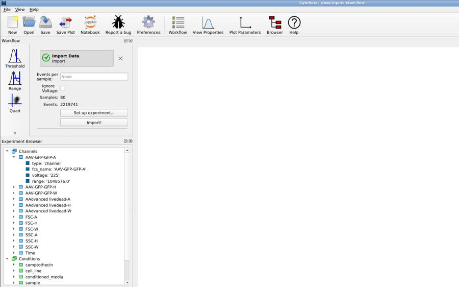
cd /task; cu click 43 493; sleep 0.5; cu click 43 549; sleep 1; cu screenshot /tmp/screen.png
/tmp/screen.png
{
"file_path": "/tmp/screen.png"
}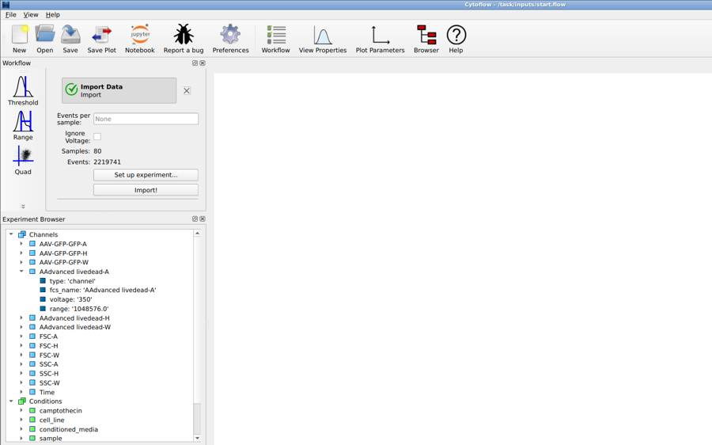
thinking
Channel mapping checks out: BL1 at 225 V is the CellEvent caspase-3/7 channel and BL2 at 350 V is the SYTOX AADvanced dead stain. I'm opening the plot views to check scatter and controls next.
cd /task; cu click 43 549; sleep 0.5; cu click 652 75; sleep 2; cu screenshot /tmp/screen.png
/tmp/screen.png
{
"file_path": "/tmp/screen.png"
}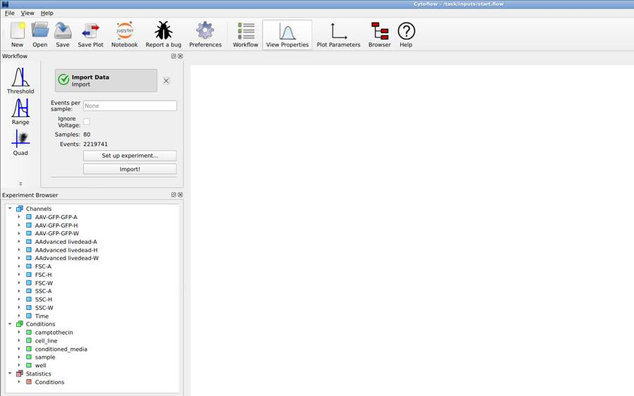
cd /task; cu click 62 29; sleep 1; cu screenshot /tmp/screen.png
/tmp/screen.png
{
"file_path": "/tmp/screen.png"
}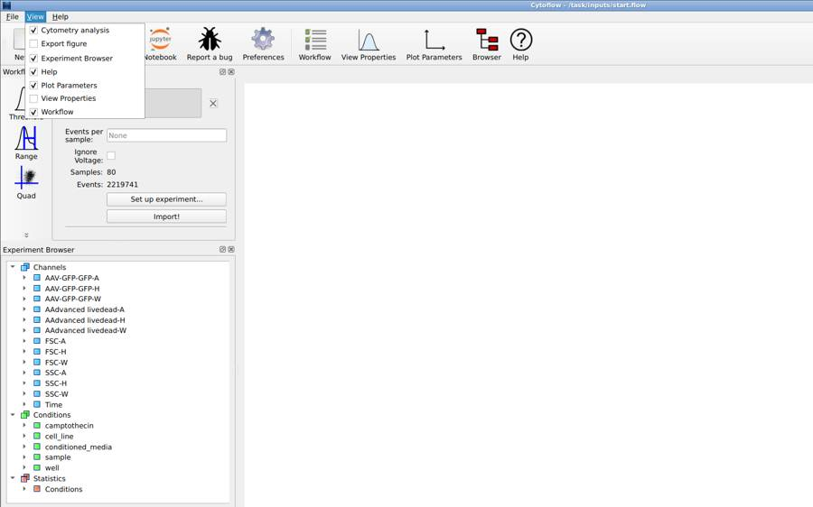
cd /task; cu click 120 174; sleep 1; cu double 700 9 2>/dev/null; cu click 700 9 double; sleep 2; cu screenshot /tmp/screen.png
# Computer-use helper: the agent's only way to act on the screen.
# cu screenshot [path] -> PNG of the screen (default /tmp/screen.png); prints path
# cu click X Y [left|right|double]
# cu move X Y | cu drag X1 Y1 X2 Y2 | cu scroll X Y up|down [N]
# cu type "text" (keystrokes) | cu paste "text" (clipboard) | cu key KEYS (e.g. ctrl+s, Return)
# cu cursor -> current mouse position
export DISPLAY=${DISPLAY:-:1}
cmd=$1; shift
/tmp/screen.png{
"file_path": "/tmp/screen.png"
}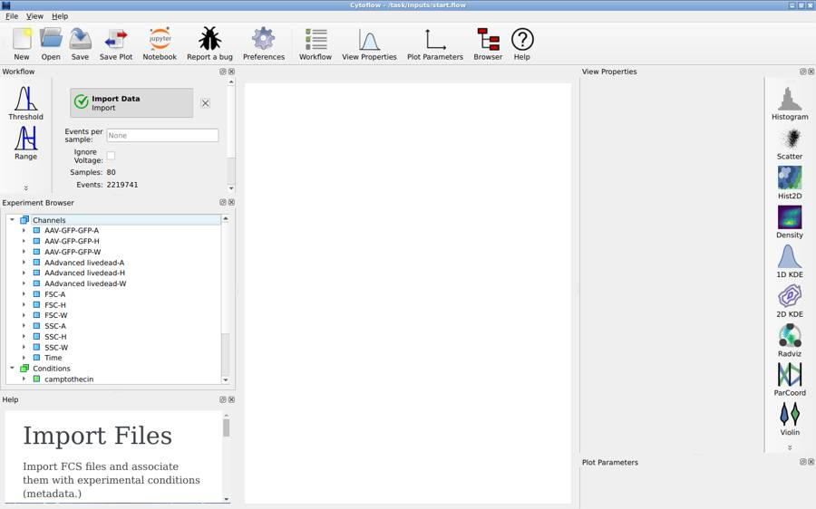
cd /task; cu click 408 706; sleep 1; cu click 1393 385; sleep 2; cu screenshot /tmp/screen.png
/tmp/screen.png
{
"file_path": "/tmp/screen.png"
}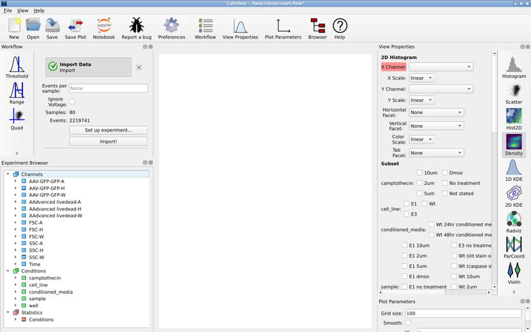
cd /task; cu click 1195 181; sleep 1; cu screenshot /tmp/screen.png
/tmp/screen.png
{
"file_path": "/tmp/screen.png"
}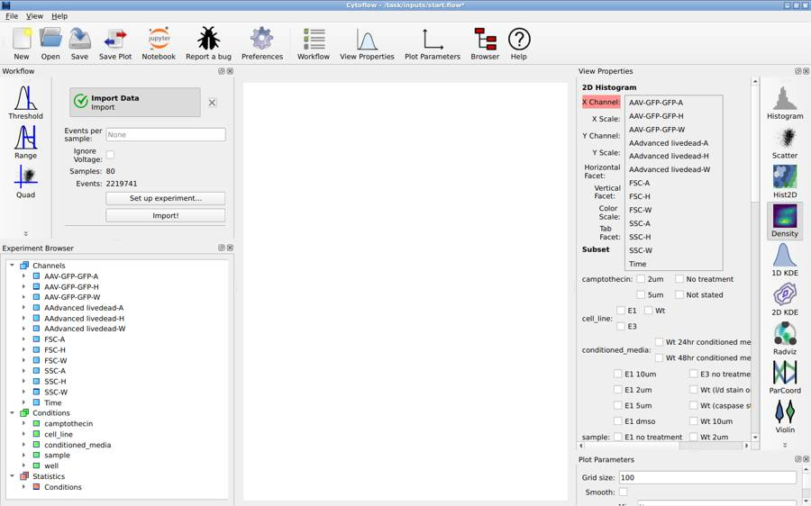
cd /task; cu click 1135 325; sleep 1; cu click 1195 241; sleep 1; cu screenshot /tmp/screen.png
/tmp/screen.png
{
"file_path": "/tmp/screen.png"
}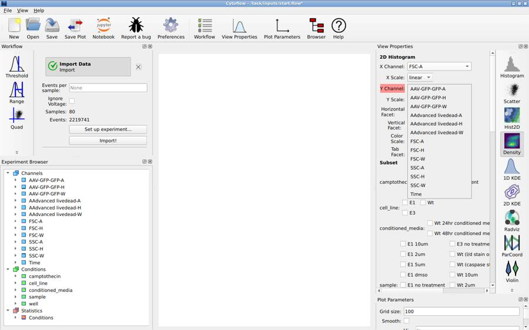
cd /task; cu click 1135 457; sleep 6; cu screenshot /tmp/screen.png
/tmp/screen.png
{
"file_path": "/tmp/screen.png"
}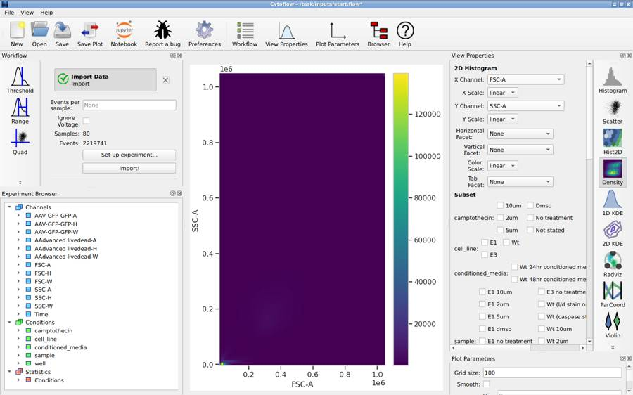
cd /task; cu click 1142 377; sleep 1; cu screenshot /tmp/screen.png
/tmp/screen.png
{
"file_path": "/tmp/screen.png"
}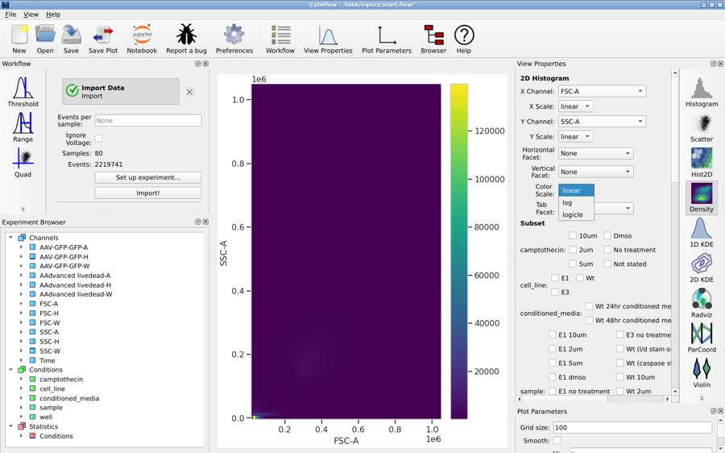
cd /task; cu click 1127 402; sleep 6; cu screenshot /tmp/screen.png
/tmp/screen.png
{
"file_path": "/tmp/screen.png"
}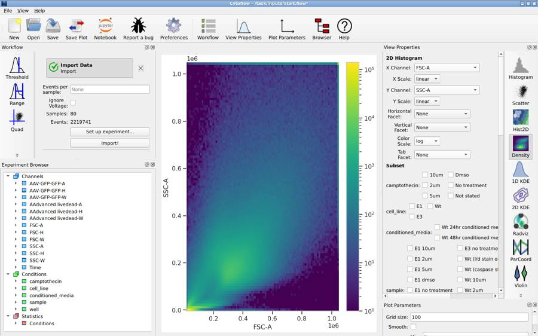
cd /task; cu click 1142 211; sleep 1; cu screenshot /tmp/screen.png
/tmp/screen.png
{
"file_path": "/tmp/screen.png"
}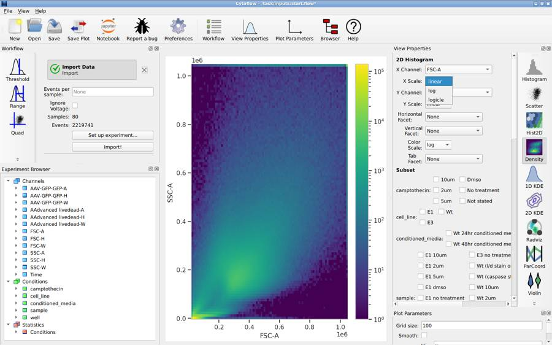
cd /task; cu click 1127 236; sleep 4; cu click 1142 271; sleep 1; cu click 1127 296; sleep 6; cu screenshot /tmp/screen.png
/tmp/screen.png
{
"file_path": "/tmp/screen.png"
}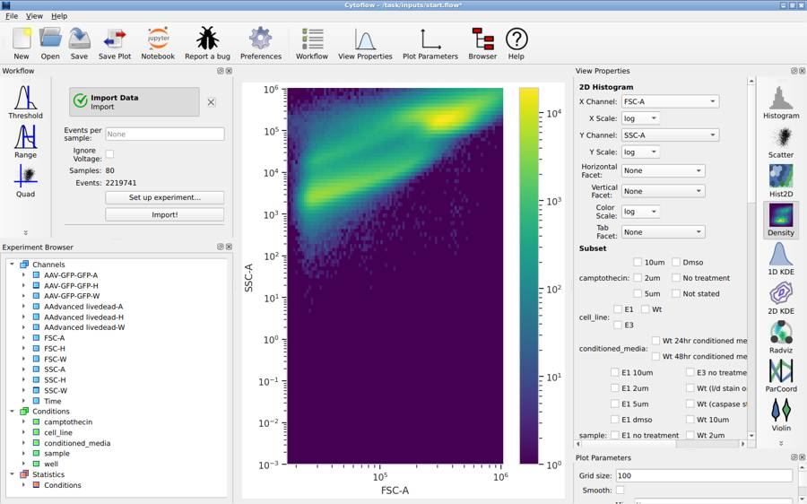
cd /task; cu drag 210 429 210 700; sleep 1; cu screenshot /tmp/screen.png
/tmp/screen.png
{
"file_path": "/tmp/screen.png"
}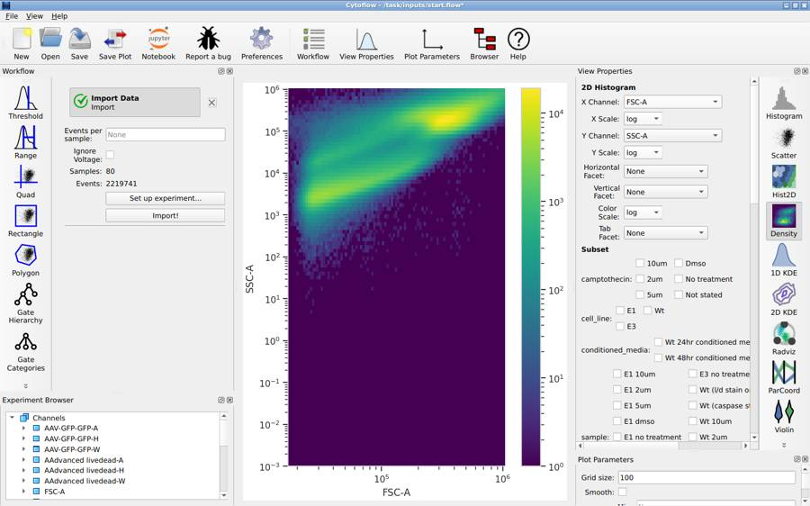
cd /task; cu click 1183 304; sleep 1; cu screenshot /tmp/screen.png
/tmp/screen.png
{
"file_path": "/tmp/screen.png"
}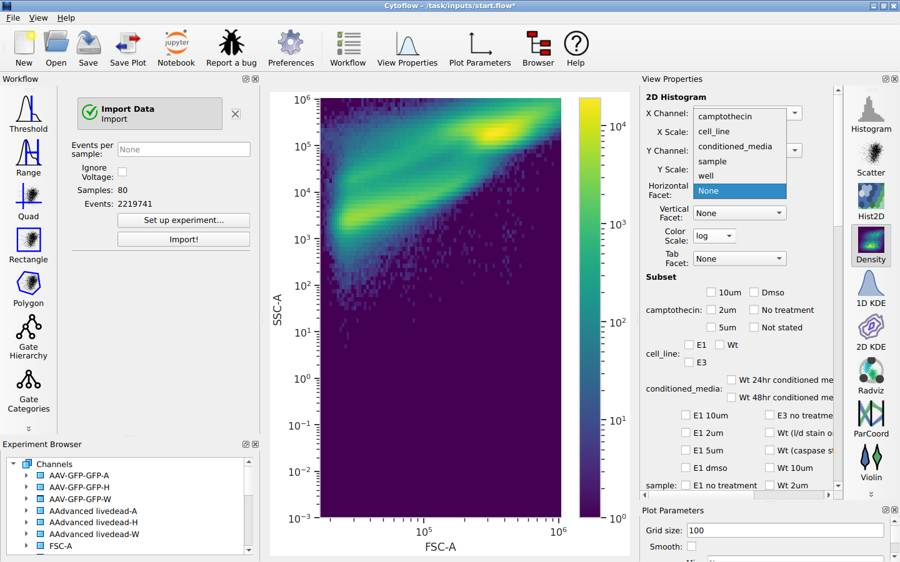
cd /task; cu click 1160 186; sleep 10; cu screenshot /tmp/screen.png
/tmp/screen.png
{
"file_path": "/tmp/screen.png"
}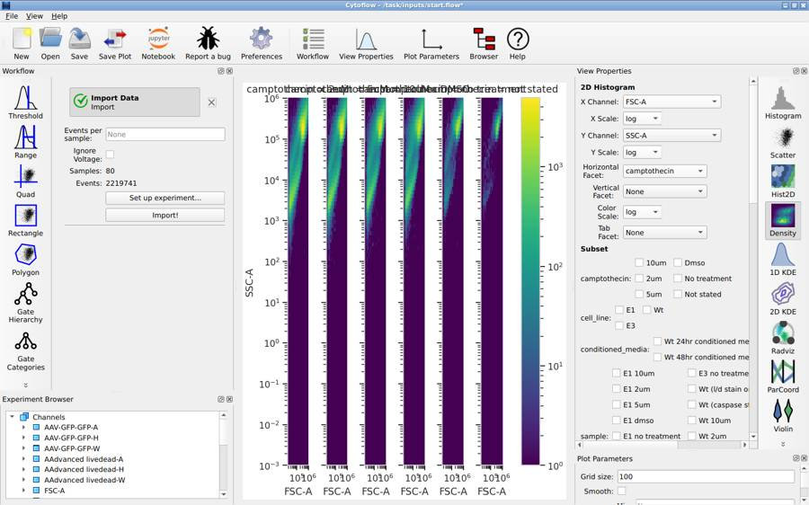
cd /task; cu click 204 75; sleep 2; cu screenshot /tmp/screen.png
/tmp/screen.png
{
"file_path": "/tmp/screen.png"
}cd /task; cu click 1297 194; cu type "300"; cu key Tab; sleep 6; cu screenshot /tmp/screen.png
/tmp/screen.png
{
"file_path": "/tmp/screen.png"
}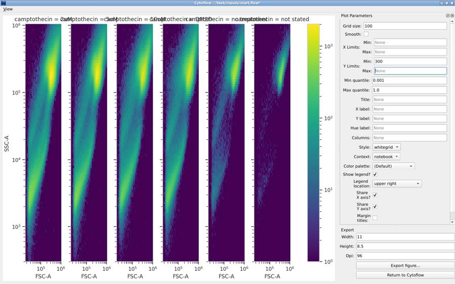
cd /task; cu click 1297 194; cu key ctrl+a; cu key BackSpace; cu key Tab; sleep 1; cu click 1282 871; sleep 3; cu click 1142 211; sleep 1; cu click 1135 212; sleep 3; cu click 1142 271; sleep 1; cu click 1135 272; sleep 3; cu click 204 75; sleep 8; cu screenshot /tmp/screen.png
/tmp/screen.png
{
"file_path": "/tmp/screen.png"
}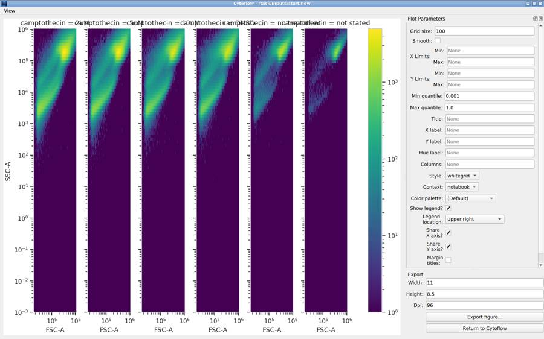
cd /task; ls -la inputs/start.flow; whoami; cu click 1282 871; sleep 3; cu screenshot /tmp/screen.png
-r--r--r-- 1 root root 20898 Nov 5 21:59 inputs/start.flow root /tmp/screen.png
{
"file_path": "/tmp/screen.png"
}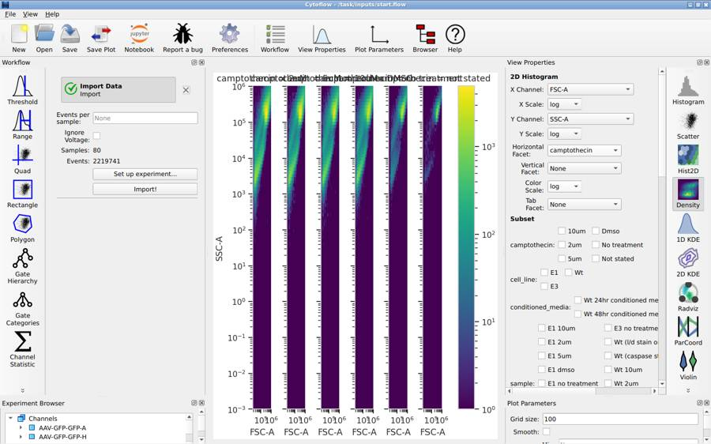
cd /task; cu click 21 28; sleep 1; cu screenshot /tmp/screen.png
/tmp/screen.png
{
"file_path": "/tmp/screen.png"
}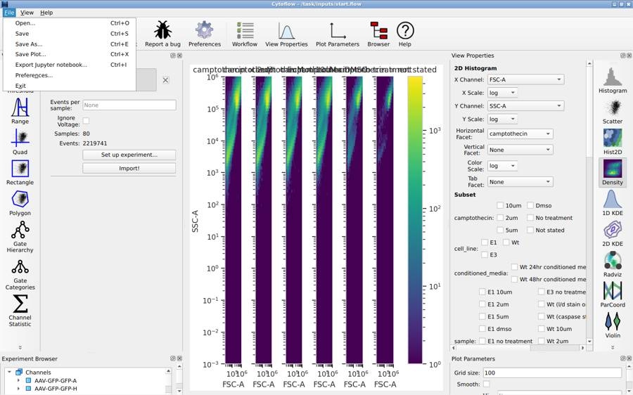
cd /task; cu click 65 100; sleep 2; cu screenshot /tmp/screen.png
/tmp/screen.png
{
"file_path": "/tmp/screen.png"
}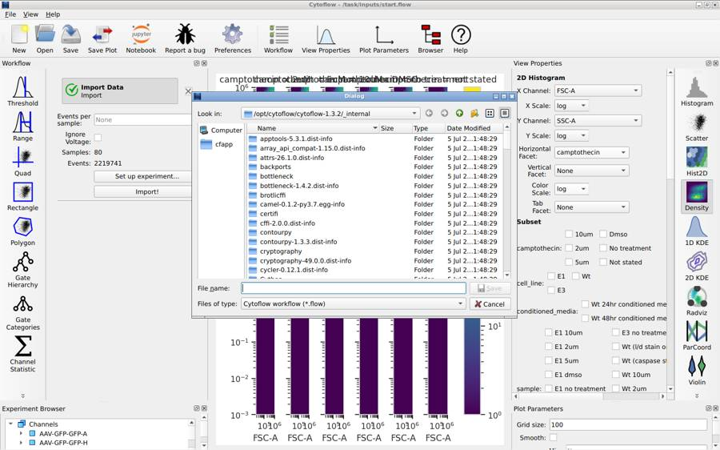
cd /task; cu click 707 576; cu paste "/task/outputs/workflow.flow"; cu key Return; sleep 3; cu screenshot /tmp/screen.png; ls -la outputs
/tmp/screen.png total 48 drwxrwsrwx 2 agent task 4096 Nov 6 00:38 . drwxr-xr-x 4 root root 4096 Nov 5 22:01 .. -rw-rw-r-- 1 cfapp task 38235 Nov 6 00:38 workflow.flow
cd /task; cu click 1142 211; sleep 1; cu screenshot /tmp/screen.png
/tmp/screen.png
{
"file_path": "/tmp/screen.png"
}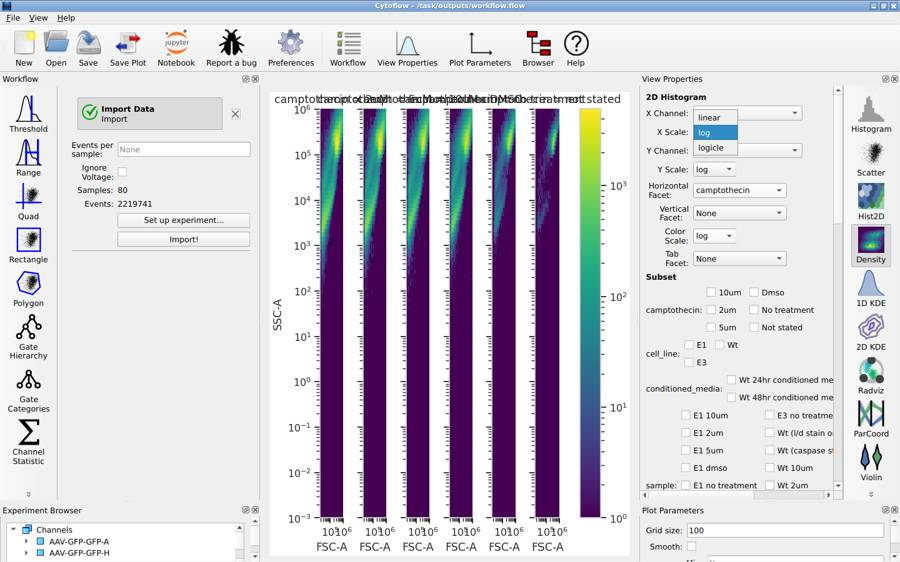
cd /task; cu click 1135 188; sleep 4; cu click 1142 271; sleep 1; cu screenshot /tmp/screen.png
/tmp/screen.png
{
"file_path": "/tmp/screen.png"
}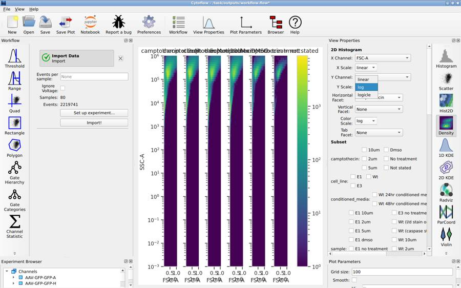
cd /task; cu click 1135 248; sleep 6; cu click 204 75; sleep 6; cu screenshot /tmp/screen.png
/tmp/screen.png
{
"file_path": "/tmp/screen.png"
}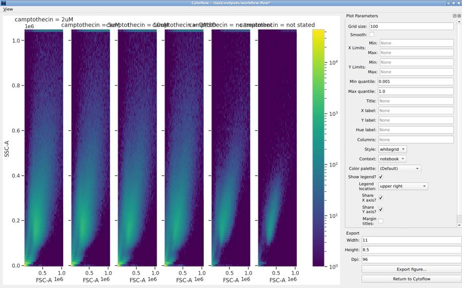
cd /task; cu click 1282 871; sleep 3; cu click 1195 181; sleep 1; cu click 1165 182; sleep 3; cu click 1195 241; sleep 1; cu screenshot /tmp/screen.png
/tmp/screen.png
{
"file_path": "/tmp/screen.png"
}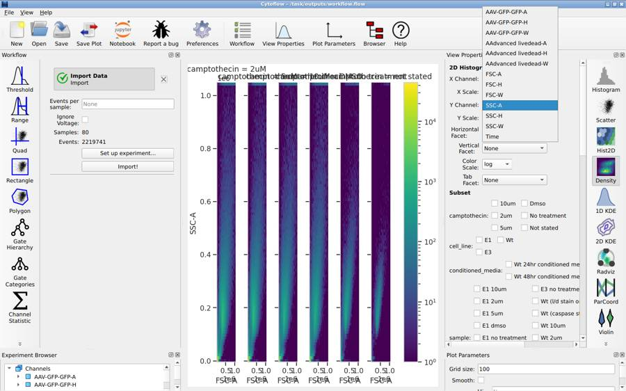
cd /task; cu click 1187 99; sleep 3; cu click 1195 181; sleep 1; cu screenshot /tmp/screen.png
/tmp/screen.png
{
"file_path": "/tmp/screen.png"
}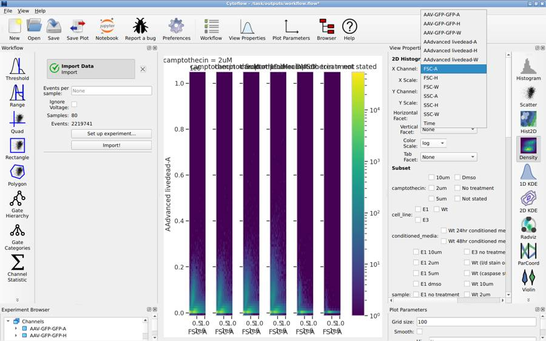
cd /task; cu click 1165 38; sleep 3; cu click 1142 211; sleep 1; cu screenshot /tmp/screen.png
/tmp/screen.png
{
"file_path": "/tmp/screen.png"
}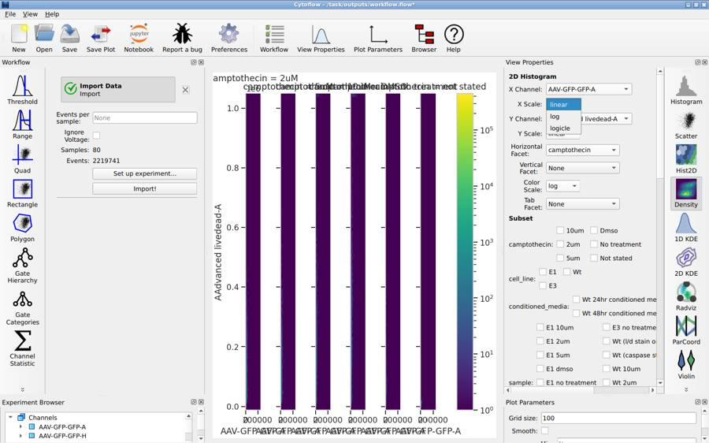
cd /task; cu click 1137 260; sleep 4; cu click 1142 271; sleep 1; cu screenshot /tmp/screen.png
/tmp/screen.png
{
"file_path": "/tmp/screen.png"
}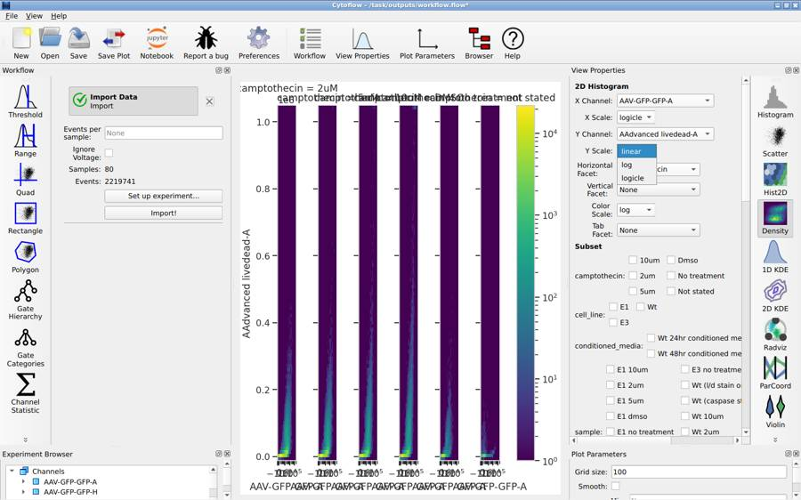
cd /task; cu click 1137 320; sleep 6; cu click 204 75; sleep 6; cu screenshot /tmp/screen.png
/tmp/screen.png
{
"file_path": "/tmp/screen.png"
}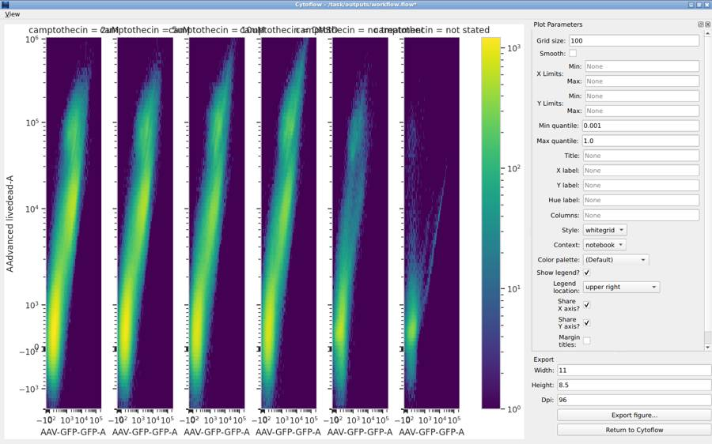
cd /task; cu click 1282 871; sleep 3; cu click 1183 304; sleep 1; cu screenshot /tmp/screen.png
/tmp/screen.png
{
"file_path": "/tmp/screen.png"
}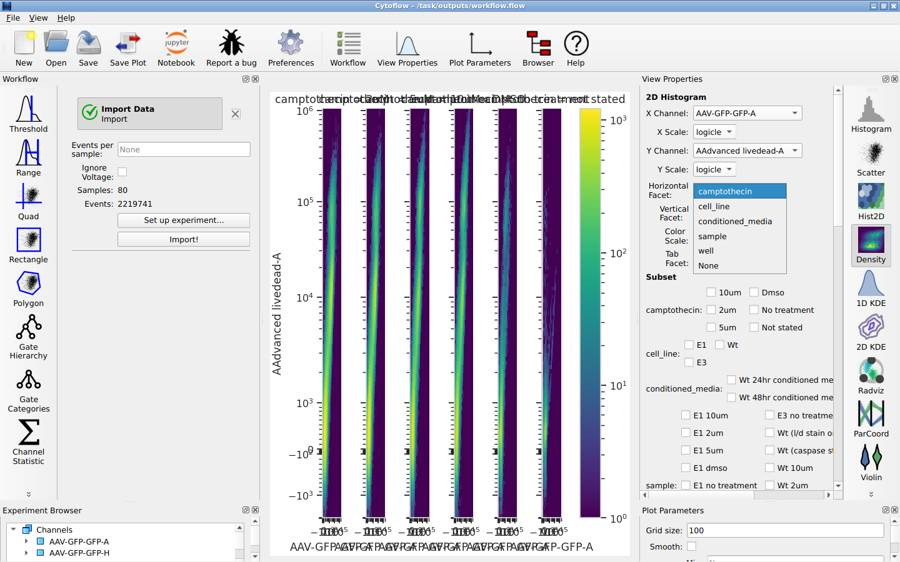
cd /task; cu click 1140 378; sleep 2; cu click 1206 496; sleep 2; cu click 1206 524; sleep 8; cu click 204 75; sleep 6; cu screenshot /tmp/screen.png
/tmp/screen.png
{
"file_path": "/tmp/screen.png"
}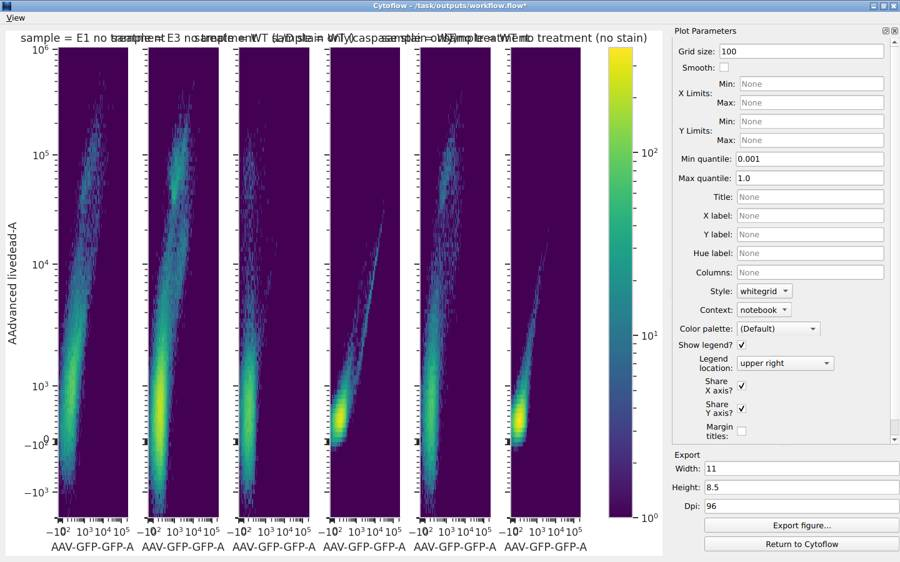
thinking
The G7 and G8 controls look correctly labelled, though G7 shows about 30% spill into BL2. I'm creating the Cells polygon gate on FSC-A/SSC-A next.
cd /task; cu click 1282 871; sleep 3; cu click 45 460; sleep 3; cu screenshot /tmp/screen.png
/tmp/screen.png
{
"file_path": "/tmp/screen.png"
}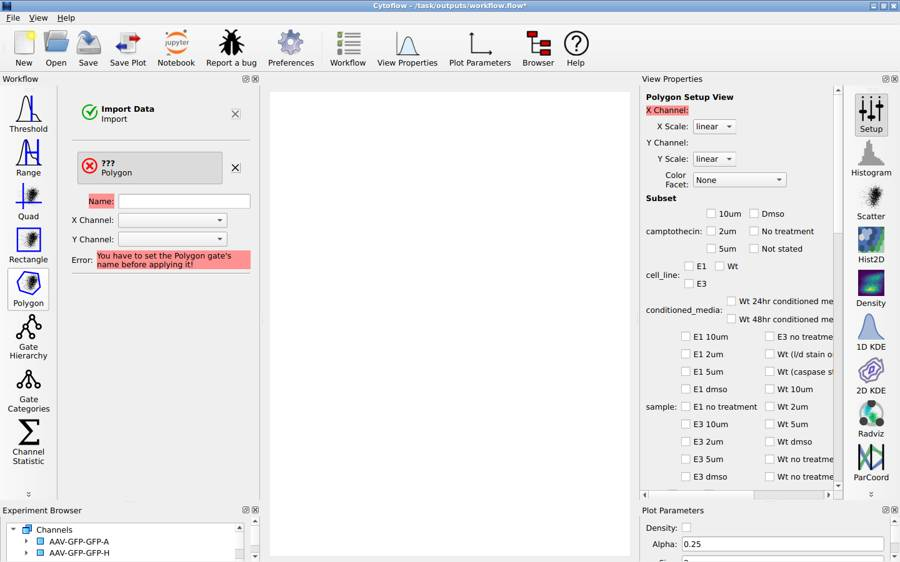
cd /task; cu click 294 322; cu type "Cells"; cu key Tab; sleep 1; cu click 276 352; sleep 1; cu screenshot /tmp/screen.png
/tmp/screen.png
{
"file_path": "/tmp/screen.png"
}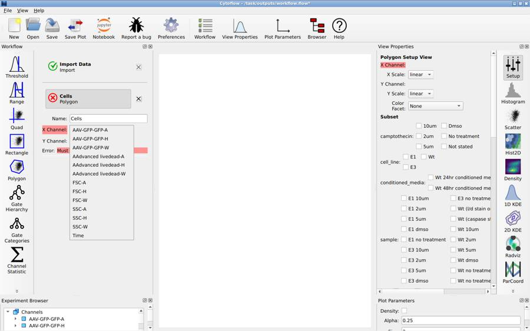
cd /task; cu click 215 496; sleep 1; cu click 276 383; sleep 1; cu screenshot /tmp/screen.png
/tmp/screen.png
{
"file_path": "/tmp/screen.png"
}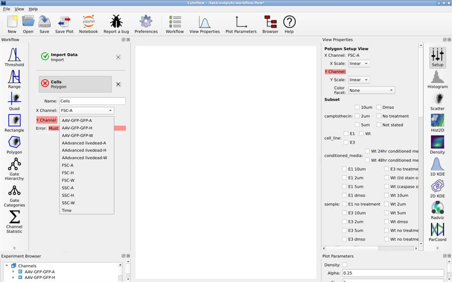
cd /task; cu click 215 599; sleep 2; cu click 1098 845; sleep 2; cu click 1142 202; sleep 1; cu screenshot /tmp/screen.png
/tmp/screen.png
{
"file_path": "/tmp/screen.png"
}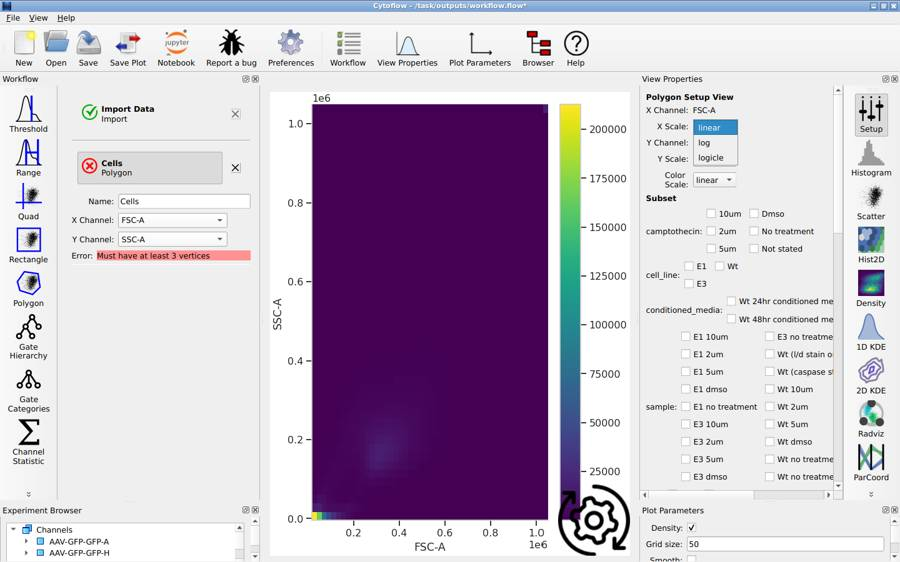
cd /task; cu click 1127 228; sleep 5; cu click 1142 254; sleep 1; cu screenshot /tmp/screen.png
/tmp/screen.png
{
"file_path": "/tmp/screen.png"
}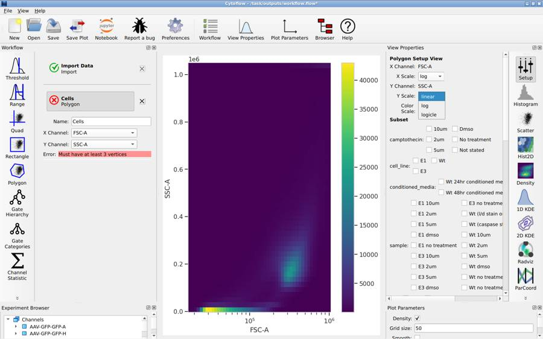
cd /task; cu click 1127 280; sleep 5; cu click 1142 288; sleep 1; cu screenshot /tmp/screen.png
/tmp/screen.png
{
"file_path": "/tmp/screen.png"
}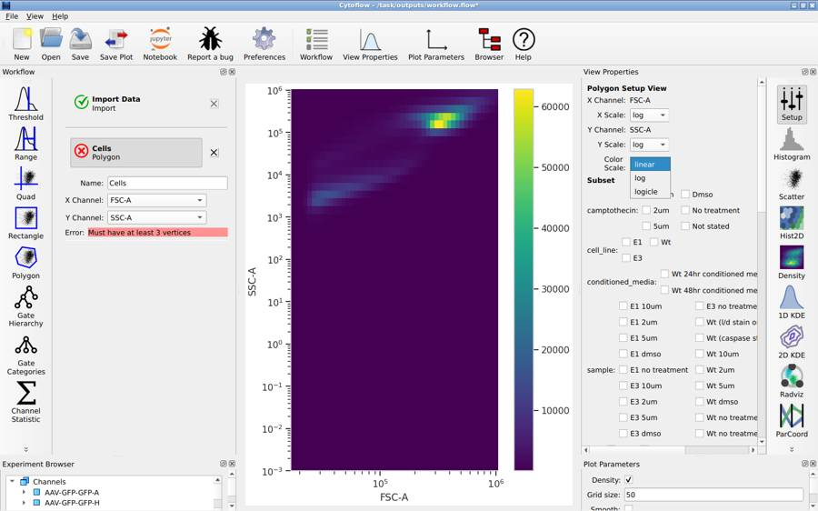
cd /task; cu click 1127 313; sleep 5; cu scroll 1230 870 down 3; sleep 1; cu screenshot /tmp/screen.png
/tmp/screen.png
{
"file_path": "/tmp/screen.png"
}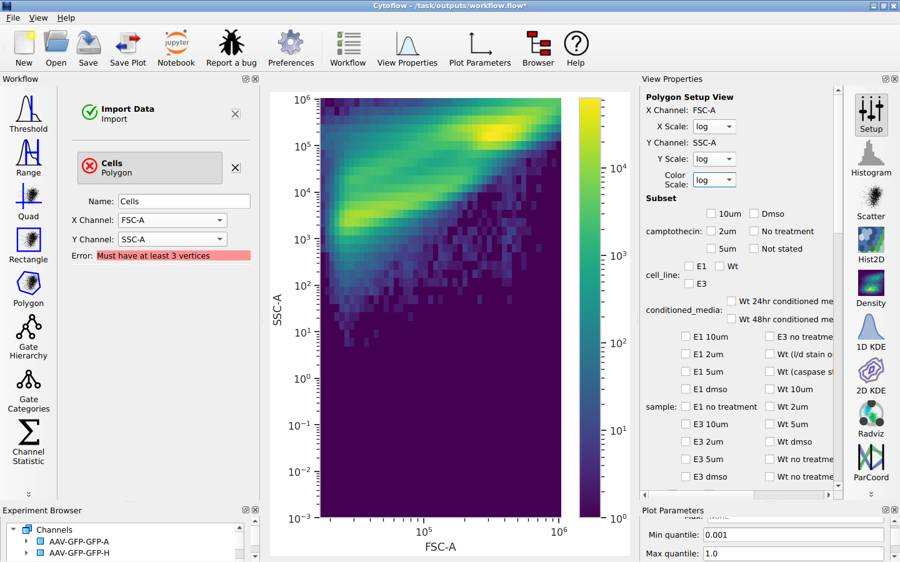
cd /task; cu drag 1230 804 1230 520; sleep 1; cu screenshot /tmp/screen.png
/tmp/screen.png
{
"file_path": "/tmp/screen.png"
}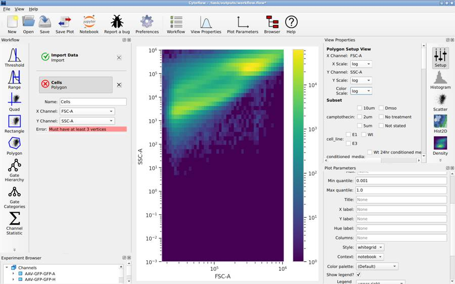
cd /task; cu scroll 1230 650 up 5; sleep 1; cu screenshot /tmp/screen.png
/tmp/screen.png
{
"file_path": "/tmp/screen.png"
}cd /task; cu click 1255 587; cu key ctrl+a; cu type "100"; cu key Tab; sleep 3; cu click 1270 639; cu type "10000"; cu key Tab; sleep 3; cu click 1270 669; cu type "1200000"; cu key Tab; sleep 3; cu click 1270 699; cu type "300"; cu key Tab; sleep 3; cu click 1270 729; cu type "1200000"; cu key Tab; sleep 6; cu screenshot /tmp/screen.png
/tmp/screen.png
{
"file_path": "/tmp/screen.png"
}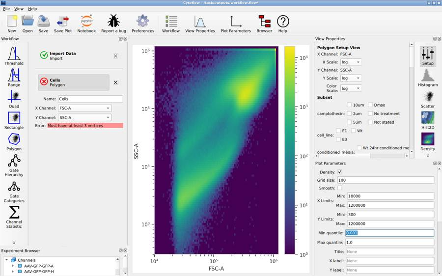
cd /task; cu click 204 75; sleep 6; cu screenshot /tmp/screen.png
/tmp/screen.png
{
"file_path": "/tmp/screen.png"
}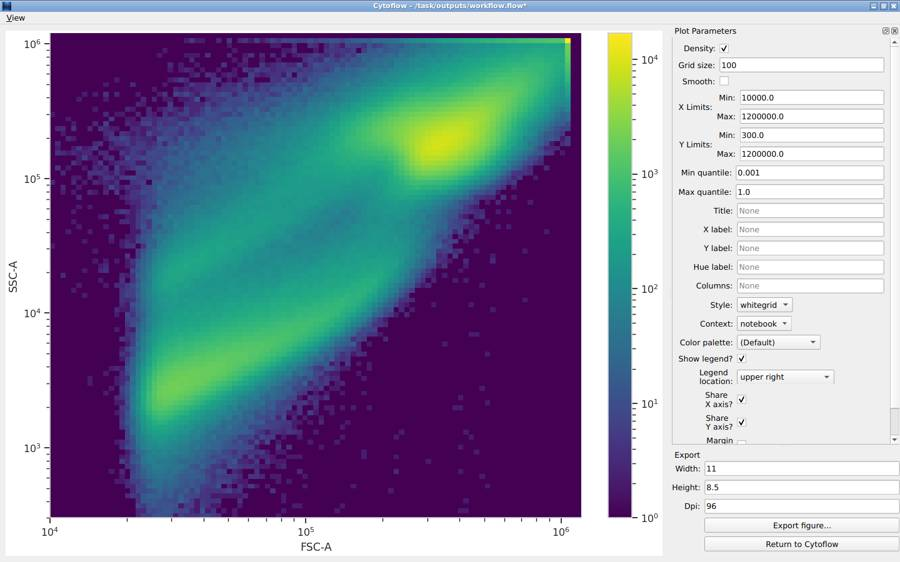
cd /task; cu click 1282 871; sleep 3; cu click 1206 370; sleep 8; cu click 204 75; sleep 6; cu screenshot /tmp/screen.png
/tmp/screen.png
{
"file_path": "/tmp/screen.png"
}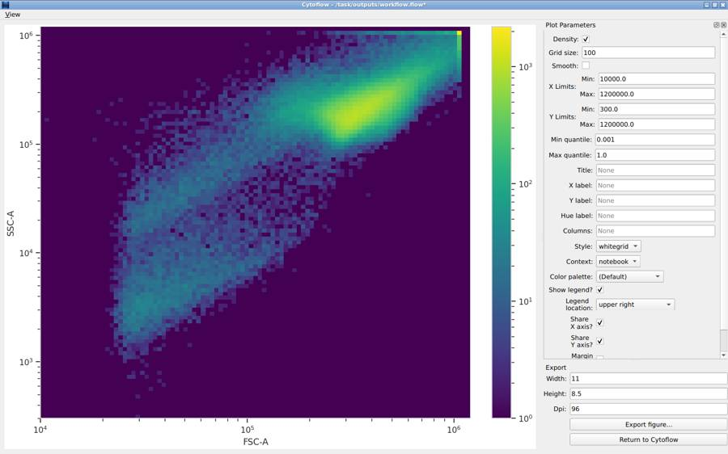
cd /task; cu click 1282 871; sleep 3; cu click 1206 370; sleep 6; cu click 1270 669; cu key ctrl+a; cu type "2000000"; cu key Tab; sleep 3; cu click 1270 729; cu key ctrl+a; cu type "2000000"; cu key Tab; sleep 6; cu screenshot /tmp/screen.png
/tmp/screen.png
{
"file_path": "/tmp/screen.png"
}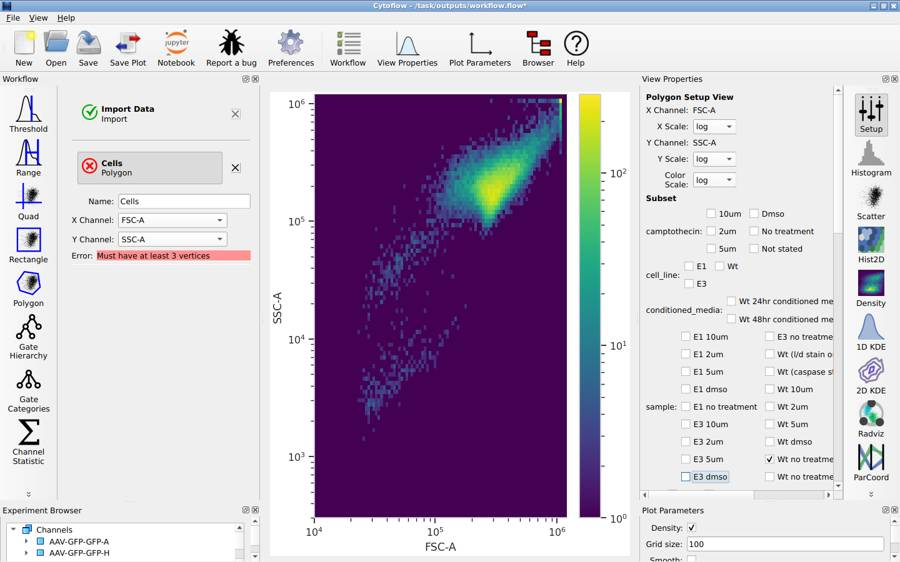
cd /task; cu click 1232 735; sleep 5; cu drag 1230 804 1230 520; sleep 1; cu scroll 1230 650 up 5; sleep 1; cu screenshot /tmp/screen.png
/tmp/screen.png
{
"file_path": "/tmp/screen.png"
}cd /task; cu click 1270 669; cu key ctrl+a; cu type "2000000"; cu key Tab; sleep 4; cu click 1270 729; cu key ctrl+a; cu type "2000000"; cu key Tab; sleep 6; cu screenshot /tmp/screen.png
/tmp/screen.png
{
"file_path": "/tmp/screen.png"
}cd /task; cu click 660 169; sleep 0.5; cu click 889 169; sleep 0.5; cu click 889 421; sleep 0.5; cu click 747 463; sleep 0.5; cu click 660 506 double; sleep 8; cu screenshot /tmp/screen.png
/tmp/screen.png
{
"file_path": "/tmp/screen.png"
}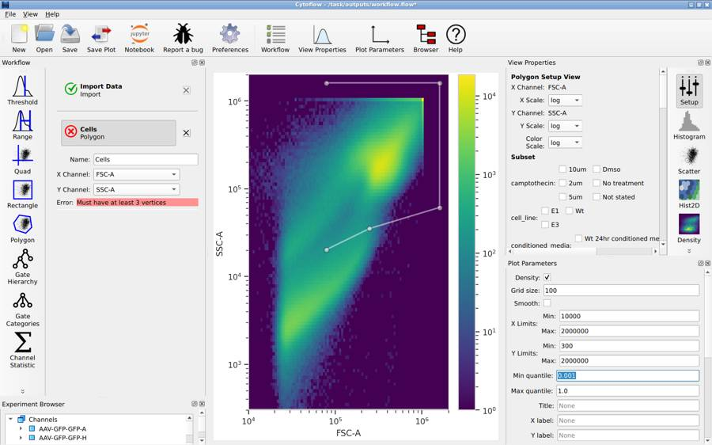
cd /task; cu click 660 169; sleep 6; cu screenshot /tmp/screen.png
/tmp/screen.png
{
"file_path": "/tmp/screen.png"
}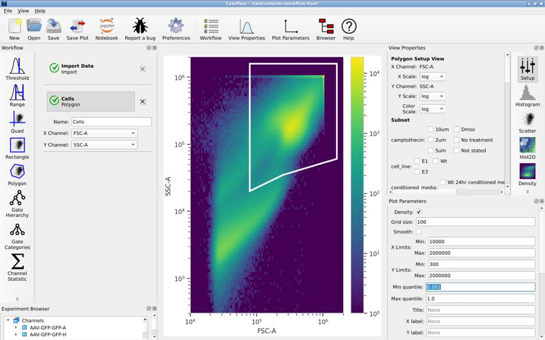
cd /task; cu key ctrl+s; sleep 2; cu click 45 460; sleep 3; cu click 294 409; cu type "Singlets"; cu key Tab; sleep 1; cu screenshot /tmp/screen.png
/tmp/screen.png
{
"file_path": "/tmp/screen.png"
}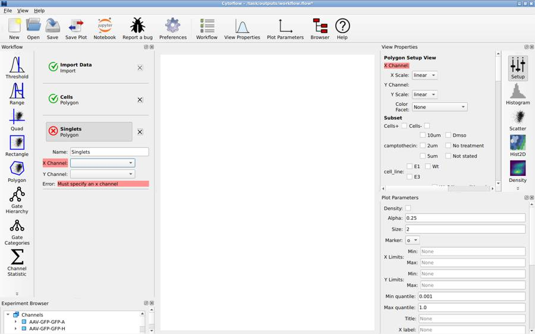
cd /task; cu click 276 439; sleep 1; cu screenshot /tmp/screen.png
/tmp/screen.png
{
"file_path": "/tmp/screen.png"
}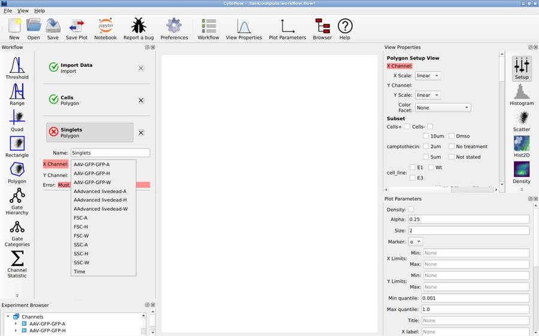
cd /task; cu click 215 583; sleep 1; cu click 276 469; sleep 1; cu screenshot /tmp/screen.png
/tmp/screen.png
{
"file_path": "/tmp/screen.png"
}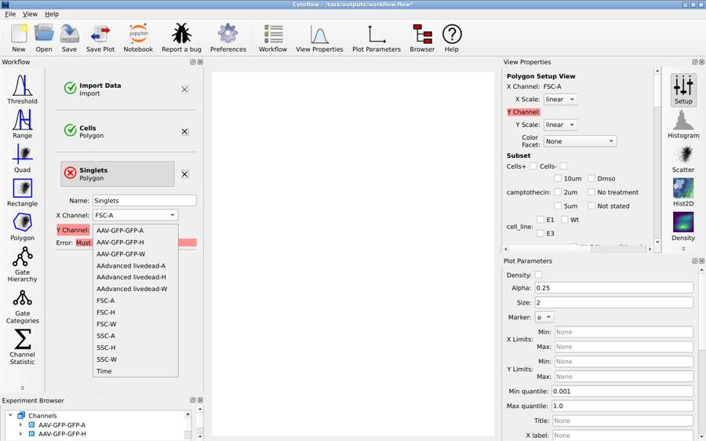
cd /task; cu click 215 637; sleep 1; cu click 1088 339; sleep 1; cu click 1098 561; sleep 10; cu screenshot /tmp/screen.png
/tmp/screen.png
{
"file_path": "/tmp/screen.png"
}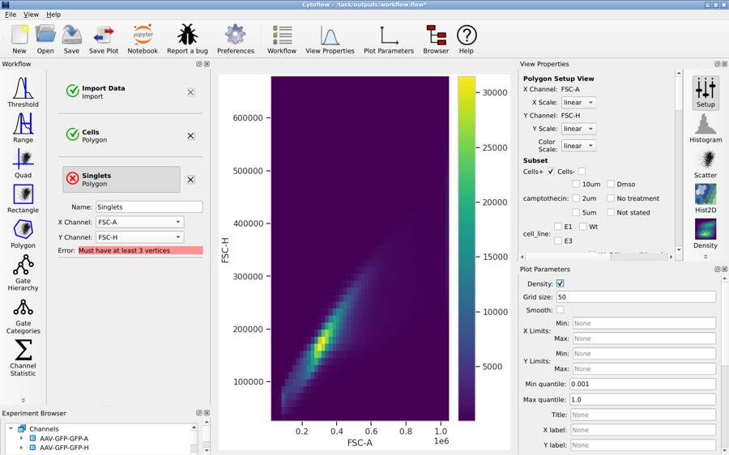
cd /task; cu click 1142 288; sleep 1; cu screenshot /tmp/screen.png
/tmp/screen.png
{
"file_path": "/tmp/screen.png"
}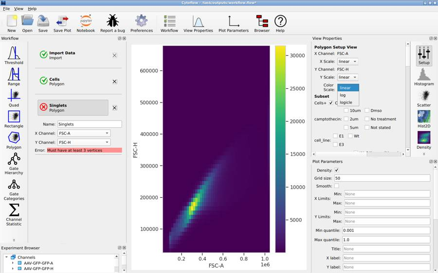
cd /task; cu click 1127 313; sleep 4; cu click 1255 587; cu key ctrl+a; cu type "100"; cu key Tab; sleep 3; cu click 1270 639; cu type "0"; cu key Tab; sleep 3; cu click 1270 669; cu type "1100000"; cu key Tab; sleep 3; cu click 1270 699; cu type "0"; cu key Tab; sleep 3; cu click 1270 729; cu type "800000"; cu key Tab; sleep 6; cu screenshot /tmp/screen.png
/tmp/screen.png
{
"file_path": "/tmp/screen.png"
}cd /task; cu click 204 75; sleep 6; cu screenshot /tmp/screen.png
/tmp/screen.png
{
"file_path": "/tmp/screen.png"
}cd /task; cu click 1282 871; sleep 4; cu screenshot /tmp/screen.png
/tmp/screen.png
{
"file_path": "/tmp/screen.png"
}cd /task; cu click 552 829; sleep 0.5; cu click 576 816; sleep 0.5; cu click 904 515; sleep 0.5; cu click 904 165; sleep 0.5; cu click 552 165; sleep 0.5; cu click 552 829; sleep 8; cu screenshot /tmp/screen.png
/tmp/screen.png
{
"file_path": "/tmp/screen.png"
}cd /task; cu key ctrl+s; sleep 2; cu click 45 460; sleep 3; cu screenshot /tmp/screen.png
/tmp/screen.png
{
"file_path": "/tmp/screen.png"
}cd /task; cu click 294 495; cu type "Live"; cu key Tab; sleep 1; cu click 276 525; sleep 1; cu screenshot /tmp/screen.png
/tmp/screen.png
{
"file_path": "/tmp/screen.png"
}cd /task; cu click 245 526; sleep 1; cu click 276 555; sleep 1; cu screenshot /tmp/screen.png
/tmp/screen.png
{
"file_path": "/tmp/screen.png"
}cd /task; cu click 267 628; sleep 1; cu click 1088 339; sleep 1; cu click 1107 361; sleep 1; cu click 1098 845; sleep 2; cu click 1142 202; sleep 1; cu screenshot /tmp/screen.png
/tmp/screen.png
{
"file_path": "/tmp/screen.png"
}cd /task; cu click 1137 252; sleep 5; cu click 1142 254; sleep 1; cu screenshot /tmp/screen.png
/tmp/screen.png
{
"file_path": "/tmp/screen.png"
}cd /task; cu click 1137 304; sleep 5; cu click 1142 288; sleep 1; cu click 1127 313; sleep 5; cu drag 1230 804 1230 520; sleep 1; cu scroll 1230 650 up 5; sleep 1; cu screenshot /tmp/screen.png
/tmp/screen.png
{
"file_path": "/tmp/screen.png"
}cd /task; cu click 1255 587; cu key ctrl+a; cu type "100"; cu key Tab; sleep 5; cu click 204 75; sleep 6; cu screenshot /tmp/screen.png
/tmp/screen.png
{
"file_path": "/tmp/screen.png"
}thinking
Three populations show up within Cells & Singlets: caspase-negative/SYTOX-low live cells, a caspase-dim/SYTOX-intermediate cluster, and a SYTOX-bright cluster. I'm faceting by dose and checking controls to set the live gate.
cd /task; cu click 1282 871; sleep 4; cu click 1393 455; sleep 3; cu screenshot /tmp/screen.png
/tmp/screen.png
{
"file_path": "/tmp/screen.png"
}cd /task; cu click 1195 181; sleep 1; cu screenshot /tmp/screen.png
/tmp/screen.png
{
"file_path": "/tmp/screen.png"
}cd /task; cu click 1165 182; sleep 1; cu click 1088 465; cu click 1107 487; sleep 1; cu click 1195 241; sleep 1; cu screenshot /tmp/screen.png
/tmp/screen.png
{
"file_path": "/tmp/screen.png"
}cd /task; cu click 1187 314; sleep 3; cu click 1142 211; sleep 1; cu click 1137 260; sleep 3; cu click 1142 271; sleep 1; cu click 1137 320; sleep 3; cu click 1142 377; sleep 1; cu click 1127 402; sleep 3; cu click 1183 304; sleep 1; cu click 1160 186; sleep 10; cu screenshot /tmp/screen.png
/tmp/screen.png
{
"file_path": "/tmp/screen.png"
}cd /task; cu click 204 75; sleep 8; cu screenshot /tmp/screen.png
/tmp/screen.png
{
"file_path": "/tmp/screen.png"
}thinking
The faceted view shows the dead/apoptotic cluster sitting above the spillover diagonal in treated wells, and DMSO wells carry a sizeable dim caspase/SYTOX cluster too. I'm checking the 1D SYTOX and caspase histograms to set the gate boundaries.
cd /task; cu click 1282 871; sleep 4; cu click 1393 250; sleep 3; cu screenshot /tmp/screen.png
/tmp/screen.png
{
"file_path": "/tmp/screen.png"
}cd /task; cu click 1088 441; cu click 1107 463; cu click 1206 516; cu click 1206 544; sleep 1; cu click 1190 181; sleep 1; cu screenshot /tmp/screen.png
/tmp/screen.png
{
"file_path": "/tmp/screen.png"
}cd /task; cu click 1182 254; sleep 3; cu click 1137 211; sleep 1; cu screenshot /tmp/screen.png
/tmp/screen.png
{
"file_path": "/tmp/screen.png"
}cd /task; cu click 1132 260; sleep 3; cu click 1178 317; sleep 1; cu screenshot /tmp/screen.png
/tmp/screen.png
{
"file_path": "/tmp/screen.png"
}cd /task; cu click 1135 269; sleep 8; cu click 204 75; sleep 6; cu screenshot /tmp/screen.png
/tmp/screen.png
{
"file_path": "/tmp/screen.png"
}thinking
SYTOX levels cluster by population: controls near 300–400, live cells up to about 3e3, dead cells at 3e4–2e5. I'm setting the Live boundary at BL2 = 3e3, and turning to the caspase histogram next.
cd /task; cu click 1282 871; sleep 4; cu click 1190 181; sleep 1; cu screenshot /tmp/screen.png
/tmp/screen.png
{
"file_path": "/tmp/screen.png"
}cd /task; cu click 1160 110; sleep 8; cu click 204 75; sleep 6; cu screenshot /tmp/screen.png
/tmp/screen.png
{
"file_path": "/tmp/screen.png"
}cd /task; cu click 1282 871; sleep 4; cu click 1393 180; sleep 8; cu drag 1230 804 1230 520; sleep 1; cu scroll 1230 650 up 5; sleep 1; cu screenshot /tmp/screen.png
/tmp/screen.png
{
"file_path": "/tmp/screen.png"
}cd /task; cu click 1270 639; cu type "-3000"; cu key Tab; sleep 3; cu click 1270 669; cu type "1000000"; cu key Tab; sleep 3; cu click 1270 699; cu type "-3000"; cu key Tab; sleep 3; cu click 1270 729; cu type "1000000"; cu key Tab; sleep 7; cu screenshot /tmp/screen.png
/tmp/screen.png
{
"file_path": "/tmp/screen.png"
}cd /task; cu click 519 826; sleep 0.5; cu click 892 826; sleep 0.5; cu click 892 160; sleep 0.5; cu click 679 557; sleep 0.5; cu click 519 557; sleep 0.5; cu click 519 826; sleep 8; cu screenshot /tmp/screen.png
/tmp/screen.png
{
"file_path": "/tmp/screen.png"
}cd /task; cu key ctrl+s; sleep 3; grep -n -A12 "!polygon" outputs/workflow.flow | grep -v "^\s*$" | head -80
2124: current_view: &id003 !polygon-view;3 2125- current_plot: null 2126- huefacet: '' 2127- huescale: log 2128: op: &id002 !polygon;1 2129- name: Cells 2130- vertices: 2131- - !!python/tuple 2132- - 79137.49418829005 2133- - 1593143.312579634 2134- - !!python/tuple 2135- - 1604717.4398345246 2136- - 1593143.312579634 2137- - !!python/tuple 2138- - 1604717.4398345246 2139- - 60563.6005548987 2140- - !!python/tuple -- 2153: plot_params: !polygon-params;1 2154- alpha: 0.25 2155- col_wrap: null 2156- density: true 2157- despine: true 2158- gridsize: 100 2159- huelabel: '' 2160- legend: true 2161- marker: o 2162- max_quantile: 1.0 2163- min_quantile: 0.001 2164- s: 2 2165- sharex: true -- 3363: current_view: &id005 !polygon-view;3 3364- current_plot: null 3365- huefacet: '' 3366- huescale: log 3367: op: &id004 !polygon;1 3368- name: Singlets 3369- vertices: 3370- - !!python/tuple 3371- - 50466.1357619965 3372- - 5397.536128735112 3373- - !!python/tuple 3374- - 121102.29083993292 3375- - 20179.2531753089 3376- - !!python/tuple 3377- - 1088510.5016899323 3378- - 377404.08180084225 3379- - !!python/tuple -- 3389: plot_params: !polygon-params;1 3390- alpha: 0.25 3391- col_wrap: null 3392- density: true 3393- despine: true 3394- gridsize: 100 3395- huelabel: '' 3396- legend: true 3397- marker: o 3398- max_quantile: 1.0 3399- min_quantile: 0.001 3400- s: 2 3401- sharex: true -- 4621: current_view: &id007 !polygon-view;3 4622- current_plot: null 4623- huefacet: '' 4624- huescale: log 4625: op: &id006 !polygon;1 4626- name: Live 4627- vertices: 4628- - !!python/tuple 4629- - -79.37302185947551 4630- - -1595.8027205412918 4631- - !!python/tuple 4632- - 971132.8134009156 4633- - -1595.8027205412918 4634- - !!python/tuple 4635- - 971132.8134009156 4636- - 995343.1140841272
cd /task; sed -n 4625,4660p outputs/workflow.flow; sed -n 2128,2152p outputs/workflow.flow; grep -n "xscale\|yscale" outputs/workflow.flow | head -30
op: &id006 !polygon;1
name: Live
vertices:
- !!python/tuple
- -79.37302185947551
- -1595.8027205412918
- !!python/tuple
- 971132.8134009156
- -1595.8027205412918
- !!python/tuple
- 971132.8134009156
- 995343.1140841272
- !!python/tuple
- 2935.6390226025183
- 3014.4123904828393
- !!python/tuple
- -79.37302185947551
- 3014.4123904828393
xchannel: AAV-GFP-GFP-A
xscale: logicle
ychannel: AAdvanced livedead-A
yscale: logicle
plot_params: !polygon-params;1
alpha: 0.25
col_wrap: null
density: true
despine: true
gridsize: 100
huelabel: ''
legend: true
marker: o
max_quantile: 1.0
min_quantile: 0.001
s: 2
sharex: true
sharey: true
op: &id002 !polygon;1
name: Cells
vertices:
- !!python/tuple
- 79137.49418829005
- 1593143.312579634
- !!python/tuple
- 1604717.4398345246
- 1593143.312579634
- !!python/tuple
- 1604717.4398345246
- 60563.6005548987
- !!python/tuple
- 249703.64012797363
- 34803.7357070624
- !!python/tuple
- 79137.49418829005
- 20000.462457132995
- !!python/tuple
- 79137.49418829005
- 20000.462457132995
xchannel: FSC-A
xscale: log
ychannel: SSC-A
yscale: log
435: xscale: logicle
438: yscale: logicle
2150: xscale: log
2152: yscale: log
3386: xscale: linear
3388: yscale: linear
4644: xscale: logicle
4646: yscale: logicle
5765: xscale: logicle
5768: yscale: logiclethinking
The Live polygon's left edge is at BL1 = −79 because the logicle axis ignored my −3000 limit, which would drop live cells with negative BL1. I'm widening the axis with min quantile = 0 and redrawing.
cd /task; cu click 1270 759; cu key ctrl+a; cu type "0"; cu key Tab; sleep 8; cu screenshot /tmp/screen.png
/tmp/screen.png
{
"file_path": "/tmp/screen.png"
}cd /task; cu click 1270 759; cu key ctrl+a; cu type "0.000001"; cu key Tab; sleep 8; cu screenshot /tmp/screen.png
/tmp/screen.png
{
"file_path": "/tmp/screen.png"
}thinking
The logicle axis cuts off BL1 below about −80, so roughly 0.1% of events fall outside the Live polygon, which I'll check against a plain BL2 range gate later. Next I'm adding the caspase threshold gate.
cd /task; cu click 1270 759; cu key ctrl+a; cu type "0.001"; cu key Tab; sleep 4; cu key ctrl+s; sleep 2; cu click 45 180; sleep 3; cu screenshot /tmp/screen.png
/tmp/screen.png
{
"file_path": "/tmp/screen.png"
}cd /task; cu click 294 581; cu type "Casp_pos"; cu key Tab; sleep 1; cu click 274 612; sleep 1; cu screenshot /tmp/screen.png
/tmp/screen.png
{
"file_path": "/tmp/screen.png"
}cd /task; cu click 243 600; sleep 1; cu click 294 642; cu key ctrl+a; cu type "1000"; cu key Tab; sleep 2; cu click 1088 309; cu click 1107 352; cu click 1083 330; sleep 1; cu click 1140 224; sleep 1; cu screenshot /tmp/screen.png
/tmp/screen.png
{
"file_path": "/tmp/screen.png"
}cd /task; cu click 1135 273; sleep 6; cu screenshot /tmp/screen.png
/tmp/screen.png
{
"file_path": "/tmp/screen.png"
}cd /task; cu key ctrl+s; sleep 2; cu click 45 710; sleep 3; cu screenshot /tmp/screen.png
/tmp/screen.png
{
"file_path": "/tmp/screen.png"
}cd /task; cu drag 210 805 210 895; sleep 1; cu scroll 250 500 down 5; sleep 1; cu screenshot /tmp/screen.png
/tmp/screen.png
{
"file_path": "/tmp/screen.png"
}cd /task; cu click 290 480; cu type "Counts"; cu key Tab; sleep 1; cu drag 421 500 700 500; sleep 2; cu screenshot /tmp/screen.png
/tmp/screen.png
{
"file_path": "/tmp/screen.png"
}cd /task; cu click 254 541; sleep 1; cu screenshot /tmp/screen.png
/tmp/screen.png
{
"file_path": "/tmp/screen.png"
}cd /task; cu click 205 542; sleep 1; cu click 185 570; cu click 185 598; cu click 185 626; cu click 185 654; cu click 432 654; sleep 15; cu screenshot /tmp/screen.png
/tmp/screen.png
{
"file_path": "/tmp/screen.png"
}cd /task; cu click 264 511; sleep 1; cu screenshot /tmp/screen.png
/tmp/screen.png
{
"file_path": "/tmp/screen.png"
}cd /task; cu click 205 631; sleep 10; cu drag 699 500 421 500; sleep 2; cu click 1393 507; sleep 1; cu screenshot /tmp/screen.png
/tmp/screen.png
{
"file_path": "/tmp/screen.png"
}cd /task; cu click 1405 190; sleep 3; cu screenshot /tmp/screen.png
/tmp/screen.png
{
"file_path": "/tmp/screen.png"
}cd /task; cu click 1393 507; sleep 2; cu click 1120 181; sleep 1; cu screenshot /tmp/screen.png
/tmp/screen.png
{
"file_path": "/tmp/screen.png"
}cd /task; cu click 1125 206; sleep 6; cu screenshot /tmp/screen.png
/tmp/screen.png
{
"file_path": "/tmp/screen.png"
}cd /task; cu click 1142 211; sleep 2; cu screenshot /tmp/screen.png
/tmp/screen.png
{
"file_path": "/tmp/screen.png"
}cd /task; mkdir -p /tmp/cf; cu click 707 567; cu paste "/task/outputs/cytoflow_counts_export.csv"; cu key Return; sleep 3; ls -la outputs; head -5 outputs/cytoflow_counts_export.csv; wc -l outputs/cytoflow_counts_export.csv
total 156 drwxrwsrwx 2 agent task 4096 Nov 6 01:04 . drwxr-xr-x 4 root root 4096 Nov 5 22:01 .. -rw-rw-r-- 1 cfapp task 21555 Nov 6 01:04 cytoflow_counts_export.csv -rw-rw-r-- 1 cfapp task 122988 Nov 6 01:01 workflow.flow Casp_pos,Cells,Live,Singlets,well,FSC-A 0,0,0,0,A1,347.0 0,0,0,0,A10,487.0 0,0,0,0,A11,434.0 0,0,0,0,A12,433.0 1259 outputs/cytoflow_counts_export.csv
cd /task; cu key ctrl+s; sleep 2; mkdir -p /task/work; python3 - <<'EOF'
import pandas as pd
d=pd.read_csv('/task/outputs/cytoflow_counts_export.csv')
print(d.dtypes); print(d.head(20))
for c in ['Casp_pos','Cells','Live','Singlets']: print(c, d[c].unique())
EOFCasp_pos int64
Cells int64
Live int64
Singlets int64
well object
FSC-A float64
dtype: object
Casp_pos Cells Live Singlets well FSC-A
0 0 0 0 0 A1 347.0
1 0 0 0 0 A10 487.0
2 0 0 0 0 A11 434.0
3 0 0 0 0 A12 433.0
4 0 0 0 0 A2 264.0
5 0 0 0 0 A3 343.0
6 0 0 0 0 A4 303.0
7 0 0 0 0 A5 282.0
8 0 0 0 0 A6 302.0
9 0 0 0 0 A7 273.0
10 0 0 0 0 A8 263.0
11 0 0 0 0 A9 548.0
12 0 0 0 0 B1 189.0
13 0 0 0 0 B10 267.0
14 0 0 0 0 B11 334.0
15 0 0 0 0 B12 215.0
16 0 0 0 0 B2 215.0
17 0 0 0 0 B3 329.0
18 0 0 0 0 B4 225.0
19 0 0 0 0 B5 132.0
Casp_pos [0 1]
Cells [0 1]
Live [0 1]
Singlets [0 1]cd /task; cat > /task/work/compute.py <<'EOF'
import pandas as pd, numpy as np
d=pd.read_csv('/task/outputs/cytoflow_counts_export.csv')
d=d.rename(columns={'FSC-A':'n'})
lay=pd.read_csv('/task/inputs/plate_layout.csv')
rows=[]
for w,g in d.groupby('well'):
tot=g.n.sum()
cells=g[g.Cells==1].n.sum()
sing=g[(g.Cells==1)&(g.Singlets==1)].n.sum()
live=g[(g.Cells==1)&(g.Singlets==1)&(g.Live==1)].n.sum()
casp=g[(g.Cells==1)&(g.Singlets==1)&(g.Live==1)&(g.Casp_pos==1)].n.sum()
dead=sing-live
# caspase+ among all singlets (any viability)
casp_sing=g[(g.Cells==1)&(g.Singlets==1)&(g.Casp_pos==1)].n.sum()
rows.append(dict(well=w,all=int(tot),cells=int(cells),singlets=int(sing),live=int(live),casp=int(casp),casp_sing=int(casp_sing)))
r=pd.DataFrame(rows)
r=lay.merge(r,on='well')
r['pct_cells']=100*r.cells/r['all']
r['pct_sing']=100*r.singlets/r.cells
r['pct_live']=100*r.live/r.singlets
r['pct_casp_live']=100*r.casp/r.live
r['pct_casp_sing']=100*r.casp_sing/r.singlets
r['pct_dead']=100-r.pct_live
pd.set_option('display.width',250); pd.set_option('display.max_rows',200)
print(r[['well','sample','conditioned_media','all','cells','singlets','live','casp','pct_cells','pct_sing','pct_live','pct_casp_live','pct_casp_sing']].round(1).to_string())
r.to_csv('/task/work/perwell.csv',index=False)
EOF
python3 /task/work/compute.pywell sample conditioned_media all cells singlets live casp pct_cells pct_sing pct_live pct_casp_live pct_casp_sing 0 A1 WT 10uM WT 24hr conditioned media 31328 21169 20522 13233 558 67.6 96.9 64.5 4.2 22.5 1 A2 WT 5uM WT 24hr conditioned media 40169 29176 28101 19111 1017 72.6 96.3 68.0 5.3 24.7 2 A3 WT 2uM WT 24hr conditioned media 47337 32378 31398 21480 1256 68.4 97.0 68.4 5.8 24.2 3 A4 WT DMSO WT 24hr conditioned media 33079 24239 23378 13786 913 73.3 96.4 59.0 6.6 31.9 4 A5 WT 10uM WT 48hr conditioned media 34963 25445 24563 15623 767 72.8 96.5 63.6 4.9 26.5 5 A6 WT 5uM WT 48hr conditioned media 33431 25711 24645 15420 516 76.9 95.9 62.6 3.3 24.6 6 A7 WT 2uM WT 48hr conditioned media 36445 28192 27265 17221 483 77.4 96.7 63.2 2.8 24.6 7 A8 WT DMSO WT 48hr conditioned media 22867 17620 16894 9821 321 77.1 95.9 58.1 3.3 28.2 8 A9 WT 10uM no conditioned media 40034 25256 24205 15187 511 63.1 95.8 62.7 3.4 23.3 9 A10 WT 5uM no conditioned media 42298 29497 28361 18321 512 69.7 96.1 64.6 2.8 24.0 10 A11 WT 2uM no conditioned media 43376 29428 28355 18237 539 67.8 96.4 64.3 3.0 25.8 11 A12 WT DMSO no conditioned media 30724 19875 19005 11005 260 64.7 95.6 57.9 2.4 26.8 12 B1 E1 10uM WT 24hr conditioned media 18757 14411 14076 3458 576 76.8 97.7 24.6 16.7 65.5 13 B2 E1 5uM WT 24hr conditioned media 32477 23319 22592 6360 811 71.8 96.9 28.2 12.8 65.7 14 B3 E1 2uM WT 24hr conditioned media 40067 27400 26607 5910 936 68.4 97.1 22.2 15.8 71.6 15 B4 E1 DMSO WT 24hr conditioned media 19965 14125 13539 3241 394 70.7 95.9 23.9 12.2 64.8 16 B5 E1 10uM WT 48hr conditioned media 17852 14266 13979 3160 362 79.9 98.0 22.6 11.5 65.0 17 B6 E1 5uM WT 48hr conditioned media 31705 23085 22408 5499 584 72.8 97.1 24.5 10.6 66.3 18 B7 E1 2uM WT 48hr conditioned media 35417 24785 24066 4884 549 70.0 97.1 20.3 11.2 70.1 19 B8 E1 DMSO WT 48hr conditioned media 26222 17511 16847 3420 376 66.8 96.2 20.3 11.0 68.4 20 B9 E1 10uM no conditioned media 34411 22617 21647 8804 453 65.7 95.7 40.7 5.1 44.7 21 B10 E1 5uM no conditioned media 40098 26278 25113 10084 458 65.5 95.6 40.2 4.5 44.0 22 B11 E1 2uM no conditioned media 41005 25080 24134 8119 693 61.2 96.2 33.6 8.5 52.0 23 B12 E1 DMSO no conditioned media 31680 16688 15776 4758 235 52.7 94.5 30.2 4.9 47.3 24 C1 E3 10uM WT 24hr conditioned media 17681 11806 10885 2426 21 66.8 92.2 22.3 0.9 51.3 25 C2 E3 5uM WT 24hr conditioned media 25455 14355 13339 3546 85 56.4 92.9 26.6 2.4 55.1 26 C3 E3 2uM WT 24hr conditioned media 21098 13936 12840 3601 19 66.1 92.1 28.0 0.5 46.9 27 C4 E3 DMSO WT 24hr conditioned media 18113 10968 10105 2526 24 60.6 92.1 25.0 1.0 54.2 28 C5 E3 10uM WT 48hr conditioned media 18729 11034 10190 2938 27 58.9 92.4 28.8 0.9 49.1 29 C6 E3 5uM WT 48hr conditioned media 21716 12581 11652 3208 25 57.9 92.6 27.5 0.8 49.9 30 C7 E3 2uM WT 48hr conditioned media 22874 13449 12560 4350 27 58.8 93.4 34.6 0.6 43.2 31 C8 E3 DMSO WT 48hr conditioned media 18604 11159 10345 3159 15 60.0 92.7 30.5 0.5 46.3 32 C9 E3 10uM no conditioned media 22962 15470 14571 8088 41 67.4 94.2 55.5 0.5 20.8 33 C10 E3 5uM no conditioned media 15794 11445 10853 7383 37 72.5 94.8 68.0 0.5 16.8 34 C11 E3 2uM no conditioned media 19854 14918 14381 10106 63 75.1 96.4 70.3 0.6 15.9 35 C12 E3 DMSO no conditioned media 23104 15195 14354 8815 52 65.8 94.5 61.4 0.6 21.3 36 D1 WT 10uM WT 24h … [7,040 more characters not shown]
cd /task; cu scroll 250 400 up 10; sleep 1; cu click 240 441; sleep 4; cu screenshot /tmp/screen.png
/tmp/screen.png
{
"file_path": "/tmp/screen.png"
}cd /task; cu scroll 1180 400 down 5; sleep 1; cu screenshot /tmp/screen.png
/tmp/screen.png
{
"file_path": "/tmp/screen.png"
}cd /task; cu click 1232 326; sleep 7; cu screenshot /tmp/screen.png
/tmp/screen.png
{
"file_path": "/tmp/screen.png"
}date; ls -la --time-style=full-iso /task/outputs /tmp/screen.png
Fri Nov 6 01:06:16 UTC 2026 -rw-r--r-- 1 root root 218321 2026-11-06 01:05:53.848658445 +0000 /tmp/screen.png /task/outputs: total 312 drwxrwsrwx 2 agent task 4096 2026-11-06 01:04:06.616658445 +0000 . drwxr-xr-x 5 root root 4096 2026-11-06 01:04:20.832658445 +0000 .. -rw-rw-r-- 1 cfapp task 21555 2026-11-06 01:04:06.622427346 +0000 cytoflow_counts_export.csv -rw-rw-r-- 1 cfapp task 283384 2026-11-06 01:04:18.844658445 +0000 workflow.flow
cd /task; cu click 1232 326; sleep 1; cu click 1232 298; sleep 7; cu screenshot /tmp/screen.png
/tmp/screen.png
{
"file_path": "/tmp/screen.png"
}cd /task; cu click 1232 298; sleep 1; cu click 1232 467; sleep 7; cu screenshot /tmp/screen.png
/tmp/screen.png
{
"file_path": "/tmp/screen.png"
}cd /task; cu click 1232 467; sleep 1; cu click 1097 354; sleep 7; cu screenshot /tmp/screen.png
/tmp/screen.png
{
"file_path": "/tmp/screen.png"
}cd /task; cu click 1097 354; sleep 1; cu click 240 355; sleep 3; cu click 45 790; sleep 1; cu screenshot /tmp/screen.png
/tmp/screen.png
{
"file_path": "/tmp/screen.png"
}cd /task; cu click 915 484; sleep 2; cu screenshot /tmp/screen.png
/tmp/screen.png
{
"file_path": "/tmp/screen.png"
}cd /task; cu click 45 791; sleep 2; cu screenshot /tmp/screen.png
/tmp/screen.png
{
"file_path": "/tmp/screen.png"
}cd /task; cu click 286 180; sleep 4; cu screenshot /tmp/screen.png
/tmp/screen.png
{
"file_path": "/tmp/screen.png"
}cd /task; cu click 45 791; sleep 2; cu screenshot /tmp/screen.png
/tmp/screen.png
{
"file_path": "/tmp/screen.png"
}cd /task; cu drag 421 500 700 500; sleep 2; cu click 300 523; sleep 2; cu screenshot /tmp/screen.png
/tmp/screen.png
{
"file_path": "/tmp/screen.png"
}cd /task; cu click 263 517; sleep 1; cu screenshot /tmp/screen.png
/tmp/screen.png
{
"file_path": "/tmp/screen.png"
}cd /task; cu click 233 518; sleep 1; cu click 495 517; cu paste "/task/inputs/raw/Caspase-assay-2-mlk_caspase_Group_G7.fcs"; cu key Tab; sleep 2; cu click 390 547; sleep 2; cu screenshot /tmp/screen.png
/tmp/screen.png
{
"file_path": "/tmp/screen.png"
}cd /task; cu click 263 547; sleep 1; cu click 255 620; sleep 1; cu click 495 547; cu paste "/task/inputs/raw/Caspase-assay-2-mlk_caspase_Group_G8.fcs"; cu key Tab; sleep 2; cu screenshot /tmp/screen.png
/tmp/screen.png
{
"file_path": "/tmp/screen.png"
}cd /task; cu scroll 390 650 down 5; sleep 2; cu screenshot /tmp/screen.png
/tmp/screen.png
{
"file_path": "/tmp/screen.png"
}cd /task; cu click 168 571; cu click 188 593; sleep 1; cu scroll 390 650 down 30; sleep 2; cu screenshot /tmp/screen.png
/tmp/screen.png
{
"file_path": "/tmp/screen.png"
}cd /task; cu click 155 488; sleep 15; cu screenshot /tmp/screen.png
/tmp/screen.png
{
"file_path": "/tmp/screen.png"
}cd /task; cu scroll 390 400 up 30; sleep 1; cu scroll 390 400 down 3; sleep 1; cu screenshot /tmp/screen.png
/tmp/screen.png
{
"file_path": "/tmp/screen.png"
}ls /opt/cytoflow/cytoflow-1.3.2/_internal | head -50; find /opt/cytoflow -name "bleedthrough_linear*" 2>/dev/null | head
CFP_Well_A4.fcs Cython PIL PyQt5 _DP.cpython-312-x86_64-linux-gnu.so _Logicle.cpython-312-x86_64-linux-gnu.so _cffi_backend.cpython-312-x86_64-linux-gnu.so apptools-5.3.1.dist-info array_api_compat-1.15.0.dist-info attrs-26.1.0.dist-info backports base_library.zip bottleneck bottleneck-1.4.2.dist-info brotlicffi browser.svg bug.svg camel-0.1.2-py3.7.egg-info cbayesian.cpython-312-x86_64-linux-gnu.so certifi cffi-2.0.0.dist-info cimage.cpython-312-x86_64-linux-gnu.so contourpy contourpy-1.3.3.dist-info crbfgs.cpython-312-x86_64-linux-gnu.so cryptography cryptography-49.0.0.dist-info cuvette.jpg cycler-0.12.1.dist-info cython-3.2.5.dist-info cytoflow-1.3.2.dist-info cytoflow.desktop cytoflowgui dateutil dcor-0.7.dist-info density_plot.svg density_plot_2.svg envisage-7.0.3.dist-info export.svg fastjsonschema-2.21.2.dist-info fdasrsf-2.6.10.dist-info findiff-0.13.1.dist-info fontTools fonttools-4.63.0.dist-info fpls_warp.cpython-312-x86_64-linux-gnu.so gear.svg gmpy2 help.svg icon.png icon.svg /opt/cytoflow/cytoflow-1.3.2/_internal/cytoflowgui/op_plugins/images/bleedthrough_linear.svg /opt/cytoflow/cytoflow-1.3.2/_internal/cytoflowgui/help/_images/bleedthrough_linear-1.png /opt/cytoflow/cytoflow-1.3.2/_internal/cytoflowgui/help/operations/bleedthrough_linear-1.png /opt/cytoflow/cytoflow-1.3.2/_internal/cytoflowgui/help/operations/bleedthrough_linear-1.py /opt/cytoflow/cytoflow-1.3.2/_internal/cytoflowgui/help/operations/bleedthrough_linear.html /opt/cytoflow/cytoflow-1.3.2/_internal/cytoflowgui/help/plot_directive/operations/bleedthrough_linear-1.png
sed -e 's/<[^>]*>//g' /opt/cytoflow/cytoflow-1.3.2/_internal/cytoflowgui/help/operations/bleedthrough_linear.html | grep -v "^\s*$" | head -60
Linear Bleedthrough Compensation Linear Bleedthrough Compensation Apply matrix-based bleedthrough correction to a set of fluorescence channels. This is a traditional matrix-based compensation for bleedthrough. For each pair of channels, the module estimates the proportion of the first channel that bleeds through into the second, then performs a matrix multiplication to compensate the raw data. This works best on data that has had autofluorescence removed first; if that is the case, then the autofluorescence will be subtracted from the single-color controls too. To use, specify the single-color control files and which channels they should be measured in, then click Estimate. Check the diagnostic plot to make sure the estimation looks good. There must be at least two channels corrected. You can also edit the spillover matrix directly. If you would like to set it manually, without estimating using single-color controls, you can; however, if you want to estimate it, you must provide a single-color control for each channel you are correcting. Add Channel, Remove Channel Add or remove channels to be corrected. Spillover Matrix The matrix of bleedthrough values, presented as a list. The matrix does not need to be symmetric, or even non-zero. Note You cannot have any operations before this one which estimate model parameters based on experimental conditions. (Eg, you can’t use a Density Gate to choose morphological parameters and set by to an experimental condition.) If you need this functionality, you can access it using the Python module interface.
cd /task; cu key ctrl+s; sleep 3; cu drag 699 500 421 500; sleep 2; cu scroll 250 400 down 40; sleep 1; cu screenshot /tmp/screen.png
/tmp/screen.png
{
"file_path": "/tmp/screen.png"
}cd /task; cu click 240 557; sleep 8; cu screenshot /tmp/screen.png
/tmp/screen.png
{
"file_path": "/tmp/screen.png"
}cd /task; cu click 1270 639; cu key ctrl+a; cu type "-20000"; cu key Tab; sleep 4; cu click 1270 699; cu key ctrl+a; cu type "-100000"; cu key Tab; sleep 8; cu screenshot /tmp/screen.png
/tmp/screen.png
{
"file_path": "/tmp/screen.png"
}cd /task; cu click 364 482; sleep 5; cu screenshot /tmp/screen.png
/tmp/screen.png
{
"file_path": "/tmp/screen.png"
}cd /task; cu click 240 449; sleep 6; cu click 45 250; sleep 4; cu screenshot /tmp/screen.png
/tmp/screen.png
{
"file_path": "/tmp/screen.png"
}cd /task; cu click 282 597; cu type "Live"; cu key Tab; sleep 1; cu click 263 627; sleep 1; cu screenshot /tmp/screen.png
/tmp/screen.png
{
"file_path": "/tmp/screen.png"
}cd /task; cu click 255 672; sleep 1; cu click 282 657; cu key ctrl+a; cu type "-1000000"; cu key Tab; sleep 1; cu click 282 688; cu key ctrl+a; cu type "3000"; cu key Tab; sleep 3; cu click 1088 287; cu click 1107 309; sleep 1; cu click 1130 202; sleep 1; cu screenshot /tmp/screen.png
/tmp/screen.png
{
"file_path": "/tmp/screen.png"
}cd /task; cu click 1124 252; sleep 8; cu screenshot /tmp/screen.png
/tmp/screen.png
{
"file_path": "/tmp/screen.png"
}cd /task; cu key ctrl+s; sleep 2; cu click 240 750; sleep 5; cu click 45 180; sleep 4; cu screenshot /tmp/screen.png
/tmp/screen.png
{
"file_path": "/tmp/screen.png"
}cd /task; cu click 286 770; cu type "FSC_sat"; cu key Tab; sleep 1; cu scroll 250 500 down 5; sleep 1; cu screenshot /tmp/screen.png
/tmp/screen.png
{
"file_path": "/tmp/screen.png"
}cd /task; cu click 273 630; sleep 1; cu screenshot /tmp/screen.png
/tmp/screen.png
{
"file_path": "/tmp/screen.png"
}cd /task; cu click 213 743; sleep 1; cu click 286 660; cu key ctrl+a; cu type "1040000"; cu key Tab; sleep 6; cu screenshot /tmp/screen.png
/tmp/screen.png
{
"file_path": "/tmp/screen.png"
}cd /task; cu click 45 180; sleep 4; cu scroll 250 500 down 5; sleep 1; cu screenshot /tmp/screen.png
/tmp/screen.png
{
"file_path": "/tmp/screen.png"
}cd /task; cu click 286 585; cu type "SSC_sat"; cu key Tab; sleep 1; cu click 273 616; sleep 1; cu screenshot /tmp/screen.png
/tmp/screen.png
{
"file_path": "/tmp/screen.png"
}cd /task; cu click 273 630; sleep 1; cu click 213 815; sleep 1; cu click 286 660; cu key ctrl+a; cu type "1040000"; cu key Tab; sleep 6; cu screenshot /tmp/screen.png
/tmp/screen.png
{
"file_path": "/tmp/screen.png"
}cd /task; cu click 45 180; sleep 4; cu scroll 250 500 down 5; sleep 1; cu screenshot /tmp/screen.png
/tmp/screen.png
{
"file_path": "/tmp/screen.png"
}cd /task; cu click 286 585; cu type "Casp_any"; cu key Tab; sleep 1; cu click 273 630; sleep 1; cu screenshot /tmp/screen.png
/tmp/screen.png
{
"file_path": "/tmp/screen.png"
}cd /task; cu click 243 600; sleep 1; cu click 286 660; cu key ctrl+a; cu type "1000"; cu key Tab; sleep 5; cu key ctrl+s; sleep 2; cu scroll 250 500 down 10; sleep 1; cu click 240 745; sleep 4; cu screenshot /tmp/screen.png
/tmp/screen.png
{
"file_path": "/tmp/screen.png"
}cd /task; cu drag 421 500 700 500; sleep 2; cu scroll 250 500 down 10; sleep 1; cu screenshot /tmp/screen.png
/tmp/screen.png
{
"file_path": "/tmp/screen.png"
}cd /task; cu click 254 503; sleep 1; cu screenshot /tmp/screen.png
/tmp/screen.png
{
"file_path": "/tmp/screen.png"
}cd /task; cu click 205 361; sleep 2; cu click 185 532; sleep 1; cu click 185 617; sleep 1; cu click 185 673; sleep 2; cu screenshot /tmp/screen.png
/tmp/screen.png
{
"file_path": "/tmp/screen.png"
}cd /task; cu drag 699 500 421 500; sleep 15; cu screenshot /tmp/screen.png
/tmp/screen.png
{
"file_path": "/tmp/screen.png"
}cd /task; cu key ctrl+s; sleep 3; cu click 1142 211; sleep 2; cu click 707 567; cu paste "/task/outputs/cytoflow_counts_export.csv"; cu key Return; sleep 3; cu screenshot /tmp/screen.png; ls -la --time-style=full-iso outputs; head -3 outputs/cytoflow_counts_export.csv
/tmp/screen.png total 688 drwxrwsrwx 2 agent task 4096 2026-11-06 01:04:06.616658445 +0000 . drwxr-xr-x 5 root root 4096 2026-11-06 01:04:20.832658445 +0000 .. -rw-rw-r-- 1 cfapp task 21555 2026-11-06 01:04:06.622427346 +0000 cytoflow_counts_export.csv -rw-rw-r-- 1 cfapp task 669198 2026-11-06 01:18:21.088658445 +0000 workflow.flow Casp_pos,Cells,Live,Singlets,well,FSC-A 0,0,0,0,A1,347.0 0,0,0,0,A10,487.0
{
"file_path": "/tmp/screen.png"
}cd /task; cu click 736 409; sleep 3; ls -la --time-style=full-iso outputs; head -3 outputs/cytoflow_counts_export.csv; wc -l outputs/cytoflow_counts_export.csv
total 724 drwxrwsrwx 2 agent task 4096 2026-11-06 01:04:06.616658445 +0000 . drwxr-xr-x 5 root root 4096 2026-11-06 01:04:20.832658445 +0000 .. -rw-rw-r-- 1 cfapp task 61070 2026-11-06 01:18:37.138179792 +0000 cytoflow_counts_export.csv -rw-rw-r-- 1 cfapp task 669198 2026-11-06 01:18:21.088658445 +0000 workflow.flow Casp_pos,Cells,Live,Singlets,well,Casp_any,FSC_sat,SSC_sat,FSC-A 0,0,0,0,A1,0,0,0,245.0 0,0,0,0,A10,0,0,0,332.0 2725 outputs/cytoflow_counts_export.csv
cd /task; cat > /task/work/compute2.py <<'EOF'
import pandas as pd, numpy as np
d=pd.read_csv('/task/outputs/cytoflow_counts_export.csv').rename(columns={'FSC-A':'n'})
lay=pd.read_csv('/task/inputs/plate_layout.csv')
rows=[]
for w,g in d.groupby('well'):
C=g.Cells==1; S=C&(g.Singlets==1); L=S&(g.Live==1); P=L&(g.Casp_pos==1)
rows.append(dict(well=w,all=int(g.n.sum()),cells=int(g[C].n.sum()),singlets=int(g[S].n.sum()),live=int(g[L].n.sum()),
casp=int(g[P].n.sum()),casp_any_sing=int(g[S&(g.Casp_any==1)].n.sum()),
fsc_sat=int(g[g.FSC_sat==1].n.sum()),ssc_sat=int(g[g.SSC_sat==1].n.sum())))
r=lay.merge(pd.DataFrame(rows),on='well')
r['pct_cells']=100*r.cells/r['all']; r['pct_sing']=100*r.singlets/r.cells; r['pct_live']=100*r.live/r.singlets
r['pct_casp_live']=100*r.casp/r.live; r['pct_casp_sing']=100*r.casp_any_sing/r.singlets
r['pct_fsat']=100*r.fsc_sat/r['all']; r['pct_ssat']=100*r.ssc_sat/r['all']
pd.set_option('display.width',250); pd.set_option('display.max_rows',200)
print(r[['well','sample','conditioned_media','all','cells','singlets','live','casp','pct_cells','pct_sing','pct_live','pct_casp_live','pct_casp_sing','pct_fsat','pct_ssat']].round(2).to_string())
r.to_csv('/task/work/perwell2.csv',index=False)
EOF
python3 /task/work/compute2.pywell sample conditioned_media all cells singlets live casp pct_cells pct_sing pct_live pct_casp_live pct_casp_sing pct_fsat pct_ssat 0 A1 WT 10uM WT 24hr conditioned media 31328 21169 20522 14247 1061 67.57 96.94 69.42 7.45 20.76 0.87 0.78 1 A2 WT 5uM WT 24hr conditioned media 40169 29176 28101 20879 2303 72.63 96.32 74.30 11.03 23.58 0.58 0.71 2 A3 WT 2uM WT 24hr conditioned media 47337 32378 31398 23495 2771 68.40 96.97 74.83 11.79 22.78 0.45 0.62 3 A4 WT DMSO WT 24hr conditioned media 33079 24239 23378 15285 1858 73.28 96.45 65.38 12.16 30.91 0.98 1.10 4 A5 WT 10uM WT 48hr conditioned media 34963 25445 24563 16999 1638 72.78 96.53 69.21 9.64 25.17 0.73 0.83 5 A6 WT 5uM WT 48hr conditioned media 33431 25711 24645 16833 1419 76.91 95.85 68.30 8.43 23.44 1.18 0.80 6 A7 WT 2uM WT 48hr conditioned media 36445 28192 27265 18608 1429 77.35 96.71 68.25 7.68 23.50 0.85 0.65 7 A8 WT DMSO WT 48hr conditioned media 22867 17620 16894 10643 780 77.05 95.88 63.00 7.33 26.61 1.56 1.34 8 A9 WT 10uM no conditioned media 40034 25256 24205 16408 1122 63.09 95.84 67.79 6.84 22.16 0.94 0.80 9 A10 WT 5uM no conditioned media 42298 29497 28361 19627 1267 69.74 96.15 69.20 6.46 22.51 0.97 0.74 10 A11 WT 2uM no conditioned media 43376 29428 28355 19451 1289 67.84 96.35 68.60 6.63 24.45 0.86 0.74 11 A12 WT DMSO no conditioned media 30724 19875 19005 11868 676 64.69 95.62 62.45 5.70 25.57 0.98 0.91 12 B1 E1 10uM WT 24hr conditioned media 18757 14411 14076 4708 1436 76.83 97.68 33.45 30.50 64.69 0.30 0.41 13 B2 E1 5uM WT 24hr conditioned media 32477 23319 22592 8565 2611 71.80 96.88 37.91 30.48 65.08 0.38 0.13 14 B3 E1 2uM WT 24hr conditioned media 40067 27400 26607 8702 3372 68.39 97.11 32.71 38.75 70.93 0.27 0.10 15 B4 E1 DMSO WT 24hr conditioned media 19965 14125 13539 4411 1138 70.75 95.85 32.58 25.80 64.10 0.66 1.03 16 B5 E1 10uM WT 48hr conditioned media 17852 14266 13979 4337 1156 79.91 97.99 31.03 26.65 63.98 0.19 0.12 17 B6 E1 5uM WT 48hr conditioned media 31705 23085 22408 7468 2117 72.81 97.07 33.33 28.35 65.70 0.37 0.15 18 B7 E1 2uM WT 48hr conditioned media 35417 24785 24066 6866 2126 69.98 97.10 28.53 30.96 69.38 0.33 0.12 19 B8 E1 DMSO WT 48hr conditioned media 26222 17511 16847 4791 1354 66.78 96.21 28.44 28.26 67.92 0.47 0.29 20 B9 E1 10uM no conditioned media 34411 22617 21647 10732 1617 65.73 95.71 49.58 15.07 44.14 0.62 0.25 21 B10 E1 5uM no conditioned media 40098 26278 25113 12243 1888 65.53 95.57 48.75 15.42 43.42 0.62 0.33 22 B11 E1 2uM no conditioned media 41005 25080 24134 10393 2275 61.16 96.23 43.06 21.89 51.36 0.45 0.13 23 B12 E1 DMSO no conditioned media 31680 16688 15776 5883 810 52.68 94.53 37.29 13.77 46.58 0.74 0.27 24 C1 E3 10uM WT 24hr conditioned media 17681 11806 10885 2839 71 66.77 92.20 26.08 2.50 50.50 3.06 3.72 25 C2 E3 5uM WT 24hr conditioned media 25455 14355 13339 4172 301 56.39 92.92 31.28 7.21 54.37 1.92 3.65 26 C3 E3 2uM WT 24hr conditioned media 21098 13936 12840 4105 65 66.05 92.14 31.97 1.58 46.27 3.21 3.83 27 C4 E3 DMSO WT 24hr conditioned media 18113 10968 10105 2864 107 60.55 92.13 28.34 3.74 53.55 2.06 4.17 28 C5 E3 10uM WT 48hr conditioned media 18729 11034 10190 3334 87 58.91 92.35 32.72 2.61 48.64 1.88 4.35 29 C6 E3 5uM WT 48hr conditioned media 21716 12581 11652 3593 66 57.93 92.62 30.84 1.84 49.10 2.04 3.87 30 C7 E3 2uM WT 48hr conditioned media 22874 13449 12560 4857 75 58.80 93.39 38.67 1.54 42.53 1.81 3.69 31 C8 E3 DMSO WT 48hr conditioned media 18604 11159 10345 3502 57 59.98 92.71 33.85 1.63 45.49 1.80 3.75 32 C9 … [8,660 more characters not shown]
cd /task; cu drag 210 805 210 400; sleep 1; cu screenshot /tmp/screen.png
/tmp/screen.png
{
"file_path": "/tmp/screen.png"
}cd /task; cu click 395 816; sleep 2; cu screenshot /tmp/screen.png
/tmp/screen.png
{
"file_path": "/tmp/screen.png"
}cd /task; cu click 69 818 double; sleep 2; cu screenshot /tmp/screen.png
/tmp/screen.png
{
"file_path": "/tmp/screen.png"
}
cd /task; cu drag 210 803 210 300; sleep 2; cu screenshot /tmp/screen.png
/tmp/screen.png
{
"file_path": "/tmp/screen.png"
}cd /task; cu click 42 855; sleep 1; cu screenshot /tmp/screen.png
/tmp/screen.png
cd /task; python3 -c "
from PIL import Image
im=Image.open('/tmp/screen.png').crop((0,810,420,900)); im=im.resize((840,180)); im.save('/tmp/crop.png')"(Bash completed with no output)
{
"file_path": "/tmp/crop.png"
}cd /task; for i in 1 2 3 4; do cu scroll 200 870 down 1; sleep 0.5; cu screenshot /tmp/s$i.png; python3 -c "
from PIL import Image
im=Image.open('/tmp/s$i.png').crop((0,825,420,900)); im.save('/tmp/c$i.png')"; done; python3 -c "
from PIL import Image
ims=[Image.open(f'/tmp/c{i}.png') for i in range(1,5)]
W=420;H=sum(i.height for i in ims)
out=Image.new('RGB',(W,H),'white');y=0
for i in ims: out.paste(i,(0,y)); y+=i.height
out=out.resize((W*2,H*2)); out.save('/tmp/stack.png')"{
"file_path": "/tmp/stack.png"
}/tmp/s1.png /tmp/s2.png /tmp/s3.png /tmp/s4.png
cd /task; cu scroll 200 870 up 1; sleep 0.5; cu screenshot /tmp/s.png; python3 -c "
from PIL import Image
im=Image.open('/tmp/s.png').crop((0,825,420,900)); im.resize((840,150)).save('/tmp/c.png')"{
"file_path": "/tmp/c.png"
}/tmp/s.png
cd /task; cu click 42 875; sleep 1; for i in 1 2 3; do cu screenshot /tmp/s$i.png; python3 -c "
from PIL import Image
im=Image.open('/tmp/s$i.png').crop((0,825,420,900)); im.save('/tmp/c$i.png')"; cu scroll 200 870 down 1; sleep 0.5; done; python3 -c "
from PIL import Image
ims=[Image.open(f'/tmp/c{i}.png') for i in range(1,4)]
W=420;H=sum(i.height for i in ims)
out=Image.new('RGB',(W,H),'white');y=0
for i in ims: out.paste(i,(0,y)); y+=i.height
out=out.resize((W*2,H*2)); out.save('/tmp/stack.png')"{
"file_path": "/tmp/stack.png"
}/tmp/s1.png /tmp/s2.png /tmp/s3.png
thinking
AAV-GFP-GFP-A is BL1 (caspase) at voltage 225, and the live/dead channel at 350 is BL2 (SYTOX). Next I'll check the compensated BL1/BL2 plot to confirm the Live cutoff.
cd /task; cu scroll 250 400 up 10; sleep 1; cu screenshot /tmp/screen.png
/tmp/screen.png
{
"file_path": "/tmp/screen.png"
}cd /task; cu click 240 528; sleep 6; cu click 1393 455; sleep 4; cu screenshot /tmp/screen.png
/tmp/screen.png
{
"file_path": "/tmp/screen.png"
}cd /task; cu click 1195 181; sleep 1; cu click 1165 182; sleep 2; cu click 1195 241; sleep 1; cu click 1187 314; sleep 2; cu click 1142 211; sleep 1; cu click 1137 260; sleep 2; cu click 1142 271; sleep 1; cu click 1137 320; sleep 2; cu click 1142 377; sleep 1; cu click 1127 402; sleep 2; cu click 1183 304; sleep 1; cu screenshot /tmp/screen.png
/tmp/screen.png
{
"file_path": "/tmp/screen.png"
}cd /task; cu click 1142 209; sleep 2; cu click 1183 341; sleep 1; cu screenshot /tmp/screen.png
/tmp/screen.png
{
"file_path": "/tmp/screen.png"
}cd /task; cu click 1175 269; sleep 2; cu click 1088 465; sleep 1; cu scroll 1180 400 down 1; sleep 1; cu screenshot /tmp/screen.png
/tmp/screen.png
{
"file_path": "/tmp/screen.png"
}cd /task; cu click 1107 446; sleep 10; cu click 204 75; sleep 8; cu screenshot /tmp/screen.png
/tmp/screen.png
{
"file_path": "/tmp/screen.png"
}thinking
The compensated BL1/BL2 plots look sensible, with the BL2 < 3000 cutoff sitting at the live/dead boundary. I'm checking acquisition QC for clogs or dry wells next.
cd /task; cu click 1257 871; sleep 3; cu scroll 250 400 up 10; sleep 1; cu click 240 183; sleep 4; cu click 1393 250; sleep 3; cu screenshot /tmp/screen.png
/tmp/screen.png
{
"file_path": "/tmp/screen.png"
}cd /task; cu click 1393 180; sleep 3; cu screenshot /tmp/screen.png
/tmp/screen.png
{
"file_path": "/tmp/screen.png"
}cd /task; cu scroll 1180 300 up 5; sleep 1; cu screenshot /tmp/screen.png
/tmp/screen.png
{
"file_path": "/tmp/screen.png"
}cd /task; cu click 1190 181; sleep 1; cu screenshot /tmp/screen.png
/tmp/screen.png
{
"file_path": "/tmp/screen.png"
}cd /task; cu click 1127 469; sleep 2; cu click 1178 244; sleep 1; cu screenshot /tmp/screen.png
/tmp/screen.png
{
"file_path": "/tmp/screen.png"
}cd /task; cu click 1125 220; sleep 15; cu click 204 75; sleep 10; cu screenshot /tmp/screen.png
/tmp/screen.png
{
"file_path": "/tmp/screen.png"
}cd /task; cu click 1270 526; cu type "10"; cu key Tab; sleep 15; cu screenshot /tmp/screen.png
/tmp/screen.png
{
"file_path": "/tmp/screen.png"
}cd /task; cu click 1255 750; cu key ctrl+a; cu type "24"; cu key Tab; cu click 1255 780; cu key ctrl+a; cu type "18"; cu key Tab; cu click 1255 810; cu key ctrl+a; cu type "100"; cu key Tab; sleep 1; cu click 1255 841; sleep 2; cu screenshot /tmp/screen.png
/tmp/screen.png
{
"file_path": "/tmp/screen.png"
}cd /task; cu click 707 576; cu paste "/tmp/qc_time.png"; cu key Return; sleep 20; ls -la /tmp/qc_time.png; python3 -c "
from PIL import Image; im=Image.open('/tmp/qc_time.png'); print(im.size)"-rw-rw-r-- 1 cfapp cfapp 155879 Nov 6 01:27 /tmp/qc_time.png (2410, 1811)
cd /tmp; python3 -c "
from PIL import Image; im=Image.open('/tmp/qc_time.png')
w,h=im.size
im.crop((0,0,w,h//2)).save('/tmp/qt1.png'); im.crop((0,h//2,w,h)).save('/tmp/qt2.png')"Shell cwd was reset to /task
{
"file_path": "/tmp/qt1.png"
}{
"file_path": "/tmp/qt2.png"
}thinking
All 80 wells were acquired steadily across the full time window, with only brief single-bin bursts, largest in G2. Next I'll check whether the row-G cell-line labels match morphology using per-well median FSC/SSC.
cd /task; cu click 1257 871; sleep 3; cu scroll 250 500 down 30; sleep 1; cu screenshot /tmp/screen.png
/tmp/screen.png
{
"file_path": "/tmp/screen.png"
}cd /task; cu click 240 743; sleep 4; cu click 45 710; sleep 3; cu scroll 250 500 down 30; sleep 1; cu screenshot /tmp/screen.png
/tmp/screen.png
{
"file_path": "/tmp/screen.png"
}cd /task; cu drag 421 500 700 500; sleep 2; cu click 290 441; cu type "Med_FSC"; cu key Tab; sleep 1; cu click 264 471; sleep 1; cu screenshot /tmp/screen.png
/tmp/screen.png
{
"file_path": "/tmp/screen.png"
}cd /task; cu click 205 615; sleep 1; cu click 254 501; sleep 1; cu screenshot /tmp/screen.png
/tmp/screen.png
{
"file_path": "/tmp/screen.png"
}cd /task; cu click 209 454; sleep 1; cu click 432 671; sleep 1; cu click 188 718; sleep 1; cu scroll 140 650 down 3; sleep 1; cu screenshot /tmp/screen.png
/tmp/screen.png
{
"file_path": "/tmp/screen.png"
}cd /task; cu click 168 771; sleep 1; cu click 164 792; sleep 10; cu key ctrl+s; sleep 3; cu screenshot /tmp/screen.png
/tmp/screen.png
{
"file_path": "/tmp/screen.png"
}cd /task; cu click 45 710; sleep 3; cu scroll 140 500 down 30; sleep 1; cu screenshot /tmp/screen.png
/tmp/screen.png
{
"file_path": "/tmp/screen.png"
}cd /task; cu scroll 140 500 up 8; sleep 1; cu screenshot /tmp/screen.png
/tmp/screen.png
{
"file_path": "/tmp/screen.png"
}cd /task; cu scroll 140 500 up 12; sleep 1; cu screenshot /tmp/screen.png
/tmp/screen.png
{
"file_path": "/tmp/screen.png"
}cd /task; cu click 432 246; sleep 1; cu click 188 293; sleep 1; cu click 168 533; sleep 1; cu click 164 555; sleep 1; cu scroll 140 400 up 3; sleep 1; cu screenshot /tmp/screen.png
/tmp/screen.png
{
"file_path": "/tmp/screen.png"
}cd /task; cu click 420 203; cu type "Med_SSC"; cu key Tab; sleep 1; cu click 264 234; sleep 1; cu screenshot /tmp/screen.png
/tmp/screen.png
{
"file_path": "/tmp/screen.png"
}cd /task; cu click 205 450; sleep 1; cu click 254 264; sleep 1; cu screenshot /tmp/screen.png
/tmp/screen.png
{
"file_path": "/tmp/screen.png"
}cd /task; cu click 209 528; sleep 10; cu key ctrl+s; sleep 2; cu drag 699 500 421 500; sleep 2; cu click 1393 507; sleep 1; cu screenshot /tmp/screen.png
/tmp/screen.png
{
"file_path": "/tmp/screen.png"
}cd /task; cu click 1393 790; sleep 2; cu screenshot /tmp/screen.png
/tmp/screen.png
{
"file_path": "/tmp/screen.png"
}cd /task; cu click 1399 610; sleep 3; cu click 1393 790; sleep 2; cu click 1120 181; sleep 1; cu screenshot /tmp/screen.png
/tmp/screen.png
{
"file_path": "/tmp/screen.png"
}cd /task; cu click 1131 230; sleep 4; cu click 1142 211; sleep 2; cu click 707 567; cu paste "/task/work/med_fsc.csv"; cu key Return; sleep 3; cu click 1120 181; sleep 1; cu click 1131 254; sleep 4; cu click 1142 211; sleep 2; cu click 707 567; cu paste "/task/work/med_ssc.csv"; cu key Return; sleep 3; ls -la work; head -3 work/med_fsc.csv work/med_ssc.csv
Exit code 1 total 60 drwxr-xr-x 2 root root 4096 Nov 6 01:18 . drwxr-xr-x 5 root root 4096 Nov 6 01:04 .. -rw-r--r-- 1 root root 1284 Nov 6 01:04 compute.py -rw-r--r-- 1 root root 1202 Nov 6 01:18 compute2.py -rw-r--r-- 1 root root 18239 Nov 6 01:04 perwell.csv -rw-r--r-- 1 root root 20524 Nov 6 01:18 perwell2.csv head: cannot open 'work/med_fsc.csv' for reading: No such file or directory head: cannot open 'work/med_ssc.csv' for reading: No such file or directory
cd /task; cu screenshot /tmp/screen.png
/tmp/screen.png
{
"file_path": "/tmp/screen.png"
}cd /task; cu click 1142 211; sleep 2; cu click 707 567; cu paste "/tmp/med_fsc.csv"; cu key Return; sleep 3; cu click 1140 181; sleep 1; cu screenshot /tmp/screen.png; ls -la /tmp/med_fsc.csv
/tmp/screen.png -rw-rw-r-- 1 cfapp cfapp 989 Nov 6 01:32 /tmp/med_fsc.csv
{
"file_path": "/tmp/screen.png"
}cd /task; cu click 1131 206; sleep 4; cu click 1142 211; sleep 2; cu click 707 567; cu paste "/tmp/med_ssc.csv"; cu key Return; sleep 3; cu key ctrl+s; sleep 2; ls -la /tmp/med_*.csv; head -3 /tmp/med_fsc.csv /tmp/med_ssc.csv
-rw-rw-r-- 1 cfapp cfapp 989 Nov 6 01:32 /tmp/med_fsc.csv -rw-rw-r-- 1 cfapp cfapp 989 Nov 6 01:33 /tmp/med_ssc.csv ==> /tmp/med_fsc.csv <== well,FSC-A A1,333373.0 A10,319513.0 ==> /tmp/med_ssc.csv <== well,SSC-A A1,188038.0 A10,193439.0
cd /task; grep -n -B3 -A25 "bleedthrough-linear\|!bleedthrough" outputs/workflow.flow | grep -v "^\s*$" | head -60
4944- - 77 4945- - 78 4946- - 79 4947: current_view: &id008 !bleedthrough-linear-view;1 4948: op: &id007 !bleedthrough-linear;2 4949- channels_list: 4950: - !bleedthrough-linear-channel;1 4951- channel: AAV-GFP-GFP-A 4952- file: /task/inputs/raw/Caspase-assay-2-mlk_caspase_Group_G7.fcs 4953: - !bleedthrough-linear-channel;1 4954- channel: AAdvanced livedead-A 4955- file: /task/inputs/raw/Caspase-assay-2-mlk_caspase_Group_G8.fcs 4956- spillover_list: 4957: - !bleedthrough-linear-spillover;1 4958- from_channel: AAV-GFP-GFP-A 4959- spillover: 1.0 4960- to_channel: AAdvanced livedead-A 4961: - !bleedthrough-linear-spillover;1 4962- from_channel: AAdvanced livedead-A 4963- spillover: 0.0028538755395420543 4964- to_channel: AAV-GFP-GFP-A 4965- subset_list: 4966- - !bool-subset;1 4967- name: Cells 4968- selected_f: false 4969- selected_t: true 4970- values: [] 4971- - !bool-subset;1 4972- name: Singlets 4973- selected_f: false 4974- selected_t: true 4975- values: [] 4976- - !category-subset;1 4977- name: camptothecin 4978- selected: [] 4979- values: 4980- - 10uM 4981- - 2uM 4982- - 5uM 4983- - DMSO 4984- - no treatment 4985- - not stated 4986- - !category-subset;1
cd /task; cu scroll 250 400 up 30; sleep 1; cu click 240 615; sleep 4; cu screenshot /tmp/screen.png
/tmp/screen.png
{
"file_path": "/tmp/screen.png"
}cd /task; cu click 254 389; sleep 1; cu screenshot /tmp/screen.png
/tmp/screen.png
{
"file_path": "/tmp/screen.png"
}cd /task; cu click 209 653; sleep 6; cu key ctrl+s; sleep 2; cu scroll 410 400 up 40; sleep 1; cu screenshot /tmp/screen.png
/tmp/screen.png
{
"file_path": "/tmp/screen.png"
}cd /task; cu click 240 441; sleep 4; cu screenshot /tmp/screen.png
/tmp/screen.png
{
"file_path": "/tmp/screen.png"
}cd /task; python3 - <<'EOF'
import pandas as pd
r=pd.read_csv('/task/work/perwell2.csv')
f=pd.read_csv('/tmp/med_fsc.csv'); s=pd.read_csv('/tmp/med_ssc.csv')
r=r.merge(f,on='well').merge(s,on='well')
r['row']=r.well.str[0]; r['col']=r.well.str[1:].astype(int)
pd.set_option('display.width',250)
print(r.groupby(['cell_line','conditioned_media'])[['FSC-A','SSC-A','pct_live','pct_casp_live','pct_casp_sing']].mean().round(1))
# camptothecin effect
m=r[r.row.isin(list('ABCDEF'))]
print(m.pivot_table(index=['cell_line','conditioned_media'],columns='camptothecin',values='pct_casp_live',aggfunc='mean').round(1))
print(m.pivot_table(index=['cell_line','conditioned_media'],columns='camptothecin',values='pct_casp_sing',aggfunc='mean').round(1))
print(m.pivot_table(index=['cell_line','conditioned_media'],columns='camptothecin',values='pct_live',aggfunc='mean').round(1))
print(m.pivot_table(index=['row'],columns='conditioned_media',values='pct_casp_live',aggfunc='mean').round(1))
print(m.pivot_table(index=['row'],columns='conditioned_media',values='pct_live',aggfunc='mean').round(1))
EOF FSC-A ... pct_casp_sing
cell_line conditioned_media ...
E1 WT 24hr conditioned media 338135.2 ... 71.2
WT 48hr conditioned media 326157.6 ... 70.9
no conditioned media 347917.2 ... 43.5
E3 WT 24hr conditioned media 407551.6 ... 53.5
WT 48hr conditioned media 410607.2 ... 45.9
no conditioned media 424372.6 ... 19.8
WT WT 24hr conditioned media 321590.0 ... 30.4
WT 48hr conditioned media 345452.9 ... 29.3
no conditioned media 331511.1 ... 17.5
[9 rows x 5 columns]
camptothecin 10uM 2uM 5uM DMSO
cell_line conditioned_media
E1 WT 24hr conditioned media 23.8 27.9 25.0 24.2
WT 48hr conditioned media 22.0 24.1 22.8 24.2
no conditioned media 12.6 20.7 12.4 11.9
E3 WT 24hr conditioned media 2.0 1.6 5.5 2.9
WT 48hr conditioned media 1.9 1.6 1.7 1.3
no conditioned media 1.6 1.3 1.4 1.2
WT WT 24hr conditioned media 6.6 8.0 7.1 8.0
WT 48hr conditioned media 6.7 5.2 5.5 5.5
no conditioned media 4.8 4.5 4.2 3.3
camptothecin 10uM 2uM 5uM DMSO
cell_line conditioned_media
E1 WT 24hr conditioned media 67.3 74.5 70.7 72.3
WT 48hr conditioned media 70.1 72.3 70.5 70.7
no conditioned media 50.8 57.4 50.2 49.1
E3 WT 24hr conditioned media 50.3 48.8 56.9 57.9
WT 48hr conditioned media 49.9 48.2 52.7 32.7
no conditioned media 28.1 19.1 22.5 20.7
WT WT 24hr conditioned media 29.1 28.4 27.1 36.9
WT 48hr conditioned media 29.0 26.6 26.7 34.9
no conditioned media 27.0 26.5 25.2 20.4
camptothecin 10uM 2uM 5uM DMSO
cell_line conditioned_media
E1 WT 24hr conditioned media 30.0 26.7 30.9 25.5
WT 48hr conditioned media 25.6 25.2 27.9 23.7
no conditioned media 42.2 39.5 44.4 39.3
E3 WT 24hr conditioned media 29.3 34.0 30.6 26.3
WT 48hr conditioned media 32.4 34.7 29.7 44.8
no conditioned media 49.5 66.9 59.9 65.5
WT WT 24hr conditioned media 63.7 68.3 69.1 57.8
WT 48hr conditioned media 64.6 65.3 65.6 56.5
no conditioned media 62.1 66.7 66.9 69.3
conditioned_media WT 24hr conditioned media ... no conditioned media
row ...
A 10.6 ... 6.4
B 31.4 ... 16.5
C 3.8 ... 1.5
D 4.3 ... 2.0
E 19.1 ... 12.3
F 2.3 ... 1.3
[6 rows x 3 columns]
conditioned_media WT 24hr conditioned media ... no conditioned media
row ...
A 71.0 ... 67.0
B 34.2 ... 44.7
C 29.4 ... 67.4
D 58.5 ... 65.5
E 22.4 ... 38.0
F 30.7 ... 53.5
[6 rows x 3 columns]{
"skill": "dataviz"
}Launching skill: dataviz
cd /tmp/claude-0/bundled-skills/2.1.318/6f37c3c01cb4a8d8d2cc7a14c59909ec/dataviz; sed -n 1,80p references/palette.md; which node
# Reference palette
This is the **reference instance** of the data-viz method: every parameter the
method needs, filled in with a validated default palette. The rest of the skill
is system-agnostic - **to target your brand, substitute this file's values** and
re-run the validator. Nothing else changes.
## How to use these values
Everything below is plain hex. In an HTML chart, **define the slots you use as
CSS custom properties in a local `<style>` block** at the top of the file, then
reference them by role throughout - so the light/dark values swap in one place,
and the chart body is written against roles rather than raw hex:
```css
.viz-root {
color-scheme: light;
--surface-1: #fcfcfb; /* chart surface */
--text-primary: #0b0b0b;
--text-secondary: #52514e;
--series-1: #2a78d6; /* categorical slot 1 */
/* ...only the roles this chart uses */
}
@media (prefers-color-scheme: dark) {
:root:where(:not([data-theme="light"])) .viz-root {
color-scheme: dark;
--surface-1: #1a1a19;
--text-primary: #f0efec;
--text-secondary: #c3c2b7;
--series-1: #3987e5;
}
}
:root[data-theme="dark"] .viz-root {
color-scheme: dark;
--surface-1: #1a1a19;
--text-primary: #f0efec;
--text-secondary: #c3c2b7;
--series-1: #3987e5;
}
```
Declare the dark values under both scopes as above - the media query covers
the OS setting; the `data-theme` scope covers the viewer's theme toggle,
which must win both ways (the `:not(...)` guard lets a light stamp beat
OS-dark; `:where()` keeps the media block below the toggle scope).
## Categorical palette
Both modes are selected. The dark column is the same eight hues stepped for the
dark surface, not a separate palette:
| Slot | Hue | Light | Dark |
|------|-----|-------|------|
| 1 | blue | `#2a78d6` | `#3987e5` |
| 2 | orange | `#eb6834` | `#d95926` |
| 3 | aqua | `#1baf7a` | `#199e70` |
| 4 | yellow | `#eda100` | `#c98500` |
| 5 | magenta | `#e87ba4` | `#d55181` |
| 6 | green | `#008300` | `#008300` |
| 7 | violet | `#6250d6` | `#9085e9` |
| 8 | red | `#e34948` | `#e66767` |
This order passes every hard gate in both modes on the default *adjacent*
pairlist (stacks, bars, lines): worst adjacent CVD Delta E 9.1 light / 8.4 dark
(OKLab ×100, >=8 target), worst adjacent normal-vision Delta E 19.6 light / 19.3
dark (>=15 floor). Under `--pairs all` (scatter, bubble, choropleth, small
multiples) the full eight cannot clear the floors - with all 28 pairs in
play no ordering can (the pairlist no longer depends on order), and
re-stepping is off the table by the documented-palette rule - so those
chart forms carry a series cap: **the first three slots validate all-pairs
in both modes** (worst pair CVD Delta E 9.2 light / 9.4 dark, normal-vision 24.0
light / 20.9 dark - clear of the CVD warn band). Past three, fold to "Other" or
facet: the fourth slot puts yellow and orange on screen
together, and that pair fails the all-pairs floors (normal-vision 13.7
light; CVD 4.8 dark). Three light-mode slots (magenta, yellow, aqua)
sit below 3:1 contrast on the light surface: the **relief rule** applies (ship
visible direct labels or the table view). The dark steps were chosen for the
dark band (OKLCH L ~ 0.48-0.67, >= 3:1 on the dark surface) and validated as a
set. (Ordering history: adopted July 2026 for its more harmonious opening -
the same eight hues and steps as its predecessor, re-ordered, zero hex
/usr/bin/node
Shell cwd was reset to /taskcd /tmp/claude-0/bundled-skills/2.1.318/6f37c3c01cb4a8d8d2cc7a14c59909ec/dataviz; node scripts/validate_palette.js "#2a78d6,#eb6834,#1baf7a" --mode light --pairs all 2>&1 | tail -25
(node:4600) Warning: To load an ES module, set "type": "module" in the package.json or use the .mjs extension.
(Use `node --trace-warnings ...` to show where the warning was created)
/tmp/claude-0/bundled-skills/2.1.318/6f37c3c01cb4a8d8d2cc7a14c59909ec/dataviz/scripts/validate_palette.js:86
export const contrast = (a, b) => { const [hi, lo] = [relLum(a), relLum(b)].sort((x, y) => y - x); return (hi + 0.05) / (lo + 0.05); };
^^^^^^
SyntaxError: Unexpected token 'export'
at internalCompileFunction (node:internal/vm:73:18)
at wrapSafe (node:internal/modules/cjs/loader:1274:20)
at Module._compile (node:internal/modules/cjs/loader:1320:27)
at Module._extensions..js (node:internal/modules/cjs/loader:1414:10)
at Module.load (node:internal/modules/cjs/loader:1197:32)
at Module._load (node:internal/modules/cjs/loader:1013:12)
at Function.executeUserEntryPoint [as runMain] (node:internal/modules/run_main:128:12)
at node:internal/main/run_main_module:28:49
Node.js v18.19.1
Shell cwd was reset to /taskcp /tmp/claude-0/bundled-skills/2.1.318/6f37c3c01cb4a8d8d2cc7a14c59909ec/dataviz/scripts/validate_palette.js /tmp/vp.mjs; node /tmp/vp.mjs "#2a78d6,#eb6834,#1baf7a" --mode light --pairs all 2>&1 | tail -25
(Bash completed with no output)
cd /tmp; tail -40 /tmp/vp.mjs | head -60; node /tmp/vp.mjs "#2a78d6,#eb6834,#1baf7a" --mode light --pairs all; echo "exit $?"
const mode = opts.mode || "light";
// An empty/whitespace-only surface counts as absent (falls back to the
// default), preserving the pre-boundary falsy behavior.
const rawSurface = opts.surface != null ? stripWs(opts.surface) : "";
const surface = rawSurface || DEFAULT_SURFACE[mode];
const badHex = [...palette, surface].filter((c) => !isHexColor(c));
if (badHex.length) { console.error(`invalid hex value(s): ${badHex.join(", ")} \u2014 expected #rrggbb`); process.exit(2); }
const pairs = opts.pairs || "adjacent";
const result = opts.ordinal ? validateOrdinal(palette, { mode, surface }) : validate(palette, { mode, surface, pairs });
printReport(result, { mode, surface, ordinal: !!opts.ordinal, n: palette.length });
process.exit(result.ok ? 0 : 1);
}
// Browser auto-run (as a <script type="module">). Fires whenever the page has a
// data-palette attribute on <body>; omit it to import the module without auto-running.
if (typeof document !== "undefined") {
const b = document.body;
if (b?.dataset.palette) {
const palette = splitColors(b.dataset.palette);
const mode = b.dataset.mode || "light";
const pairs = b.dataset.pairs || "adjacent";
const rawSurface = b.dataset.surface != null ? stripWs(b.dataset.surface) : "";
const surface = rawSurface || DEFAULT_SURFACE[mode];
const ordinal = "ordinal" in b.dataset;
// Same input boundary as the CLI (stripWs/splitColors/isHexColor), plus
// the CLI's enum choices: a bad data-mode otherwise throws at BAND[mode],
// and a bad data-pairs silently downgrades to the weaker adjacent check.
const badEnum = !["light", "dark"].includes(mode) ? `data-mode ${JSON.stringify(mode)}`
: !["adjacent", "all"].includes(pairs) ? `data-pairs ${JSON.stringify(pairs)}` : null;
const badHex = [...palette, surface].filter((c) => !isHexColor(c));
if (!palette.length || badEnum || badHex.length) {
// Module top level - no `return` here; skip validating instead.
console.warn(`validate_palette: ${!palette.length ? "empty palette" : badEnum ? `unrecognized ${badEnum}` : `invalid hex value(s): ${badHex.join(", ")} \u2014 expected #rrggbb`} \u2014 not validating`);
} else {
const result = ordinal ? validateOrdinal(palette, { mode, surface }) : validate(palette, { mode, surface, pairs });
console.table(result.report.map(([name, state, detail]) => ({ check: name, result: GLYPH[state] ?? state, detail })));
if (!result.ok) console.warn("validate_palette: FAILED \u2014 fix the marked checks");
}
}
}
exit 0
Shell cwd was reset to /taskgrep -n "import.meta\|argv" /tmp/vp.mjs | head
293:if (typeof process !== "undefined" && process.argv && process.argv[1] && process.argv[1].endsWith("validate_palette.js")) {
294: const args = process.argv.slice(2);mkdir -p /tmp/vpd && cp /tmp/vp.mjs /tmp/vpd/validate_palette.js && echo '{"type":"module"}' > /tmp/vpd/package.json && node /tmp/vpd/validate_palette.js "#2a78d6,#eb6834,#1baf7a" --mode light --pairs allPalette (light, surface #fcfcfb, categorical): 3 slots [PASS] Lightness band all 3 inside L 0.43–0.77 [PASS] Chroma floor all 3 >= 0.1 [PASS] CVD separation worst all-pairs #1baf7a↔#eb6834 ΔE 9.2 (deutan) · tritan 9.6 [PASS] Normal-vision floor worst all-pairs #1baf7a↔#2a78d6 ΔE 24.0 (normal) [WARN] Contrast vs surface below 3:1 — relief required (visible labels or table view): [["#1baf7a",2.74]] → ALL CHECKS PASS (CVD in the 6–8 floor band is legal ONLY with secondary encoding: direct labels, gaps, or texture) scope: categorical palettes only. For a lone status/text color check text contrast with this script's apca() or contrast(); for a sequential ramp, lightness monotonicity.
thinking
Palette passes the all-pairs check, so I'm adding the legend and labels next. Before plotting, I'm checking whether the G-row untreated wells match their labelled cell line.
cd /task; python3 - <<'EOF'
import pandas as pd
r=pd.read_csv('/task/work/perwell2.csv')
f=pd.read_csv('/tmp/med_fsc.csv'); s=pd.read_csv('/tmp/med_ssc.csv')
r=r.merge(f,on='well').merge(s,on='well')
r['row']=r.well.str[0]
pd.set_option('display.width',250); pd.set_option('display.max_rows',200)
cols=['well','sample','conditioned_media','all','pct_cells','pct_live','pct_casp_live','pct_casp_sing','pct_fsat','pct_ssat','FSC-A','SSC-A']
print(r[cols].round(2).to_string())
print(r.groupby('cell_line')[['pct_fsat','pct_ssat','FSC-A','SSC-A']].describe().round(1).T.to_string())
EOFwell sample conditioned_media all pct_cells pct_live pct_casp_live pct_casp_sing pct_fsat pct_ssat FSC-A SSC-A 0 A1 WT 10uM WT 24hr conditioned media 31328 67.57 69.42 7.45 20.76 0.87 0.78 333373.0 188038.0 1 A2 WT 5uM WT 24hr conditioned media 40169 72.63 74.30 11.03 23.58 0.58 0.71 330146.0 197868.0 2 A3 WT 2uM WT 24hr conditioned media 47337 68.40 74.83 11.79 22.78 0.45 0.62 306417.0 196423.0 3 A4 WT DMSO WT 24hr conditioned media 33079 73.28 65.38 12.16 30.91 0.98 1.10 319930.0 183088.0 4 A5 WT 10uM WT 48hr conditioned media 34963 72.78 69.21 9.64 25.17 0.73 0.83 309509.0 192928.0 5 A6 WT 5uM WT 48hr conditioned media 33431 76.91 68.30 8.43 23.44 1.18 0.80 393810.0 202135.0 6 A7 WT 2uM WT 48hr conditioned media 36445 77.35 68.25 7.68 23.50 0.85 0.65 382927.5 201086.0 7 A8 WT DMSO WT 48hr conditioned media 22867 77.05 63.00 7.33 26.61 1.56 1.34 403898.0 197060.0 8 A9 WT 10uM no conditioned media 40034 63.09 67.79 6.84 22.16 0.94 0.80 317967.5 181262.0 9 A10 WT 5uM no conditioned media 42298 69.74 69.20 6.46 22.51 0.97 0.74 319513.0 193439.0 10 A11 WT 2uM no conditioned media 43376 67.84 68.60 6.63 24.45 0.86 0.74 322711.0 192061.0 11 A12 WT DMSO no conditioned media 30724 64.69 62.45 5.70 25.57 0.98 0.91 318965.0 186096.5 12 B1 E1 10uM WT 24hr conditioned media 18757 76.83 33.45 30.50 64.69 0.30 0.41 352088.5 191866.0 13 B2 E1 5uM WT 24hr conditioned media 32477 71.80 37.91 30.48 65.08 0.38 0.13 341094.0 183189.0 14 B3 E1 2uM WT 24hr conditioned media 40067 68.39 32.71 38.75 70.93 0.27 0.10 342706.0 169899.0 15 B4 E1 DMSO WT 24hr conditioned media 19965 70.75 32.58 25.80 64.10 0.66 1.03 352442.0 185556.0 16 B5 E1 10uM WT 48hr conditioned media 17852 79.91 31.03 26.65 63.98 0.19 0.12 337189.0 186285.0 17 B6 E1 5uM WT 48hr conditioned media 31705 72.81 33.33 28.35 65.70 0.37 0.15 332839.5 182748.5 18 B7 E1 2uM WT 48hr conditioned media 35417 69.98 28.53 30.96 69.38 0.33 0.12 339861.0 180058.5 19 B8 E1 DMSO WT 48hr conditioned media 26222 66.78 28.44 28.26 67.92 0.47 0.29 340381.0 173097.0 20 B9 E1 10uM no conditioned media 34411 65.73 49.58 15.07 44.14 0.62 0.25 322872.5 185921.0 21 B10 E1 5uM no conditioned media 40098 65.53 48.75 15.42 43.42 0.62 0.33 318476.0 187323.0 22 B11 E1 2uM no conditioned media 41005 61.16 43.06 21.89 51.36 0.45 0.13 321301.0 162818.0 23 B12 E1 DMSO no conditioned media 31680 52.68 37.29 13.77 46.58 0.74 0.27 337699.0 171456.0 24 C1 E3 10uM WT 24hr conditioned media 17681 66.77 26.08 2.50 50.50 3.06 3.72 453169.0 299824.0 25 C2 E3 5uM WT 24hr conditioned media 25455 56.39 31.28 7.21 54.37 1.92 3.65 392823.0 313084.0 26 C3 E3 2uM WT 24hr conditioned media 21098 66.05 31.97 1.58 46.27 3.21 3.83 421968.0 323641.0 27 C4 E3 DMSO WT 24hr conditioned media 18113 60.55 28.34 3.74 53.55 2.06 4.17 378154.5 281772.5 28 C5 E3 10uM WT 48hr conditioned media 18729 58.91 32.72 2.61 48.64 1.88 4.35 405236.0 323967.5 29 C6 E3 5uM WT 48hr conditioned media 21716 57.93 30.84 1.84 49.10 2.04 3.87 402134.0 333290.0 30 C7 E3 2uM WT 48hr conditioned media 22874 58.80 38.67 1.54 42.53 1.81 3.69 390168.0 337662.0 31 C8 E3 DMSO WT 48hr conditioned media 18604 59.98 33.85 1.63 45.49 1.80 3.75 419454.5 323132.5 32 C9 E3 10uM no conditioned media 22962 67.37 59.26 1.56 20.01 3.42 4.50 453403.0 301777.0 33 C10 E3 5uM no conditioned media 15794 72.46 71.59 1.31 16.09 3.81 5.34 479277.0 331231.5 34 C11 E3 2uM no conditioned media 19854 75.14 73.95 1.59 15.30 5.44 5.51 486816.0 346781.0 35 C12 E3 DMSO no conditioned media 23104 65.77 64.60 1.49 20.71 2.68 3.57 443572.5 298421.0 36 D1 WT 10uM WT 24h … [8,525 more characters not shown]
thinking
The G3/G4 and G5/G6 wells look swapped in the untreated G row: their scatter matches the E3 and E1 profiles respectively, so I'm flagging those four wells as mislabelled and writing the analysis script next.
python3 -c "import scipy; print(scipy.__version__)" 2>&1; python3 - <<'EOF'
import pandas as pd
d=pd.read_csv('/task/outputs/cytoflow_counts_export.csv')
print(d['FSC-A'].sum())
EOF1.11.4 2219741.0
{
"file_path": "/task/work/analyze.py",
"content": "\"\"\"Build deliverables from the Cytoflow 'Counts' long-table export.\n\nInput : /task/outputs/cytoflow_counts_export.csv (Cytoflow Channel Statistic 'Counts':\n Count of FSC-A grouped by well x every gate's True/False membership)\n /tmp/med_fsc.csv, /tmp/med_ssc.csv (Cytoflow 'Med_FSC'/'Med_SSC' statistics,\n median scatter of Cells+Singlets+Live events per well)\n /task/inputs/plate_layout.csv\nOutput: counts.csv, flags.csv, condition_summary.csv, figure.png (+ /task/work/stats.json)\n\"\"\"\nimport json\nimport numpy as np\nimport pandas as pd\nfrom scipy import stats\n\nOUT = '/task/outputs'\nexp = pd.read_csv(f'{OUT}/cytoflow_counts_export.csv').rename(columns={'FSC-A': 'n'})\nlay = pd.read_csv('/task/inputs/plate_layout.csv')\nmedf = pd.read_csv('/tmp/med_fsc.csv').rename(columns={'FSC-A': 'med_fsc'})\nmeds = pd.read_csv('/tmp/med_ssc.csv').rename(columns={'SSC-A': 'med_ssc'})\n\n# ---------------------------------------------------------------- counts.csv\n# population -> (role, parent, boolean mask over export rows)\ndef masks(g):\n C = g.Cells == 1\n S = C & (g.Singlets == 1)\n L = S & (g.Live == 1)\n return {\n 'Cells': ('cells', 'all_events', C),\n 'Singlets': ('singlets', 'Cells', S),\n 'Live': ('live', 'Singlets', L),\n 'Casp_pos': ('marker_positive', 'Live', L & (g.Casp_pos == 1)),\n 'Casp_any': ('other', 'Singlets', S & (g.Casp_any == 1)),\n 'FSC_sat': ('other', 'all_events', g.FSC_sat == 1),\n 'SSC_sat': ('other', 'all_events', g.SSC_sat == 1),\n }\n\nrows = []\nwide = {}\nfor _, lr in lay.iterrows():\n g = exp[exp.well == lr.well]\n tot = int(round(g.n.sum()))\n cnt = {'all_events': tot}\n rows.append(dict(file=lr.file, well=lr.well, population='all_events', role='other',\n parent='none', count=tot, pct_of_parent=''))\n for pop, (role, parent, m) in masks(g).items():\n c = int(round(g[m].n.sum()))\n cnt[pop] = c\n pc = cnt[parent]\n rows.append(dict(file=lr.file, well=lr.well, population=pop, role=role, parent=parent,\n count=c, pct_of_parent=round(100 * c / pc, 4) if pc else ''))\n wide[lr.well] = cnt\ncounts = pd.DataFrame(rows)\ncounts.to_csv(f'{OUT}/counts.csv', index=False)\n\nw = pd.DataFrame.from_dict(wide, orient='index').rename_axis('well').reset_index()\nw = lay.merge(w, on='well').merge(medf, on='well').merge(meds, on='well')\nw['row'] = w.well.str[0]\nw['col'] = w.well.str[1:].astype(int)\nw['pct_cells'] = 100 * w.Cells / w.all_events\nw['pct_live'] = 100 * w.Live / w.Singlets\nw['casp_live'] = 100 * w.Casp_pos / w.Live # primary metric\nw['casp_sing'] = 100 * w.Casp_any / w.Singlets # secondary metric\nw['fsat'] = 100 * w.FSC_sat / w.all_events\nw['ssat'] = 100 * w.SSC_sat / w.all_events\ncm_short = {'WT 24hr conditioned media': 'CM24', 'WT 48hr conditioned media': 'CM48',\n 'no conditioned media': 'noCM'}\nw['cm'] = w.conditioned_media.map(cm_short)\nw.to_csv('/task/work/perwell_final.csv', index=False)\nW = w.set_index('well')\n\n# ---------------------------------------------------------------- flags.csv\nf = {}\ndef fmt(x, d=1):\n return f'{x:.{d}f}'\n\n# F8: profile matches no-CM E3 wells, not E3 + CM\ne3cm = w[(w.cell_line == 'E3') & (w.cm != 'noCM') & (w.well != 'F8')]\ne3no = w[(w.cell_line == 'E3') & (w.cm == 'noCM')]\nf['F8'] = ('other', (\n f\"Labelled E3 DMSO + WT 48hr CM, but behaves like a no-CM E3 well: live {fmt(W.loc['F8','pct_live'])}% of singlets \"\n f\"vs {fmt(e3cm.pct_live.min())}-{fmt(e3cm.pct_live.max())}% in the other 15 E3+CM wells \"\n f\"(no-CM E3 {fmt(e3no.pct_live.min())}-{fmt(e3no.pct_live.max())}%; F12 {fmt(W.loc['F12','pct_live'])}%); caspase+ of singlets \"\n f\"{fmt(W.loc['F8','casp_sing'])}% vs {fmt(e3cm.casp_sing.min())}-{fmt(e3cm.casp_sing.max())}%; Cells gate {fmt(W.loc['F8','pct_cells'])}% of events vs \"\n f\"{fmt(e3cm.pct_cells.min())}-{fmt(e3cm.pct_cells.max())}%. Probable missed CM addition or well mix-up. Also {fmt(W.loc['F8','ssat'])}% of events at the SSC ceiling.\"),\n 'exclude')\n\n# G3-G6: scatter signature contradicts cell-line label (likely E1<->E3 swap)\ne3ac = w[(w.cell_line == 'E3') & w.row.isin(list('CF'))]\ne1wt = w[(w.cell_line != 'E3') & w.row.isin(list('ABDE'))]\nfor wl, lab, looks in [('G3', 'E3', 'E1/WT'), ('G4', 'E3', 'E1/WT'), ('G5', 'E1', 'E3'), ('G6', 'E1', 'E3')]:\n r = W.loc[wl]\n f[wl] = ('mislabel', (\n f\"Labelled {lab} untreated, but scatter matches {looks}: median SSC-A of live singlets {r.med_ssc/1e3:.0f}k \"\n f\"(E3 wells C/F rows {e3ac.med_ssc.min()/1e3:.0f}-{e3ac.med_ssc.max()/1e3:.0f}k; E1/WT wells {e1wt.med_ssc.min()/1e3:.0f}-{e1wt.med_ssc.max()/1e3:.0f}k), \"\n f\"median FSC-A {r.med_fsc/1e3:.0f}k, {fmt(r.ssat)}% events at SSC ceiling (E3 {fmt(e3ac.ssat.median())}% median, E1/WT {fmt(e1wt.ssat.median())}%), \"\n f\"{int(r.all_events)} events. G3/G4 and G5/G6 identities appear swapped (11-30 map had E1 untreated in H1/H2); identity cannot be confirmed so excluded from line-specific comparisons.\"\n + (f\" Also {fmt(r.fsat)}% events at FSC ceiling.\" if r.fsat > 5 else '')),\n 'exclude')\n\n# 10 uM camptothecin wells: positive challenge gave no caspase induction vs matched DMSO\nfor _, r in w[w.camptothecin == '10uM'].iterrows():\n if r.well in f:\n continue\n dm = w[(w.row == r.row) & (w.cm == r.cm) & (w.camptothecin == 'DMSO')].iloc[0]\n extra = ''\n if r.well == 'A9':\n extra = ' Also a transient event-rate spike/dip (~650 then ~170 events per Time bin vs ~250 baseline near Time 8000; partial clog, <2% of events).'\n if r.ssat > 5 or r.fsat > 5:\n extra += f' Also {fmt(r.ssat)}% of events at SSC ceiling.'\n f[r.well] = ('bad_control', (\n f\"10 uM camptothecin (top-dose apoptosis challenge) did not induce c
… [8,366 more characters not shown]File created successfully at: /task/work/analyze.py (file state is current in your context — no need to Read it back)
cd /task/work && python3 -I analyze.py
WT_noCM -> WT_CM24 a=4.21 b=7.44 diff=+3.22 ratio=1.77 p=0.063 | paired n=8 mean=+3.22 [+0.6,+6.5] pos=8 p=0.0028
WT_noCM -> WT_CM48 a=4.21 b=5.72 diff=+1.51 ratio=1.36 p=0.27 | paired n=8 mean=+1.51 [+0.3,+2.8] pos=8 p=0.0022
WT_noCM -> WT_CMany a=4.21 b=6.58 diff=+2.37 ratio=1.56 p=0.062
E1_noCM -> E1_CM24 a=14.42 b=25.23 diff=+10.81 ratio=1.75 p=0.0053 | paired n=8 mean=+10.81 [-2.5,+16.9] pos=7 p=0.0018
E1_noCM -> E1_CM48 a=14.42 b=23.26 diff=+8.84 ratio=1.61 p=0.005 | paired n=8 mean=+8.84 [-2.4,+14.5] pos=7 p=0.0019
E1_noCM -> E1_CMany a=14.42 b=24.25 diff=+9.82 ratio=1.68 p=0.00043
E3_noCM -> E3_CM24 a=1.38 b=3.02 diff=+1.64 ratio=2.19 p=0.047 | paired n=8 mean=+1.64 [-0.1,+5.9] pos=6 p=0.047
E3_noCM -> E3_CM48 a=1.38 b=1.70 diff=+0.32 ratio=1.23 p=0.13 | paired n=7 mean=+0.25 [-0.5,+1.0] pos=4 p=0.24
E3_noCM -> E3_CMany a=1.38 b=2.40 diff=+1.02 ratio=1.74 p=0.025
WT_noCM -> E1_noCM a=4.21 b=14.42 diff=+10.21 ratio=3.42 p=0.00019
WT_noCM -> E1_CMany a=4.21 b=24.25 diff=+20.03 ratio=5.75 p=6.3e-10
WT_noCM -> E3_noCM a=4.21 b=1.38 diff=-2.83 ratio=0.33 p=0.013
WT_noCM -> E3_CMany a=4.21 b=2.40 diff=-1.81 ratio=0.57 p=0.084
WT_noCM [casp+ of singlets] -> WT_CM24 [casp+ of singlets] a=24.76 b=30.39 diff=+5.64 ratio=1.23 p=0.11 | paired n=8 mean=+5.64 [-1.7,+27.7] pos=6 p=0.13
WT_noCM [casp+ of singlets] -> WT_CM48 [casp+ of singlets] a=24.76 b=29.28 diff=+4.52 ratio=1.18 p=0.14 | paired n=8 mean=+4.52 [-0.9,+27.8] pos=7 p=0.22
WT_noCM [casp+ of singlets] -> WT_CMany [casp+ of singlets] a=24.76 b=29.84 diff=+5.08 ratio=1.21 p=0.054
E1_noCM [casp+ of singlets] -> E1_CM24 [casp+ of singlets] a=51.87 b=71.22 diff=+19.35 ratio=1.37 p=5.6e-05 | paired n=8 mean=+19.35 [+12.6,+28.9] pos=8 p=1.1e-05
E1_noCM [casp+ of singlets] -> E1_CM48 [casp+ of singlets] a=51.87 b=70.92 diff=+19.05 ratio=1.37 p=3.5e-05 | paired n=8 mean=+19.05 [+11.7,+22.3] pos=8 p=9.1e-07
E1_noCM [casp+ of singlets] -> E1_CMany [casp+ of singlets] a=51.87 b=71.07 diff=+19.20 ratio=1.37 p=2.8e-05
E3_noCM [casp+ of singlets] -> E3_CM24 [casp+ of singlets] a=22.60 b=53.47 diff=+30.86 ratio=2.37 p=1.6e-07 | paired n=8 mean=+30.86 [+13.8,+41.5] pos=8 p=1.4e-05
E3_noCM [casp+ of singlets] -> E3_CM48 [casp+ of singlets] a=22.60 b=49.58 diff=+26.97 ratio=2.19 p=9.6e-07 | paired n=7 mean=+26.71 [+15.0,+33.0] pos=7 p=1.9e-05
E3_noCM [casp+ of singlets] -> E3_CMany [casp+ of singlets] a=22.60 b=51.65 diff=+29.05 ratio=2.29 p=3.6e-07
WT_noCM [casp+ of singlets] -> E1_noCM [casp+ of singlets] a=24.76 b=51.87 diff=+27.11 ratio=2.10 p=9.4e-07
WT_noCM [casp+ of singlets] -> E1_CMany [casp+ of singlets] a=24.76 b=71.07 diff=+46.31 ratio=2.87 p=1.2e-12
WT_noCM [casp+ of singlets] -> E3_noCM [casp+ of singlets] a=24.76 b=22.60 diff=-2.16 ratio=0.91 p=0.49
WT_noCM [casp+ of singlets] -> E3_CMany [casp+ of singlets] a=24.76 b=51.65 diff=+26.89 ratio=2.09 p=4e-09
WT_noCM [% live] -> WT_CM24 [% live] a=66.23 b=64.74 diff=-1.49 ratio=0.98 p=0.68 | paired n=8 mean=-1.49 [-25.9,+6.2] pos=5 p=0.69
WT_noCM [% live] -> WT_CM48 [% live] a=66.23 b=63.01 diff=-3.22 ratio=0.95 p=0.3 | paired n=8 mean=-3.22 [-26.1,+3.7] pos=3 p=0.37
WT_noCM [% live] -> WT_CMany [% live] a=66.23 b=63.87 diff=-2.36 ratio=0.96 p=0.4
E1_noCM [% live] -> E1_CM24 [% live] a=41.36 b=28.28 diff=-13.08 ratio=0.68 p=0.001 | paired n=8 mean=-13.08 [-22.8,-4.7] pos=0 p=0.00031
E1_noCM [% live] -> E1_CM48 [% live] a=41.36 b=25.58 diff=-15.78 ratio=0.62 p=4.9e-05 | paired n=8 mean=-15.78 [-22.4,-8.9] pos=0 p=9.5e-06
E1_noCM [% live] -> E1_CMany [% live] a=41.36 b=26.93 diff=-14.43 ratio=0.65 p=3.1e-05
E3_noCM [% live] -> E3_CM24 [% live] a=60.44 b=30.07 diff=-30.38 ratio=0.50 p=8.1e-05 | paired n=8 mean=-30.38 [-42.0,-7.2] pos=0 p=0.00027
E3_noCM [% live] -> E3_CM48 [% live] a=60.44 b=32.52 diff=-27.92 ratio=0.54 p=0.00016 | paired n=7 mean=-27.08 [-40.8,-7.6] pos=0 p=0.00058
E3_noCM [% live] -> E3_CMany [% live] a=60.44 b=31.21 diff=-29.23 ratio=0.52 p=0.00014
WT_noCM [% live] -> E1_noCM [% live] a=66.23 b=41.36 diff=-24.88 ratio=0.62 p=4.5e-07
WT_noCM [% live] -> E1_CMany [% live] a=66.23 b=26.93 diff=-39.30 ratio=0.41 p=1.3e-10
WT_noCM [% live] -> E3_noCM [% live] a=66.23 b=60.44 diff=-5.79 ratio=0.91 p=0.23
WT_noCM [% live] -> E3_CMany [% live] a=66.23 b=31.21 diff=-35.02 ratio=0.47 p=2.3e-08
WT_DMSO_allCM -> WT_10uM_allCM a=5.59 b=6.05 diff=+0.46 ratio=1.08 p=0.81
E1_DMSO_allCM -> E1_10uM_allCM a=20.10 b=19.49 diff=-0.61 ratio=0.97 p=0.89
E3_DMSO_allCM -> E3_10uM_allCM a=1.96 b=1.84 diff=-0.12 ratio=0.94 p=0.83
cm CM24 CM48 noCM
cell_line row
E1 B 31.38 28.56 16.54
E 19.08 17.96 12.31
E3 C 3.76 1.90 1.49
F 2.28 1.43 1.27
WT A 10.61 8.27 6.40
D 4.27 3.17 2.02
excluded ['F8', 'G3', 'G4', 'G5', 'G6']
issue_type
none 51
bad_control 18
saturation 4
mislabel 4
other 2
clog 1
Name: count, dtype: int64date; cd /task/outputs; head -12 counts.csv; awk -F, 'NR>1{print $3}' counts.csv | sort | uniq -c; python3 -c "
import pandas as pd
f=pd.read_csv('flags.csv'); print(f[f.issue_type!='none'][['well','issue_type','decision']].to_string()); print(f.loc[f.well.isin(['F8','G5','A9','C11']),'evidence'].tolist())
c=pd.read_csv('condition_summary.csv'); print(c[['condition','n_wells_used','mean','sd']].to_string())"Fri Nov 6 01:40:39 UTC 2026
file,well,population,role,parent,count,pct_of_parent
Caspase-assay-2-mlk_caspase_Group_A1.fcs,A1,all_events,other,none,31328,
Caspase-assay-2-mlk_caspase_Group_A1.fcs,A1,Cells,cells,all_events,21169,67.5721
Caspase-assay-2-mlk_caspase_Group_A1.fcs,A1,Singlets,singlets,Cells,20522,96.9436
Caspase-assay-2-mlk_caspase_Group_A1.fcs,A1,Live,live,Singlets,14247,69.4231
Caspase-assay-2-mlk_caspase_Group_A1.fcs,A1,Casp_pos,marker_positive,Live,1061,7.4472
Caspase-assay-2-mlk_caspase_Group_A1.fcs,A1,Casp_any,other,Singlets,4261,20.7631
Caspase-assay-2-mlk_caspase_Group_A1.fcs,A1,FSC_sat,other,all_events,272,0.8682
Caspase-assay-2-mlk_caspase_Group_A1.fcs,A1,SSC_sat,other,all_events,244,0.7789
Caspase-assay-2-mlk_caspase_Group_A2.fcs,A2,all_events,other,none,40169,
Caspase-assay-2-mlk_caspase_Group_A2.fcs,A2,Cells,cells,all_events,29176,72.6331
Caspase-assay-2-mlk_caspase_Group_A2.fcs,A2,Singlets,singlets,Cells,28101,96.3155
80 Casp_any
80 Casp_pos
80 Cells
80 FSC_sat
80 Live
80 SSC_sat
80 Singlets
80 all_events
well issue_type decision
0 A1 bad_control keep_with_note
4 A5 bad_control keep_with_note
8 A9 bad_control keep_with_note
12 B1 bad_control keep_with_note
16 B5 bad_control keep_with_note
20 B9 bad_control keep_with_note
24 C1 bad_control keep_with_note
28 C5 bad_control keep_with_note
32 C9 bad_control keep_with_note
33 C10 saturation keep_with_note
34 C11 saturation keep_with_note
36 D1 bad_control keep_with_note
40 D5 bad_control keep_with_note
44 D9 bad_control keep_with_note
47 D12 other keep_with_note
48 E1 bad_control keep_with_note
52 E5 bad_control keep_with_note
56 E9 bad_control keep_with_note
60 F1 bad_control keep_with_note
64 F5 bad_control keep_with_note
67 F8 other exclude
68 F9 bad_control keep_with_note
69 F10 saturation keep_with_note
70 F11 saturation keep_with_note
73 G2 clog keep_with_note
74 G3 mislabel exclude
75 G4 mislabel exclude
76 G5 mislabel exclude
77 G6 mislabel exclude
['10 uM camptothecin (top-dose apoptosis challenge) did not induce caspase-3/7: caspase+ of live singlets 6.84% vs 5.70% in matched DMSO well A12; caspase+ of singlets 22.2% vs 25.6%. No dose-response at 2-10 uM anywhere on the plate (camptothecin added on acquisition day). Also a transient event-rate spike/dip (~650 then ~170 events per Time bin vs ~250 baseline near Time 8000; partial clog, <2% of events).', '5.4% of events at the FSC-A ceiling and 5.5% at the SSC-A ceiling (>=1,040,000 of 1,048,576) - large/granular E3 cells at SSC voltage 290; these events stay inside the Cells gate and their fluorescence is on scale, so the read-out is kept.', 'Labelled E3 DMSO + WT 48hr CM, but behaves like a no-CM E3 well: live 55.7% of singlets vs 24.3-38.7% in the other 15 E3+CM wells (no-CM E3 39.8-82.3%; F12 66.3%); caspase+ of singlets 19.9% vs 42.5-62.3%; Cells gate 79.4% of events vs 52.2-66.8%. Probable missed CM addition or well mix-up. Also 9.1% of events at the SSC ceiling.', 'Labelled E1 untreated, but scatter matches E3: median SSC-A of live singlets 321k (E3 wells C/F rows 270-420k; E1/WT wells 163-227k), median FSC-A 469k, 6.2% events at SSC ceiling (E3 3.9% median, E1/WT 0.6%), 15961 events. G3/G4 and G5/G6 identities appear swapped (11-30 map had E1 untreated in H1/H2); identity cannot be confirmed so excluded from line-specific comparisons.']
condition n_wells_used mean sd
0 WT_noCM 8 4.214 2.420
1 WT_CM24 8 7.438 3.745
2 WT_CM48 8 5.721 2.830
3 WT_CMany 16 6.580 3.327
4 E1_noCM 8 14.422 4.576
5 E1_CM24 8 25.233 7.655
6 E1_CM48 8 23.260 5.854
7 E1_CMany 16 24.246 6.662
8 E3_noCM 8 1.380 0.285
9 E3_CM24 8 3.020 1.920
10 E3_CM48 7 1.700 0.447
11 E3_CMany 15 2.404 1.547
12 WT_noCM [casp+ of singlets] 8 24.759 5.000
13 WT_CM24 [casp+ of singlets] 8 30.395 7.730
14 WT_CM48 [casp+ of singlets] 8 29.279 6.502
15 WT_CMany [casp+ of singlets] 16 29.837 6.925
16 E1_noCM [casp+ of singlets] 8 51.870 7.087
17 E1_CM24 [casp+ of singlets] 8 71.216 6.461
18 E1_CM48 [casp+ of singlets] 8 70.918 4.785
19 E1_CMany [casp+ of singlets] 16 71.067 5.494
20 E3_noCM [casp+ of singlets] 8 22.603 6.895
21 E3_CM24 [casp+ of singlets] 8 53.465 5.215
22 E3_CM48 [casp+ of singlets] 7 49.576 4.704
23 E3_CMany [casp+ of singlets] 15 51.650 5.207
24 WT_noCM [% live] 8 66.233 5.754
25 WT_CM24 [% live] 8 64.739 8.278
26 WT_CM48 [% live] 8 63.010 6.230
27 WT_CMany [% live] 16 63.875 7.133
28 E1_noCM [% live] 8 41.358 5.545
29 E1_CM24 [% live] 8 28.278 6.897
30 E1_CM48 [% live] 8 25.582 5.406
31 E1_CMany [% live] 16 26.930 6.147
32 E3_noCM [% live]
… [2,177 more characters not shown]cd /task/work && sed -i "s/e3no = w\[(w.cell_line == 'E3') & (w.cm == 'noCM')\]/e3no = w[(w.cell_line == 'E3') \& (w.cm == 'noCM') \& w.row.isin(list('CF'))]/" analyze.py && grep -n "e3no =" analyze.py && python3 -I analyze.py > /tmp/analyze_out.txt && python3 -c "
import pandas as pd; f=pd.read_csv('/task/outputs/flags.csv'); print(f.loc[f.well=='F8','evidence'].iloc[0])"78:e3no = w[(w.cell_line == 'E3') & (w.cm == 'noCM') & w.row.isin(list('CF'))]
Labelled E3 DMSO + WT 48hr CM, but behaves like a no-CM E3 well: live 55.7% of singlets vs 24.3-38.7% in the other 15 E3+CM wells (no-CM E3 39.8-74.0%; F12 66.3%); caspase+ of singlets 19.9% vs 42.5-62.3%; Cells gate 79.4% of events vs 52.2-66.8%. Probable missed CM addition or well mix-up. Also 9.1% of events at the SSC ceiling.
[This command modified 1 file you've previously read: analyze.py. Call Read before editing.]{
"file_path": "/task/work/figure.py",
"content": "import numpy as np\nimport pandas as pd\nimport matplotlib\nmatplotlib.use('Agg')\nimport matplotlib.pyplot as plt\nfrom matplotlib.lines import Line2D\n\nw = pd.read_csv('/task/work/perwell_final.csv')\nflags = pd.read_csv('/task/outputs/flags.csv')\nexcl = set(flags[flags.decision == 'exclude'].well)\nm = w[w.row.isin(list('ABCDEF'))].copy()\n\nCOL = {'noCM': '#2a78d6', 'CM24': '#eb6834', 'CM48': '#1baf7a'}\nLAB = {'noCM': 'No conditioned media', 'CM24': 'WT 24 h conditioned media', 'CM48': 'WT 48 h conditioned media'}\nMK = {'A': 'o', 'B': 'o', 'C': 'o', 'D': '^', 'E': '^', 'F': '^'}\nlines = ['WT', 'E1', 'E3']\ncms = ['noCM', 'CM24', 'CM48']\npanels = [('casp_live', 'A Caspase-3/7+ of live singlets (primary read-out)', '% of live (SYTOX-negative) singlets'),\n ('casp_sing', 'B Caspase-3/7+ of all singlets (live + dead)', '% of singlets'),\n ('pct_live', 'C Viability', '% SYTOX AADvanced-negative of singlets')]\nINK, INK2, GRID = '#1f1f1e', '#52514e', '#e4e3df'\nplt.rcParams.update({'font.family': 'DejaVu Sans', 'font.size': 10, 'axes.edgecolor': INK2,\n 'axes.labelcolor': INK, 'xtick.color': INK2, 'ytick.color': INK2})\nfig, axes = plt.subplots(1, 3, figsize=(15, 5.6), dpi=150)\nrng = np.random.default_rng(1)\nfor ax, (col, title, ylab) in zip(axes, panels):\n for i, ln in enumerate(lines):\n for j, cm in enumerate(cms):\n x0 = i * 4 + j\n q = m[(m.cell_line == ln) & (m.cm == cm)]\n keep = q[~q.well.isin(excl)]\n mean = keep[col].mean()\n ax.plot([x0 - 0.36, x0 + 0.36], [mean, mean], color=COL[cm], lw=2.5, solid_capstyle='round', zorder=3)\n for _, r in q.iterrows():\n xx = x0 + rng.uniform(-0.2, 0.2)\n if r.well in excl:\n ax.scatter(xx, r[col], marker='x', s=40, color='#8a8984', lw=1.5, zorder=4)\n ax.annotate(f'{r.well} excl.', (xx, r[col]), xytext=(6, 0), textcoords='offset points',\n fontsize=8, color=INK2, va='center')\n else:\n ax.scatter(xx, r[col], marker=MK[r.row], s=34, facecolor=COL[cm], edgecolor='white',\n lw=0.8, alpha=0.9, zorder=4)\n if col == 'casp_live':\n ax.annotate(f'{mean:.1f}', (x0, mean), xytext=(0, 7), textcoords='offset points',\n ha='center', fontsize=8, color=INK)\n ax.set_xticks([1, 5, 9])\n ax.set_xticklabels(['WT', 'PGRN-KO E1', 'PGRN-KO E3'])\n ax.set_xlim(-0.8, 10.8)\n ax.set_ylim(bottom=0)\n ax.set_title(title, loc='left', fontsize=11, color=INK)\n ax.set_ylabel(ylab)\n ax.grid(axis='y', color=GRID, lw=0.8)\n ax.set_axisbelow(True)\n for s in ['top', 'right']:\n ax.spines[s].set_visible(False)\naxes[2].set_ylim(0, 100)\nhandles = [Line2D([], [], color=COL[c], lw=2.5, marker='o', markersize=7, markerfacecolor=COL[c],\n markeredgecolor='white', label=LAB[c]) for c in cms]\nhandles += [Line2D([], [], ls='', marker='o', color=INK2, label='replicate row A/B/C'),\n Line2D([], [], ls='', marker='^', color=INK2, label='replicate row D/E/F'),\n Line2D([], [], ls='', marker='x', color='#8a8984', label='excluded well')]\nfig.legend(handles=handles, loc='lower center', ncol=6, frameon=False, fontsize=9, bbox_to_anchor=(0.5, -0.01))\nfig.suptitle('WT conditioned media did not bring PGRN-KO caspase activity toward WT; it raised caspase+ cells and lowered viability in both KO lines',\n x=0.01, ha='left', fontsize=12.5, color=INK, fontweight='bold')\nfig.text(0.01, 0.905, 'H4 cells, 02-Dec-2022. Points = wells (camptothecin 10/5/2 uM and DMSO pooled; camptothecin had no effect). '\n 'Bar = mean of wells used (n = 8 per group; E3 + 48 h CM n = 7). Gating: Cells > Singlets > Live (compensated BL2 < 3000) > Caspase+ (compensated BL1 > 1000).',\n fontsize=8.5, color=INK2)\nfig.tight_layout(rect=(0, 0.06, 1, 0.9))\nfig.savefig('/task/outputs/figure.png', dpi=150, bbox_inches='tight', facecolor='white')\nprint('saved')\n"
}File created successfully at: /task/work/figure.py (file state is current in your context — no need to Read it back)
python3 -I figure.py
{
"file_path": "/task/outputs/figure.png"
}saved
python3 - <<'EOF'
s=open('figure.py').read()
s=s.replace(""" ax.annotate(f'{mean:.1f}', (x0, mean), xytext=(0, 7), textcoords='offset points',
ha='center', fontsize=8, color=INK)""",""" top = keep[col].max()
ax.annotate(f'{mean:.1f}', (x0, top), xytext=(0, 8), textcoords='offset points',
ha='center', fontsize=8.5, color=INK, fontweight='bold')""")
s=s.replace(""" ax.annotate(f'{r.well} excl.', (xx, r[col]), xytext=(6, 0), textcoords='offset points',
fontsize=8, color=INK2, va='center')""",""" if col != 'casp_live':
ax.annotate(f'{r.well} excl.', (xx, r[col]), xytext=(6, 0), textcoords='offset points',
fontsize=8, color=INK2, va='center')""")
s=s.replace("('casp_live', 'A Caspase-3/7+ of live singlets (primary read-out)'","('casp_live', 'A Caspase-3/7+ of live singlets (primary; mean above)'")
open('figure.py','w').write(s)
EOF
python3 -I figure.py{
"file_path": "/task/outputs/figure.png"
}saved
cd /task/outputs; ls -la --time-style=full-iso; python3 - <<'EOF'
import re
s=open('/task/outputs/workflow.flow').read()
for m in re.finditer(r"op: &id\d+ !(\S+)\n((?: .*\n){1,12})", s):
print(m.group(1)); print(m.group(2)[:600])
EOF
grep -n "events:" workflow.flow | headtotal 1968
drwxrwsrwx 2 agent task 4096 2026-11-06 01:41:13.788658445 +0000 .
drwxr-xr-x 5 root root 4096 2026-11-06 01:04:20.832658445 +0000 ..
-rw-r--r-- 1 root task 23991 2026-11-06 01:40:46.546226291 +0000 condition_summary.csv
-rw-r--r-- 1 root task 51372 2026-11-06 01:40:46.504658445 +0000 counts.csv
-rw-rw-r-- 1 cfapp task 61070 2026-11-06 01:18:37.138179792 +0000 cytoflow_counts_export.csv
-rw-r--r-- 1 root task 219849 2026-11-06 01:41:23.960658445 +0000 figure.png
-rw-r--r-- 1 root task 13359 2026-11-06 01:40:46.522837751 +0000 flags.csv
-rw-rw-r-- 1 cfapp task 1628468 2026-11-06 01:34:36.412658445 +0000 workflow.flow
polygon;1
name: Cells
vertices:
- !!python/tuple
- 79137.49418829005
- 1593143.312579634
- !!python/tuple
- 1604717.4398345246
- 1593143.312579634
- !!python/tuple
- 1604717.4398345246
- 60563.6005548987
- !!python/tuple
polygon;1
name: Singlets
vertices:
- !!python/tuple
- 50466.1357619965
- 5397.536128735112
- !!python/tuple
- 121102.29083993292
- 20179.2531753089
- !!python/tuple
- 1088510.5016899323
- 377404.08180084225
- !!python/tuple
bleedthrough-linear;2
channels_list:
- !bleedthrough-linear-channel;1
channel: AAV-GFP-GFP-A
file: /task/inputs/raw/Caspase-assay-2-mlk_caspase_Group_G7.fcs
- !bleedthrough-linear-channel;1
channel: AAdvanced livedead-A
file: /task/inputs/raw/Caspase-assay-2-mlk_caspase_Group_G8.fcs
spillover_list:
- !bleedthrough-linear-spillover;1
from_channel: AAV-GFP-GFP-A
spillover: 1.0
to_channel: AAdvanced livedead-A
threshold;1
channel: AAV-GFP-GFP-A
name: Casp_pos
threshold: 1000.0
threshold;1
channel: FSC-A
name: FSC_sat
threshold: 1040000.0
threshold;1
channel: SSC-A
name: SSC_sat
threshold: 1040000.0
threshold;1
channel: AAV-GFP-GFP-A
name: Casp_any
threshold: 1000.0
653: events: nullcd /task/outputs; grep -n -A6 "!range;" workflow.flow | head -20; grep -n "spillover:" workflow.flow
6606: operation: &id010 !range;1 6607- channel: AAdvanced livedead-A 6608- high: 3000.0 6609- low: -1000000.0 6610- name: Live 6611- statistics: 6612- Conditions: !pandas-dataframe;1 4959: spillover: 1.0 4963: spillover: 0.0028538755395420543
cd /task/work && python3 - <<'EOF'
import pandas as pd, json
c=pd.read_csv('/task/outputs/condition_summary.csv').set_index('condition')
st=json.load(open('/task/work/stats.json'))
def ms(k):
r=c.loc[k]; return f"{r['mean']:.1f} ± {float(r['sd']):.1f} (n={r.n_wells_used})" if str(r['sd'])!='nan' else f"{r['mean']:.1f} (n=1)"
print('| Cell line | Metric | No CM | WT 24 h CM | WT 48 h CM | Any CM |\n|---|---|---|---|---|---|')
for ln in ['WT','E1','E3']:
for suf,lab in [('','Caspase+ of live singlets (primary)'),(' [casp+ of singlets]','Caspase+ of all singlets'),(' [% live]','Live (SYTOX−) of singlets')]:
print(f"| {ln} | {lab} | "+' | '.join(ms(f'{ln}_{cm}{suf}') for cm in ['noCM','CM24','CM48','CMany'])+' |')
print()
print('| Line | DMSO | 2 µM | 5 µM | 10 µM | 10 µM − DMSO (Welch p) |\n|---|---|---|---|---|---|')
for ln in ['WT','E1','E3']:
k=f'{ln}_DMSO_allCM -> {ln}_10uM_allCM'
print(f"| {ln} | "+' | '.join(ms(f'{ln}_{d}_allCM') for d in ['DMSO','2uM','5uM','10uM'])+f" | {st[k]['diff']:+.1f} pp (p={st[k]['p_welch']:.2f}) |")
print()
for k,v in st.items():
if 'paired_n_pairs' in v or 'WT_noCM' in k:
s=f"{k}: {v['mean_a']:.1f} → {v['mean_b']:.1f}, diff {v['diff']:+.1f} pp, Welch p={v['p_welch']:.2g}"
if 'paired_n_pairs' in v: s+=f"; paired (same row & dose) mean {v['paired_mean_diff']:+.1f} pp, {v['paired_n_pos']}/{int(v['paired_n_pairs'])} pairs >0, p={v['paired_p_paired']:.2g}"
print(s)
EOF| Cell line | Metric | No CM | WT 24 h CM | WT 48 h CM | Any CM | |---|---|---|---|---|---| | WT | Caspase+ of live singlets (primary) | 4.2 ± 2.4 (n=8) | 7.4 ± 3.7 (n=8) | 5.7 ± 2.8 (n=8) | 6.6 ± 3.3 (n=16) | | WT | Caspase+ of all singlets | 24.8 ± 5.0 (n=8) | 30.4 ± 7.7 (n=8) | 29.3 ± 6.5 (n=8) | 29.8 ± 6.9 (n=16) | | WT | Live (SYTOX−) of singlets | 66.2 ± 5.8 (n=8) | 64.7 ± 8.3 (n=8) | 63.0 ± 6.2 (n=8) | 63.9 ± 7.1 (n=16) | | E1 | Caspase+ of live singlets (primary) | 14.4 ± 4.6 (n=8) | 25.2 ± 7.7 (n=8) | 23.3 ± 5.9 (n=8) | 24.2 ± 6.7 (n=16) | | E1 | Caspase+ of all singlets | 51.9 ± 7.1 (n=8) | 71.2 ± 6.5 (n=8) | 70.9 ± 4.8 (n=8) | 71.1 ± 5.5 (n=16) | | E1 | Live (SYTOX−) of singlets | 41.4 ± 5.5 (n=8) | 28.3 ± 6.9 (n=8) | 25.6 ± 5.4 (n=8) | 26.9 ± 6.1 (n=16) | | E3 | Caspase+ of live singlets (primary) | 1.4 ± 0.3 (n=8) | 3.0 ± 1.9 (n=8) | 1.7 ± 0.4 (n=7) | 2.4 ± 1.5 (n=15) | | E3 | Caspase+ of all singlets | 22.6 ± 6.9 (n=8) | 53.5 ± 5.2 (n=8) | 49.6 ± 4.7 (n=7) | 51.6 ± 5.2 (n=15) | | E3 | Live (SYTOX−) of singlets | 60.4 ± 11.6 (n=8) | 30.1 ± 3.7 (n=8) | 32.5 ± 3.2 (n=7) | 31.2 ± 3.6 (n=15) | | Line | DMSO | 2 µM | 5 µM | 10 µM | 10 µM − DMSO (Welch p) | |---|---|---|---|---|---| | WT | 5.6 ± 3.9 (n=6) | 5.9 ± 3.5 (n=6) | 5.6 ± 3.7 (n=6) | 6.0 ± 2.5 (n=6) | +0.5 pp (p=0.81) | | E1 | 20.1 ± 7.0 (n=6) | 24.3 ± 8.8 (n=6) | 20.0 ± 8.0 (n=6) | 19.5 ± 7.6 (n=6) | -0.6 pp (p=0.89) | | E3 | 2.0 ± 1.1 (n=5) | 1.5 ± 0.2 (n=6) | 2.9 ± 2.3 (n=6) | 1.8 ± 0.6 (n=6) | -0.1 pp (p=0.83) | WT_noCM -> WT_CM24: 4.2 → 7.4, diff +3.2 pp, Welch p=0.063; paired (same row & dose) mean +3.2 pp, 8.0/8 pairs >0, p=0.0028 WT_noCM -> WT_CM48: 4.2 → 5.7, diff +1.5 pp, Welch p=0.27; paired (same row & dose) mean +1.5 pp, 8.0/8 pairs >0, p=0.0022 WT_noCM -> WT_CMany: 4.2 → 6.6, diff +2.4 pp, Welch p=0.062 E1_noCM -> E1_CM24: 14.4 → 25.2, diff +10.8 pp, Welch p=0.0053; paired (same row & dose) mean +10.8 pp, 7.0/8 pairs >0, p=0.0018 E1_noCM -> E1_CM48: 14.4 → 23.3, diff +8.8 pp, Welch p=0.005; paired (same row & dose) mean +8.8 pp, 7.0/8 pairs >0, p=0.0019 E3_noCM -> E3_CM24: 1.4 → 3.0, diff +1.6 pp, Welch p=0.047; paired (same row & dose) mean +1.6 pp, 6.0/8 pairs >0, p=0.047 E3_noCM -> E3_CM48: 1.4 → 1.7, diff +0.3 pp, Welch p=0.13; paired (same row & dose) mean +0.2 pp, 4.0/7 pairs >0, p=0.24 WT_noCM -> E1_noCM: 4.2 → 14.4, diff +10.2 pp, Welch p=0.00019 WT_noCM -> E1_CMany: 4.2 → 24.2, diff +20.0 pp, Welch p=6.3e-10 WT_noCM -> E3_noCM: 4.2 → 1.4, diff -2.8 pp, Welch p=0.013 WT_noCM -> E3_CMany: 4.2 → 2.4, diff -1.8 pp, Welch p=0.084 WT_noCM [casp+ of singlets] -> WT_CM24 [casp+ of singlets]: 24.8 → 30.4, diff +5.6 pp, Welch p=0.11; paired (same row & dose) mean +5.6 pp, 6.0/8 pairs >0, p=0.13 WT_noCM [casp+ of singlets] -> WT_CM48 [casp+ of singlets]: 24.8 → 29.3, diff +4.5 pp, Welch p=0.14; paired (same row & dose) mean +4.5 pp, 7.0/8 pairs >0, p=0.22 WT_noCM [casp+ of singlets] -> WT_CMany [casp+ of singlets]: 24.8 → 29.8, diff +5.1 pp, Welch p=0.054 E1_noCM [casp+ of singlets] -> E1_CM24 [casp+ of singlets]: 51.9 → 71.2, diff +19.3 pp, Welch p=5.6e-05; paired (same row & dose) mean +19.3 pp, 8.0/8 pairs >0, p=1.1e-05 E1_noCM [casp+ of singlets] -> E1_CM48 [casp+ of singlets]: 51.9 → 70.9, diff +19.0 pp, Welch p=3.5e-05; paired (same row & dose) mean +19.0 pp, 8.0/8 pairs >0, p=9.1e-07 E3_noCM [casp+ of singlets] -> E3_CM24 [casp+ of singlets]: 22.6 → 53.5, diff +30.9 pp, Welch p=1.6e-07; paired (same row & dose) mean +30.9 pp, 8.0/8 pairs >0, p=1.4e-05 E3_noCM [casp+ of singlets] -> E3_CM48 [casp+ of singlets]: 22.6 → 49.6, diff +27.0 pp, Welch p=9.6e-07; paired (same row & dose) mean +26.7 pp, 7.0/7 pairs >0, p=1.9e-05 WT_noCM [casp+ of singlets] -> E1_noCM [casp+ of singlets]: 24.8 → 51.9, diff +27.1 pp, Welch p=9.4e-07 WT_noCM [casp+ of singlets] -> E1_CMany [casp+ of singlets]: 24.8 → 71.1, diff +46.3 pp, Welch p=1.2e-12 WT_noCM [casp+ of singlets] -> E3_noCM [casp+ of singlets]: 24.8 → 22.6, diff -2.2 pp, Welch p=0.49 WT_noCM [casp+ of singlets] -> E3_CMany [casp+ of singlets]: 24.8 → 51.7, diff +26.9 pp, Welch p=4e-09 WT_noCM [% live] -> WT_CM24 [% live]: 66.2 → 64.7, diff -1.5 pp, Welch p=0.68; paired (same row & dose) mean -1.5 pp, 5.0/8 pairs >0, p=0.69 WT_noCM [% live] -> WT_CM48 [% live]: 66.2 → 63.0, diff -3.2 pp, Welch p=0.3; paired (same row & dose) mean -3.2 pp, 3.0/8 pairs >0, p=0.37 WT_noCM [% live] -> WT_CMany [% live]: 66.2 → 63.9, diff -2.4 pp, Welch p=0.4 E1_noCM [% live] -> E1_CM24 [% live]: 41.4 → 28.3, diff -13.1 pp, Welch p=0.001; paired (same row & dose) mean -13.1 pp, 0.0/8 pairs >0, p=0.00031 E1_noCM [% live] -> E1_CM48 [% live]: 41.4 → 25.6, diff -15.8 pp, Welch p=4.9e-05; paired (same row & dose) mean -15.8 pp, 0.0/8 pairs >0, p=9.5e-06 E3_noCM [% live] -> E3_CM24 [% live]: 60.4 → 30.1, diff -30.4 pp, Welch p=8.1e-05; paired (same row & dose) mean -30.4 pp, 0.0/8 pairs >0, p=0.00027 E3_noCM [% live] -> E3_CM48 [% live]: 60.4 → 32.5, diff -27.9 pp, Welch p=0.00016; paired (same row & dose) mean -27.1 pp, 0.0/7 pairs >0, p=0.00058 WT_noCM [% live] -> E1_noCM [% live]: 66.2 → 41.4, diff -24.9 pp, Welch p=4.5e-07 WT_noCM [% live] -> E1_CMany [% live]: 66.2 → 26.9, diff -39.3 pp, Welch p=1.3e-10 WT_noCM [% live] -> E3_noCM [% live]: 66.2 → 60.4, diff -5.8 pp, Welch p=0.23 WT_noCM [% live] -> E3_CMany [% live]: 66.2 → 31.2, diff -35.0 pp, Welch p=2.3e-08
{
"file_path": "/task/outputs/report.md",
"content": "# Caspase-3/7 conditioned-media plate, H4 WT / PGRN-KO (E1, E3): acquired 02-Dec-2022\n\n## Question\n\nThe notebook (EXP22004363) asks whether WT progranulin-conditioned media (CM) can bring caspase activity in H4 PGRN-KO lines E1 and E3 back toward WT levels.\n\nThe plate had three factors:\n- **Cell line:** WT, E1 or E3.\n- **Media:** WT 24 h CM, WT 48 h CM or no CM.\n- **Treatment:** camptothecin at 10, 5 or 2 \u00b5M, or DMSO.\n\nEach combination was run in two replicate rows: A/D for WT, B/E for E1, C/F for E3. Row G held untreated wells and staining controls.\n\n**Short answer: no.** CM did not lower caspase activity in either KO line. It raised caspase-3/7-positive cells and lowered viability in both KO lines, and had only small effects on WT.\n\n## Methods\n\n**Software.** All gating and counting were done in the Cytoflow 1.3.2 GUI. The workflow is saved as `workflow.flow`, and Import uses all events (`Events per sample` is unset; 80 tubes, 2,219,741 events). Counts come from a Cytoflow Channel Statistic (`Counts`: count of events grouped by well \u00d7 every gate's membership), exported as a long table to `cytoflow_counts_export.csv`. The terminal was used only to tabulate that export and to plot.\n\n**Channel identity.** The labels stored in the FCS files are partly out of date. I assigned channels from the plan's reagent list and cytometer settings, using the stored voltages, and checked them against the single-stain controls.\n\n| FCS label (as shown in Cytoflow) | Stored voltage | Detector per plan | Measures |\n|---|---|---|---|\n| `AAV-GFP-GFP-A` (stale label from an earlier GFP experiment) | 225 | BL1 (530/30) | CellEvent Caspase-3/7 Green |\n| `AAdvanced livedead-A` | 350 | BL2 | SYTOX AADvanced dead-cell stain |\n| FSC-A/H, SSC-A | \u2013 | FSC 20, SSC 290 | scatter |\n\nControls agree with this assignment:\n- **G7 (caspase stain only):** signal appears only in BL1.\n- **G8 (L/D stain only):** signal appears only in BL2.\n- **G1 (unstained):** 0.01% of live cells are caspase+ and 99.3% of cells are live.\n\n**Compensation.** CellEvent Green spills strongly into BL2, which is at the higher voltage. I used Cytoflow's Linear Bleedthrough Compensation with G7 (BL1) and G8 (BL2) as single-colour controls, restricted to Cells+ and Singlets+:\n- BL1\u2192BL2 spillover: 1.00\n- BL2\u2192BL1 spillover: 0.003\n\nI checked the diagnostic fit plot: the regression line follows the caspase-bright events in G7. After compensation, 99.4% of G7 cells fall in the Live gate, so caspase signal no longer reads as \"dead\".\n\n**Gates.** All gates are Cytoflow operations, named exactly as in `counts.csv`.\n\n| Gate (role) | Type, channel(s) | Definition | Parent used |\n|---|---|---|---|\n| `Cells` (cells) | Polygon, FSC-A vs SSC-A (log) | Excludes the low-FSC/low-SSC debris band (FSC-A \u2273 8e4, lower edge rising from SSC 2e4 to 6e4). The gate extends past the 1,048,576 ceiling so large cells are kept. | all events |\n| `Singlets` (singlets) | Polygon, FSC-A vs FSC-H (linear) | Diagonal singlet band; drops the low-FSC-H doublet tail (lower edge slope \u2248 0.35). | Cells |\n| `Bleedthrough` | Linear compensation | As above | \u2013 |\n| `Live` (live) | Range on compensated BL2 | \u22121e6 to 3,000, placed in the valley between the SYTOX\u2212 peak (~200) and the SYTOX-dim (~7e3) and SYTOX-bright (~1e5) peaks | Singlets |\n| `Casp_pos` (marker_positive) | Threshold, compensated BL1 > 1,000 | Above the negative peak (100\u2013400, same as unstained); the caspase+ shoulder starts near 1e3 | Live |\n| `Casp_any` (other) | Threshold, compensated BL1 > 1,000 | Caspase+ regardless of viability | Singlets |\n| `FSC_sat`, `SSC_sat` (other) | Threshold, FSC-A or SSC-A \u2265 1,040,000 | QC: events at the scatter ceiling | all events |\n\n`Med_FSC` and `Med_SSC` are QC statistics (median scatter of live singlets per well). I used them to check cell-line identity.\n\n**Metrics** (per well, unit %):\n- **Primary read-out:** % caspase-3/7+ of live singlets = Casp_pos / Live \u00d7 100. This is the apoptotic, membrane-intact fraction.\n- **Secondary:** % caspase+ of all singlets (Casp_any / Singlets), and % live (Live / Singlets).\n\nMost caspase+ events are SYTOX+, so the live-gated metric alone would hide CM-induced death. That is why I report all three.\n\n**Conditions and statistics.**\n- Camptothecin had no effect at any dose (see Results). I therefore pooled the four camptothecin/DMSO wells per row, giving n = 8 wells per line \u00d7 CM group (E3 + 48 h CM: n = 7).\n- Vehicle-only (DMSO, n = 2) summaries are also in `condition_summary.csv` and give the same picture.\n- Each well is one replicate. Mean \u00b1 SD is across wells.\n- Tests:\n - Welch t-test between groups.\n - Paired comparison: each CM well minus the no-CM well of the same replicate row and camptothecin dose, which removes the strong row effect.\n- No normalisation was applied.\n\n**Exclusions** (see `flags.csv`): F8, G3, G4, G5 and G6.\n\n## Results\n\n**QC.**\n- Every well has \u2265 11,600 events and \u2265 1,400 live singlets. Time traces are steady apart from small transient bursts in G2 and A9.\n- E3 cells are larger and more granular than E1/WT (median SSC 270\u2013420k vs 163\u2013227k). In E3 wells, 3\u20139% of events sit at the SSC ceiling. They stay inside the gates and their fluorescence is on scale, so the read-out is kept (flagged `saturation`).\n- Single-stain and unstained controls behave as expected.\n- The A\u2013F plate is generally more stressed than the G-row untreated WT well. WT DMSO no-CM wells were 62\u201376% live with 1.0\u20135.7% caspase+ of live cells, against 83% live and 0.5% in G2.\n\n**Data issues found.**\n1. **G3/G4 vs G5/G6 identity.** The wells labelled \"E3 untreated\" (G3/G4) have E1/WT-like scatter: median SSC 202k, 0.5% of events at the SSC ceiling, ~35k events. The wells labelled \"E1 untreated\" (G5/G6) have E3-like scatter: medi
… [9,193 more characters not shown]File created successfully at: /task/outputs/report.md (file state is current in your context — no need to Read it back)
cd /task/outputs && python3 - <<'EOF'
s=open('report.md').read()
s=s.replace("Excludes the low-FSC/low-SSC debris band (FSC-A ≳ 8e4, lower edge rising from SSC 2e4 to 6e4).","Excludes the low-FSC/low-SSC debris band: FSC-A ≥ 7.9e4, lower edge rising from SSC 2.0e4 at FSC 7.9e4 to 3.5e4 at FSC 2.5e5 and 6.1e4 at FSC 1.6e6.")
s=s.replace("drops the low-FSC-H doublet tail (lower edge slope ≈ 0.35)","drops the low-FSC-H doublet tail (lower edge slope ≈ 0.37)")
open('report.md','w').write(s)
EOF
grep -n "slope\|debris band" report.md43:| `Cells` (cells) | Polygon, FSC-A vs SSC-A (log) | Excludes the low-FSC/low-SSC debris band: FSC-A ≥ 7.9e4, lower edge rising from SSC 2.0e4 at FSC 7.9e4 to 3.5e4 at FSC 2.5e5 and 6.1e4 at FSC 1.6e6. The gate extends past the 1,048,576 ceiling so large cells are kept. | all events | 44:| `Singlets` (singlets) | Polygon, FSC-A vs FSC-H (linear) | Diagonal singlet band; drops the low-FSC-H doublet tail (lower edge slope ≈ 0.37). | Cells |
python3 - <<'EOF'
import json, pandas as pd
flags=pd.read_csv('flags.csv')
excl=sorted(flags[flags.decision=='exclude'].well.tolist(), key=lambda s:(s[0],int(s[1:])))
ans={
"question": "Can WT progranulin-conditioned media bring caspase-3/7 activity in H4 PGRN-KO lines (E1, E3) back toward WT levels?",
"comparisons": [
{"comparison": "KO phenotype without CM: E1 vs WT (caspase+ of live singlets)", "a": "WT_noCM", "b": "E1_noCM",
"direction": "increase", "magnitude": "+10.2 percentage points (4.2% -> 14.4% caspase+ of live singlets; 3.4x; Welch p=2e-4, n=8 vs 8 wells)", "confidence": "high"},
{"comparison": "KO phenotype without CM: E3 vs WT (caspase+ of live singlets)", "a": "WT_noCM", "b": "E3_noCM",
"direction": "decrease", "magnitude": "-2.8 percentage points (4.2% -> 1.4%; Welch p=0.013); caspase+ of all singlets 24.8% vs 22.6% (p=0.49), i.e. E3 shows no elevated-caspase phenotype on this plate", "confidence": "medium"},
{"comparison": "E1: WT 24 h CM vs no CM (caspase+ of live singlets)", "a": "E1_noCM", "b": "E1_CM24",
"direction": "increase", "magnitude": "+10.8 percentage points (14.4% -> 25.2%; 7/8 row- and dose-matched pairs higher, paired p=0.002)", "confidence": "high"},
{"comparison": "E1: WT 48 h CM vs no CM (caspase+ of live singlets)", "a": "E1_noCM", "b": "E1_CM48",
"direction": "increase", "magnitude": "+8.8 percentage points (14.4% -> 23.3%; 7/8 matched pairs higher, paired p=0.002)", "confidence": "high"},
{"comparison": "E1 with any WT CM vs WT without CM (distance from WT level)", "a": "WT_noCM", "b": "E1_CMany",
"direction": "increase", "magnitude": "+20.0 percentage points (4.2% vs 24.2%); the E1-WT gap widened from 10.2 to 20.0 pp with CM", "confidence": "high"},
{"comparison": "E3: WT 24 h CM vs no CM (caspase+ of live singlets)", "a": "E3_noCM", "b": "E3_CM24",
"direction": "increase", "magnitude": "+1.6 percentage points (1.4% -> 3.0%; 6/8 matched pairs higher, paired p=0.047; driven partly by C2 7.2%)", "confidence": "low"},
{"comparison": "E3: WT 48 h CM vs no CM (caspase+ of live singlets)", "a": "E3_noCM", "b": "E3_CM48",
"direction": "no_clear_change", "magnitude": "+0.3 percentage points (1.4% -> 1.7%; 4/7 matched pairs higher, paired p=0.24; F8 excluded)", "confidence": "medium"},
{"comparison": "E3: any WT CM vs no CM (caspase+ of all singlets, live+dead)", "a": "E3_noCM [casp+ of singlets]", "b": "E3_CMany [casp+ of singlets]",
"direction": "increase", "magnitude": "+29.1 percentage points (22.6% -> 51.7% of singlets; 15/15 matched pairs higher, p<1e-4)", "confidence": "high"},
{"comparison": "E3: any WT CM vs no CM (viability)", "a": "E3_noCM [% live]", "b": "E3_CMany [% live]",
"direction": "decrease", "magnitude": "-29.2 percentage points (60.4% -> 31.2% SYTOX-negative of singlets; 0/15 matched pairs higher)", "confidence": "high"},
{"comparison": "E1: any WT CM vs no CM (viability)", "a": "E1_noCM [% live]", "b": "E1_CMany [% live]",
"direction": "decrease", "magnitude": "-14.4 percentage points (41.4% -> 26.9% SYTOX-negative of singlets; 0/16 matched pairs higher)", "confidence": "high"},
{"comparison": "WT: any WT CM vs no CM (caspase+ of live singlets)", "a": "WT_noCM", "b": "WT_CMany",
"direction": "increase", "magnitude": "+2.4 percentage points (4.2% -> 6.6%; 16/16 matched pairs higher but Welch p=0.06 and within the A-vs-D row spread; viability 66.2% -> 63.9%, p=0.4)", "confidence": "medium"},
{"comparison": "Camptothecin positive challenge: 10 uM vs DMSO in E1 (caspase+ of live singlets, pooled over CM)", "a": "E1_DMSO_allCM", "b": "E1_10uM_allCM",
"direction": "no_clear_change", "magnitude": "-0.6 percentage points (20.1% -> 19.5%, p=0.89); WT +0.5 pp (p=0.81), E3 -0.1 pp (p=0.83); no dose response at 2-10 uM", "confidence": "high"}
],
"overall_answer": "no: WT 24 h or 48 h conditioned media did not move PGRN-KO caspase activity toward WT. In E1 (the line with the elevated-caspase phenotype, 14.4% vs WT 4.2% caspase+ of live singlets) CM raised caspase+ live cells to 25.2% (24 h) and 23.3% (48 h), roughly doubling the gap to WT, and cut viability from 41% to 27%. In E3 CM more than doubled caspase+ of all singlets (22.6% -> 51.7%) and halved viability (60% -> 31%). WT cells changed little (4.2% -> 6.6%). The spent CM behaved as a stressor, not a PGRN rescue, and the design cannot separate PGRN from spent-medium effects.",
"assay_verdict": "needs_optimisation",
"next_action": "change_treatment_or_timing",
"next_change": {
"what": "Conditioned-media treatment arm and its control",
"from": "WT H4 spent media (24 h / 48 h conditioning of 10k cells/well, stored at 4 C, PGRN not measured) compared only against wells given no conditioned media",
"to": "Matched design: WT-conditioned vs PGRN-KO-conditioned media prepared identically (same cells/well, base medium, volume, conditioning time and storage), plus recombinant human progranulin (0, 0.1, 0.5, 1 ug/mL) in fresh base medium, with PGRN in each CM batch quantified by ELISA; also move camptothecin to 16-24 h before harvest so the challenge works",
"why": "CM raised caspase+ cells and killed 13-30 pp more KO cells than no-CM wells (E1 viability 41% -> 27%, E3 60% -> 31%) while WT barely changed, so spent-medium stress dominates and cannot be separated from any PGRN effect without a KO-CM/recombinant-PGRN control; camptothecin added on acquisition day gave no induction (10 uM vs DMSO +0.5/-0.6/-0.1 pp), so the planned challenge window was never tested"
},
"excluded_wells": excl,
"caveats": [
"No matched control for conditioned media: no-CM wells presumably got fresh/unconditioned medium, so spent-medium effects (nutrient depletion, acidification, metabolites) are confounded with PGRN; CM PGRN content was not measured.",
"The 30-Nov and 02-Dec plate maps disagree on 24 h vs 48 h CM placement for 24 wells (A5-A8, B5-B8, C5-C8, D1-D4, E1-E4, F1-F4); the 02-Dec map was used, so the 24 h vs 48 h comparison is unreliable
… [1,697 more characters not shown]ok ['F8', 'G3', 'G4', 'G5', 'G6']
cd /task; cu scroll 410 400 down 40; sleep 1; cu screenshot /tmp/screen.png
/tmp/screen.png
{
"file_path": "/tmp/screen.png"
}cd /task; cu click 240 556; sleep 4; cu screenshot /tmp/screen.png
/tmp/screen.png
{
"file_path": "/tmp/screen.png"
}cd /task; cu click 1142 211; sleep 2; cu click 707 567; cu paste "/tmp/recheck_counts.csv"; cu key Return; sleep 4; ls -la /tmp/recheck_counts.csv && python3 - <<'EOF'
import pandas as pd
a=pd.read_csv('/task/outputs/cytoflow_counts_export.csv'); b=pd.read_csv('/tmp/recheck_counts.csv')
k=['Casp_pos','Cells','Live','Singlets','well','Casp_any','FSC_sat','SSC_sat']
print(a.shape,b.shape, list(b.columns))
m=a.merge(b,on=k,how='outer',suffixes=('_a','_b'))
print('mismatches:', (m['FSC-A_a']!=m['FSC-A_b']).sum())
EOF-rw-rw-r-- 1 cfapp cfapp 61070 Nov 6 01:44 /tmp/recheck_counts.csv (2724, 9) (2724, 9) ['Casp_pos', 'Cells', 'Live', 'Singlets', 'well', 'Casp_any', 'FSC_sat', 'SSC_sat', 'FSC-A'] mismatches: 0
cd /task/outputs; ls -la; python3 - <<'EOF'
import pandas as pd, json
f=pd.read_csv('flags.csv'); c=pd.read_csv('condition_summary.csv'); k=pd.read_csv('counts.csv')
print(len(f), list(f.columns)); print(list(c.columns)); print(list(k.columns), len(k))
assert ((f.issue_type=='none')==(f.decision=='keep')).all()
assert f[f.issue_type!='none'].evidence.str.contains(r'\d').all()
a=json.load(open('answer.json')); print(a['next_action'], a['assay_verdict'], a['excluded_wells'])
print(k.groupby('population').role.unique())
EOF
grep -c "^## " report.md; grep "^## " report.mdtotal 1992 drwxrwsrwx 2 agent task 4096 Nov 6 01:44 . drwxr-xr-x 5 root root 4096 Nov 6 01:04 .. -rw-r--r-- 1 root task 7564 Nov 6 01:44 answer.json -rw-r--r-- 1 root task 23991 Nov 6 01:40 condition_summary.csv -rw-r--r-- 1 root task 51372 Nov 6 01:40 counts.csv -rw-rw-r-- 1 cfapp task 61070 Nov 6 01:18 cytoflow_counts_export.csv -rw-r--r-- 1 root task 219849 Nov 6 01:41 figure.png -rw-r--r-- 1 root task 13359 Nov 6 01:40 flags.csv -rw-r--r-- 1 root task 14591 Nov 6 01:43 report.md -rw-rw-r-- 1 cfapp task 1628468 Nov 6 01:34 workflow.flow 80 ['file', 'well', 'issue_type', 'evidence', 'decision'] ['condition', 'wells', 'n_wells_used', 'mean', 'sd', 'metric_definition', 'normalisation_applied'] ['file', 'well', 'population', 'role', 'parent', 'count', 'pct_of_parent'] 640 change_treatment_or_timing needs_optimisation ['F8', 'G3', 'G4', 'G5', 'G6'] population Casp_any [other] Casp_pos [marker_positive] Cells [cells] FSC_sat [other] Live [live] SSC_sat [other] Singlets [singlets] all_events [other] Name: role, dtype: object 6 ## Question ## Methods ## Results ## Conclusion ## Caveats ## Recommendation
**The answer is no: WT conditioned media did not bring caspase activity in the PGRN-KO lines back toward WT. It made both KO lines worse.** All gating was done in the Cytoflow GUI and saved as `workflow.flow`. I re-exported the counts from that saved workflow and they match `counts.csv` exactly. All deliverables are in `/task/outputs/`. **Channels.** The labels inside the files are out of date. `AAV-GFP-GFP-A` is BL1, which is the caspase stain, and `AAdvanced livedead-A` is BL2, the dead-cell stain. The stored voltages (225 and 350) match the plan's settings, and the stain-only controls G7 and G8 confirm which channel is which. The caspase stain spills heavily into BL2 (factor of about 1.0), so I compensated using G7 and G8 before gating. **Gating.** Cells → Singlets → Live (dead-cell stain below 3,000) → caspase-positive (BL1 above 1,000). The main read-out is the % caspase-positive among live cells. I also report % caspase-positive among all cells and % live, because most caspase-positive cells are dead and the live-only metric hides that. **Results** (mean of 8 wells per group): | Line | Read-out | No CM | WT 24 h CM | WT 48 h CM | |---|---|---|---|---| | WT | caspase+ of live cells | 4.2% | 7.4% | 5.7% | | E1 | caspase+ of live cells | 14.4% | 25.2% | 23.3% | | E1 | % live | 41% | 28% | 26% | | E3 | caspase+ of live cells | 1.4% | 3.0% | 1.7% | | E3 | caspase+ of all cells | 22.6% | 53.5% | 49.6% | | E3 | % live | 60% | 30% | 33% | - **E1** shows the expected KO phenotype. Conditioned media roughly doubled its distance from WT (gap of 10.2 → 20.0 points). In wells matched by row and dose, 7 of 8 pairs went up. - **E3** has no raised caspase level on this plate. Conditioned media halved its viability and more than doubled the share of caspase-positive cells overall. - **WT** changed only slightly. - The conditioned media acted as a stress (it is spent medium) rather than a progranulin rescue. Without a matching KO-conditioned media control, the experiment can't separate the two. **Assay verdict: needs optimisation.** - **Camptothecin did nothing.** No dose (2–10 µM) raised caspase versus DMSO in any line. It was added on the day of acquisition, so exposure was probably only a few hours. I flagged the 10 µM wells as failed controls. - **Replicate rows disagree.** WT row A vs row D differ about 3-fold, even in wells without conditioned media. - **The plate maps conflict** on which 24 wells got 24 h versus 48 h media. I used the 02-Dec map. The 24 h vs 48 h comparison is unreliable, but conditioned vs no conditioned media is not affected. **Excluded wells (5):** - **G3–G6:** the labels look swapped. The wells labelled E3 have E1/WT-like cell size and granularity (median side scatter 202k), and the wells labelled E1 look like E3 (321k; E3 wells range 270–420k). - **F8:** labelled E3 with 48 h media, but it looks like a well that got no media (56% live vs 24–39% in the other E3 wells with media). **Recommended next step: change the treatment and repeat.** - Compare WT-conditioned media against KO-conditioned media made the same way. - Add recombinant progranulin in fresh medium. - Measure progranulin in each media batch by ELISA. - Add camptothecin 16–24 h before harvest. **Deliverables (in `/task/outputs/`):** - workflow.flow - counts.csv - flags.csv - condition_summary.csv - figure.png - report.md - answer.json - cytoflow_counts_export.csv (raw Cytoflow export behind counts.csv)